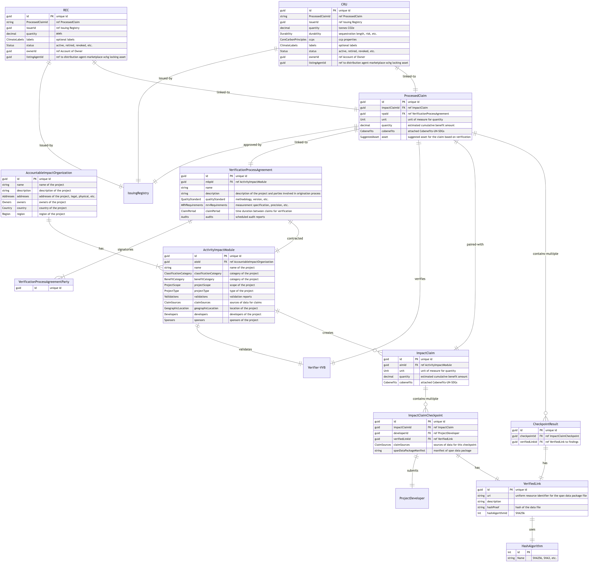

1. Introduction
The Digital MRV (dMRV) Framework defines the terminology, roles, process workflows, generic evidence packaging, and attestations that digital MRV solutions should follow to originate these next generation digital assets. The framework defines a generic roles-based process along with an extensible data model to facilitate a consistent taxonomy across infrastructure and asset classes and allow for customization of the diverse array of activities that can produce these new assets.
The framework can better enable investments in, and generation of, high-quality, well-documented ecological assets at scale. This framework defines the variables that enable the application of a wide variety of standards, protocols, and technologies that can be used in combination to create high-quality projects and claims, ready for validation and verification.
This is the technical specification for the dMRV Framework. It is intended to be used by software developers, business analysts, data scientists and others who want to understand the data model and its entities, e.g., tokens, agreements, data extensions, etc., defined by this specification.
1.1. Status of this Document
Although this is the released Version 2.0 of the framework, comments regarding the document are welcome, for IWA members, please file issues directly on GitHub, using the dMRV label.
Branching feedback can be made via pull request by branching and editing the GitHub Spec Bikeshed source directly.
Feedback from non-members is welcome via email to iwa
The technical specifications within this document are the result of consent processses by GBBC/IWA members and other external sources.
1.2. Scope
The scope of this document is to reach consensus on a tokenized orgination process that describes the behaviors, common data model, schema or data dictionary and encoding standard of the process for the IWA Voluntary Ecological Markets taskforce to represent the data entities involved in the origination process for the resulting digital assets.
1.3. Regarding the Token Taxonomy Framework
The Token Taxonomy Framework (TTF) is the IWA’s primary tool to define an open specification for a token. While it does a good job of defining a single token, it does not provide a good environment for defining a set of tokens that are related to each other and are involved in a larger process. This artifact will not replace the tokens defined in the TTF, but the tokens and their data models defined in this artifact will be used to define the tokens in the TTF.
Token definitions will be titled as Token & Data Type to make it clear that the token is defined in the context of the data model. All other data types are considered Property Sets in the TTF.
Placing all of the token definitions and especially the data model in a single artifact makes it easier to understand the relationships and dependencies between the tokens.
Additionally, a single agreement that governs the process of origination, the Verification Process Agreement, see § 3.22 Agreement & Data Type: VerificationProcessAgreement, is defined in this artifact. This agreement is used to establish the parties and their roles in the origination process.
1.4. Intended Audience
This technical specification is for
-
software developers who want to build software to edit, exchange or store data in the format defined by this specification
-
business analysts who want to understand the data model and data dictionary defined by this specification
-
data scientists who want to understand the data model and data dictionary defined by this specification
-
anyone else who wants to understand the data model and data dictionary defined by this specification
1.5. About the Voluntary Ecological Markets Taskforce
The IWA Voluntary Ecological Markets Taskforce is a working group of the InterWork Alliance (IWA) that is focused on the develoment of standards for the creation of digital assets that represent the environmental benefits of voluntary ecological markets.
The lifecycle of these assets has two main phases: origination and distribution. The origination phase is the process of creating the digital asset and the distribution phase is the process of distributing the digital asset to the market, e.g., marketplaces, exchanges, DeFi, etc.
This document and the specifications are aimed at the origination phase of the lifecycle.
1.6. Disclaimer
While IWA encourages the implementation of the technical specifications by all entities for interoperability, those organiazations and individuals who contributed to the development of this document do not assume responsibility for any consequences or damages resulting directly or indirectly from the use of this document.
1.7. License
The license can be found in Appendix A: License.
2. Terminology
- dMRV
-
Digital Measurement, Reporting and Verification
- Accountable Impact Organization
-
An Accountable Impact Organization represents an individual or organization that will undertake a set of activities to achieve a set of outcomes. The outcomes of the project are typically environmental benefits that are measured by one or more of the project’s Modular Benefit Projects (AIMs).
An Accountable Impact Organization can have multiple Modular Benefit Projects (AIMs) that are intended to achieve set of outcomes following a specific Quality Standard, i.e., methodology.
For example, an agricultural project may have a AIM for activities intended to remove carbon and another AIM for conserving biodiversity. This allows for an Accountable Impact Organization to have a single identity capable of having multiple types of credits issued to it.
The encoding of an Accountable Impact Organization in the data model is specified in § 3.3 Token & Data Type: AccountableImpactOrganization
- Activity Impact Module (AIM)
-
An Activity Impact Module, AIM, has a defined scope and a defined set of activities that are intended to achieve a defined set of outcomes. The outcomes of the project are typically environmental benefits and follow a spcific Quality Standard, i.e. methodology.
A AIM is scoped or bound to a quality standard/methodology that it follows along with a physical location or boundary that defines where the project activities occur. For example, a land based project would be scoped to an area/polygon on a map and an engineered sequestion based project would be scoped to a power plant/GPS/INSS.
An Accountable Impact Organization can have multiple AIMs, but there cannot be another AIM using the same benefit type/quality standard/methodology and location.
The encoding of a Activity Impact Module in the data model is specified in § 3.5 Data Type: ActivityImpactModule
- Quality Standard
-
A quality standard is a generic term for the methodology or protocol(s) that are used to validate a project and measure, report and verify the environmental benefits of an Accountable Impact Organization. The quality standard may include additional project validation requirements and be composed of different combinations of tools to calculate things like Additionally, etc.
The encoding of a Quality Standard in the data model is specified in § 3.46 Data Type QualityStandard
- Verification Automation
-
Solutions, platforms, services, etc., designed to accelerate the verification of claims. Depending on the Quality Standard, it may be able, with appropriate audit requirements, to perform full verification of claims issuance of impact credits. For other Quality Standards, these platforms or services may automate and prepare findings data that are evaluated by a VVB in order to speed up and support a continuous verification process.
- Impact Claim
-
An impact claim is a collection of the evidence data submitted according to the quality standard being followed by the AIM. An impact claim is composed of one or more checkpoints.
The encoding of an Impact Claim in the data model is specified in § 3.9 Token & Data Type: ImpactClaim
- Impact Claim Checkpoint
-
A impact claim checkpoint is a collection of the evidence data submitted periodically to an impact claim. The checkpoint is a cryptographic fingerprint of the evidence data to establish the provanance and integity of the evidence being submitted.
The encoding of an Impact Claim Checkpoint in the data model is specified in § 3.10 Data Type: ImpactClaimCheckpoint
- Span Data Package
-
A span data package, SDP, is the data package file, i.e. .zip file, that contains the raw evidence data being submitted with a checkpoint.
The encoding of a Span Data Package in the data model is specified in § 3.11 Data Type: SpanDataPackage
- SDP Manifest
-
A span data package has a manifest.json file in the root of the .zip file that contains the metadata about the contents of the file as well as extensible metadata that is specific for the quality standard being followed.
The encoding of a SDP Manifest in the data model is specified in § 3.12 Data Type: Manifest
- Processed Claim
-
A processed claim is a corresponding collection of checkpoint results that are generated by the validator.
The encoding of a Processed Claim in the data model is specified in § 3.20 Token & Data Type: ProcessedClaim
- Checkpoint Result
-
A checkpoint result is paired with a corresponding checkpoint for the claim being processed and contains the results of the verification of the checkpoint.
The encoding of a Checkpoint Result in the data model is specified in § 3.21 Data Type: CheckpointResult
- MRV Extension
-
A MRV Extension is a collection of metadata that is specific to the quality standard being followed. This metadata is used to extend the data model to support the specific requirements of the quality standard and can be contextually applied to the appropriate data types. For example, a MRV Extension can be applied to a Activity Impact Module to support the data requirements of a specific quality standard. MRV Extensions can be
untypedortyped. Untyped MRV Extensions are a collection of key/value pairs, while a typed MRV Extension is based on and conforms to a specific Json Schema. - Verification Process Agreement
-
A multiparty agreement between the parties involved in the origination and digital MRV process. It defines the quality standard being followed, any monitoring/audit reports, etc.
The encoding of a Verification Process Agreement in the data model is specified in § 3.22 Agreement & Data Type: VerificationProcessAgreement
- Carbon Removal or Reduction Credit - CRU
-
A CRU can represent either a carbon removal or reduction credit. The difference is that a carbon removal credit is a credit that is issued for the removal of carbon from the atmosphere, while a carbon reduction credit is a credit that is issued for the reduction of carbon emissions.
The encoding of a CRU in the data model is specified in § 3.23 Token & Data Type: CRU
3. Tokens and their Data Model
This section specifies the tokens and their data model for the entities involved in the origination process to conform with this specification.
The data model consists of the following major data types:
-
AccountableImpactOrganization: contains information identifying an individual or organization that will host one or more Activity Impact Module(s).
-
ActivityImpactModule: is parented by an Accountable Impact Organization that can have multiple AIMs and contains information identifying a project that will host one or more Impact Claim(s).
-
ImpactClaim: contains information identifying a claim that will host one or more Checkpoint(s).
-
SpanDataPackage: contains information identifying a span data package that will host one or more Checkpoint(s).
-
ProcessedClaim: contains information identifying a processed claim that will host one or more Checkpoint Result(s).
-
VerificationProcessAgreement: contains information identifying a verification agreement that will host one or more Checkpoint Result(s).
-
CRU: contains information identifying a carbon removal or reduction credit. This is the cononical example of an ecological asset and can be replaced by a different asset type, e.g., biodiversity, water, etc.
-
REC: contains information identifying a renewable energy credit. This is the cononical example of an ecological asset and can be replaced by a different asset type, e.g., biodiversity, water, etc.
Of these data types, the CRU and REC are the only tokens that are traded and retired or redeemed in the system. The other data types are used to support the origination process and provide the system of record for the data that backs the asset types.
Some data types, like the SpanDataPackage, support extensible metadata. This means that the data type can be extended to support additional data types that are specific to the quality standard being followed. For example, the SpanDataPackage data type can be extended to support the data types required by specific methodologies or quality standards.
Not all data types defined in this artifact are tokens, but are a Property-Set which are a collection of properties grouped together that can be used or composed into other property-sets or be present in many token definitions.
3.1. Highlevel Data Model
The following diagram shows the highlevel data model for the tokens defined in this specification, including the relationships between the them. This model only includes the highlights of properties within the data types and does not include the full list of properties for each data type.

3.2. Data Model
The following diagram shows the detailed data model for this specification, including the relationships between the them. This model is quite large can be downloaded from here.

3.3. Token & Data Type: AccountableImpactOrganization
AccountableImpactOrganization is a data type which represents the individual or organization that will host one or more ActivityImpactModule(s).
This data type is used to represent a one to many relationship that can occur when an Accountable Impact Organization wishes to create multiple types of ecological assets and not have to establish an organiazational identity for each type of asset.
3.3.1. Base Token and Behaviors
The AccountableImpactOrganization has a Non-Fungilble base that has the following behaviors:
-
Transferable (t): The AccountableImpactOrganization can be transferred from one party to another.
-
Divisible (d): The AccountableImpactOrganization can be divided into multiple AccountableImpactOrganization tokens, up to 2 decimal places.
-
Burnable (b): The AccountableImpactOrganization can be burned, retired or permanently deactivated.
TTF base formula with behaviors is: [τN{d,t,b}]
3.3.2. Properties
An Accountable Impact Organization has the following properties:
| Property | Type | Req | Specification |
|---|---|---|---|
id : Id
| String | M | The impact product identifier, See § 3.91 Data Type: Id for details. |
name
| String | M | The name of the Accountable Impact Organization. |
description :
| String | M | A brief description of the Accountable Impact Organization. |
| addresses : Address | Array | M | The non-empty set of addresses. Each value can represent physical, mailing and or legal addresses. See § 3.4 Data Type Address for details. |
owners : Id
| Array | M | The non-empty set of Id. Each of the values in the set is supposed to uniquely identify each owner of the project. |
country : ISO3166CC
| String | M | The country where the project is located. The value MUST be a valid ISO 3166-1 alpha-2 country code. See § 3.92 Data Type: ISO3166CC for details. |
region : Region
| String | M | The region the project is located in. |
informationLink : VerifiedLink
| String | M | A URI for information, i.e., webpage. See§ 3.33 Data Type: VerifiedLink |
mediaLinks : VerifiedLink
| Array | O | An array of optional media links. See§ 3.33 Data Type: VerifiedLink |
attestations : Attestation
| Array | O | An array of optional attestations including tags. See§ 3.42 Data Type: Attestation |
activityImpactModules : ActivityImpactModule
| Array | M | A collection of ActivityImpactModules that belong to this Accountable Impact Organization. |
| mrvExtensions : MrvExtension | Array | O | A collection of optional MrvExtensions, see § 3.14 Data Type: MrvExtension for details. |
3.4. Data Type Address
An address is a collection of address lines, city, state, postal code and country that can represent physical, legal or mailing addresses.
3.4.1. Properties
| Property | Type | Req | Specification |
|---|---|---|---|
addressType : AddressType
| AddressType | M | The type of the address. See § 3.77 Data Type: AddressType for details. |
addressLines : String
| Array | M | A collection of address lines. |
city :
| String | M | The city of the address. |
state :
| String | M | The state of the address. |
postalCode :
| String | M | The postal code of the address. |
country :
| String | M | The country of the address. |
3.5. Data Type: ActivityImpactModule
A ActivityImpactModule represents the actual project work that will generate benefits. It is bound to to Quality Standard and is where claims are issued from.
3.5.1. Scope of a ActivityImpactModule
Each ActivityImpactModule is scoped:
-
To a parent Accountable Impact Organization, which can host multiple modularBenefitProjects
-
Is bound or mapped to a QualityStandard that matches the AIM activities
-
Must be unique for its geographic footprint and Quality Standard
3.5.2. Properties
A ActivityImpactModule has the following properties:
| Property | Type | Req | Specification |
|---|---|---|---|
| id : Id | String | M | Unique identifier for the AIM, See § 3.91 Data Type: Id for details. |
aioId : Id
| String | M | The unique identifier for the parent Accountable Impact Organization, See § 3.91 Data Type: Id for details. |
| name : | String | M | The name of the ActivityImpactModule |
classificationCategory : ClassificationCategory
| String | M | The string representaion classification category of the ActivityImpactModule, see § 3.66 Data Type: ClassificationCategory for details. |
classificationMethod : Method
| String | M |
The string representation of the classification method used to generate the benefit, see § 3.71 Data Type: Method for details.
|
benefitCategory : UN-SDGs
| String | M | The string representation of the benefit category of the ActivityImpactModule. The value MUST be a valid UN Sustainable Development Goal (UN SDG) code. See § 3.79 Data Type: UN-SDGs for details. |
projectScope : ProjectScope
| String | M | The string representation scope of the AIM, maps to the scope of the Quality Standard. See § 3.80 Data Type: ProjectScope for details. |
projectType : ProjectType
| String | M | The type of the AIM, maps to the scope of the Quality Standard. See § 3.81 Data Type: ProjectType for details. |
projectScale : ProjectScale
| String | M | String representation of scale, see § 3.75 Data Type: ProjectScale for details. MICRO = less than 1000 tCO2e SMALL = 1000 - 10000 tCO2e MEDIUM = 10000 - 100000 tCO2e LARGE = 100000 - 1000000 tCO2e Micro, Small, Medium or Large |
arbId :
| String | O | If present, this is the California Air Resources Board (ARB) project identifier. |
geographicLocation : GeographicLocation
| Object | M | This is the geographic location of the project. See § 3.45 Data Type: GeographicLocation for details. |
firstYearIssuance :
| String | O | If present, this is the year credits were first issued for the project. |
registryProjectId :
| String | O | If present, this is the Id assigned by the issuing registry for the project on their system. |
developers : Id
| Array | M | List of developers for the project. See § 3.91 Data Type: Id for details. |
sponsors : Id
| Array | M | List of sponsors, i.e., financiers, etc. for the project. See § 3.91 Data Type: Id for details. |
claimSources : ClaimSource
| Object | M | A collection of claim evidence sources for the project, i.e., sensors, meters, applications, etc. See § 3.8 Data Type: ClaimSource for details. |
impactClaims : ImpactClaim
| Object | M | A collection of impact claims for the project. See § 3.9 Token & Data Type: ImpactClaim for details. |
validations : Validation
| Object | M | A collection of validations for the project. See § 3.6 Data Type: Validation for details. |
attestations : Attestation
| Array | O | An array of optional attestations including tags. See§ 3.42 Data Type: Attestation |
| mrvExtensions : MrvExtension | Array | O | A collection of MRV extensions for the project. See § 3.14 Data Type: MrvExtension for details. |
3.6. Data Type: Validation
Represents the validation steps and artifacts created in the validation phase of a project. These would include Project Design Documents (PDD), etc.
3.6.1. Properties
| Property | Type | Req | Specification |
|---|---|---|---|
validationDate : Date
| Date | M | The date of the validation. See § 3.51 Data Type: Date for details. |
validatingPartyId :
| String | M | The Id of the validating party, see § 3.91 Data Type: Id for details. |
validationMethod :
| String | M | The validation method used for the project, can include a version identifier. |
validationExpirationDate : Date
| Date | M | The date of the validation expires. See § 3.51 Data Type: Date for details. |
validationSteps : ValidationStep
| Array | M | A collection of Validation Steps. See § 3.7 Data Type: ValidationStep for details. |
3.7. Data Type: ValidationStep
A validation step is a single step in the validation process, a validation process can be composed of multiple steps each step can generate its own artifact like a Project Design Document.
3.7.1. Properties
| Property | Type | Req | Specification |
|---|---|---|---|
validationStepName :
| String | M | The name of the validation step. |
validationStepDescription :
| String | M | The description of the validation step. |
validationStepStatus : ValidationStepStatus
| ValidationStepStatus | M | The ValidationStepStatus of the validation step. See § 3.76 Data Type: ValidationStepStatus for details. |
stepDocumentLink : VerifiedLink
| VerifiedLink | M | The artifact generated by the validation step. See § 3.33 Data Type: VerifiedLink for details. |
3.8. Data Type: ClaimSource
A ClaimSource is a registered source of evidence data to support a claim. A claim source can be a device like a sensor or meter, an application that collects user data or reference data like satellite imagery.
3.8.1. Properties
| Property | Type | Req | Specification |
|---|---|---|---|
| id : Id | String | M | Unique identifier for the ClaimSource, See § 3.91 Data Type: Id for details. |
aimId : Id
| String | M | The unique identifier for the parent ActivityImpactModule, See § 3.91 Data Type: Id for details. |
| name : | String | M | A name for the source. |
| description : | String | M | Description of the source and other details like the type of data collected, the frequency of collection, GPS/Location, etc. |
| location : GeographicLocation | Object | M | GNSS, i.e., GPS coordinates, for the source. See § 3.45 Data Type: GeographicLocation for details. |
sourceType : ClaimSourceType
| String | M | String representing the source type can include sensor, meter, application, reference, etc. See § 3.70 Data Type: ClaimSourceType for details. |
unitOfMeasure : Unit
| String | M | The string representation for unit of measure, see § 3.87 Data Type: Unit for details. |
sourceIdentifier :
| string | M | this can be the unique identifier for the device, like a serial number, public key, etc. |
| mrvExtensions : MrvExtension | Array | O | A collection of optional MrvExtensions, see § 3.14 Data Type: MrvExtension for details. |
3.9. Token & Data Type: ImpactClaim
An ImpactClaim represents the actual project work that will generate benefits through out the claim period that is agreed to by the developer, VVB and Registry. ImpactClaims are created by a ActivityImpactModule and contains metadata about the claim period as well as a collection of checkpoints that are used to submitted project evidence that is verified by the VVB or Verification Automation.
3.9.1. Base Token and Behaviors
The ImpactClaim has a Non-Fungilble base that has the following behaviors:
-
Indivisible (~d): The ImpactClaim is indivisible, meaning it cannot be divided into multiple ImpactClaim tokens.
-
Non-transferable (~t): The ImpactClaim is non-transferable, meaning it cannot be transferred to another parent Accountable Impact Organization/AIM.
-
Delegable (g): The ImpactClaim can have certain behaviors delegated to another party.
-
encumberable (e): The ImpactClaim can be encumbered by a third party, typically the verification automation or VVB.
-
ProcessedClaimControl (PCC): The ImpactClaim also has this Behavior-Group with a set of behaviors a bundled and configured to control the processing of the ImpactClaim.
-
Mintable (m): The ImpactClaim can be minted, i.e., created, by the parent ActivityImpactModule.
-
Roles (r): The ImpactClaim can have roles assigned to it, i.e., the VVB, Verifier, etc. that has the ability to burn or retire the claim after processing has completed.
-
Burnable (b): The ImpactClaim can be burned, i.e., retired, by the VVB or Verifier.
-
TTF base formula with behaviors is: [τN{~d,~t,g,e,PCC}]
3.9.2. Properties
| Property | Type | Req | Specification |
|---|---|---|---|
| id : Id | String | M | Unique identifier for the ImpactClaim, See § 3.91 Data Type: Id for details. |
| aimId : Id | String | M | The unique identifier for the parent ActivityImpactModule, See § 3.91 Data Type: Id for details. |
processedClaimId : Id
| String | M | The unique identifier for the corrisponding processed claim that the verification automation uses to track the verification process and results of a claim. See § 3.91 Data Type: Id for details. The value can be null until a processed claim is created. |
unit : Unit
| String | M | The unit of measurement/analysis of the project. See Data Type § 3.87 Data Type: Unit for further information. |
| quantity : Decimal | Decimal | O | Optional, the estimated benefit quantity. |
co-benefits : Co-benefit
| Object | O | Optional list of co-benefits associated with the ImpactClaim. See § 3.28 Data Type: Co-Benefit for details. |
checkpoints : ImpactClaimCheckpoint
| Object | M | A collection of checkpoints for the ImpactClaim. See § 3.10 Data Type: ImpactClaimCheckpoint for details. |
| mrvExtensions : MrvExtension | Array | O | A collection of MRV extensions for the claim. See § 3.14 Data Type: MrvExtension for details. |
3.10. Data Type: ImpactClaimCheckpoint
The impact claim checkpoint is a collection of evidence that is submitted by the developer to support the claim. The VVB or verification automation will review the evidence and provide a status of the evidence in a corresponding CheckpointResult in the processed claim.
Checkpoints are used to periodically submit evidence on an agreed upon basis from the ActivityImpactModule to the VVB or verification automation. This enables the development of continous verification of the project and the ability to provide feedback to the developer on the status of the project and the evidence submitted before the end of the claim period.
3.10.1. Properties
| Property | Type | Req | Specification |
|---|---|---|---|
| id : | String | M | Unique identifier for the ImpactClaimCheckpoint, See § 3.91 Data Type: Id for details. |
claimId :
| String | M | The unique identifier for the parent ImpactClaim, See § 3.91 Data Type: Id for details. |
claimSourceIds : Id
| Array | M | A list of registered claim sources submitting evidence in this checkpoint. See § 3.91 Data Type: Id for details. |
projectDeveloperId :
| String | M | The Id of the project developer that is submitting the checkpoint, must be a developer registered in the ActivityImpactModule. This is used when multiple identities may submit a checkpoint for a claim, for example one party may submit evidence of carbon capture and another may submit evidence of sequestration to support a carbon removal claim. See § 3.91 Data Type: Id for details. |
efBefore :
| String | O | Environmental factor before activity - i.e., total emissions = 3 tCO2e |
efAfter :
| String | O | Environmental factor after activity - i.e., total emissions = 2 tCO2e. |
checkpointDateRange : DateRange
| DateRange | M | The date range for the checkpoint. See § 3.49 Data Type: DateRange for details. |
verifiedLinkToCheckpointData : VerifiedLink
| Object | M | A VerifiedLink that contain the evidence, in a span data package submitted by the AIM. See § 3.33 Data Type: VerifiedLink for details. |
| mrvExtensions : MrvExtension | Array | O | A collection of MRV extensions for the checkpoint. See § 3.14 Data Type: MrvExtension for details. |
spanDataPackage : SpanDataPackage
| String | O | Optional, collect and store the span data package for the checkpoint, this could be the string contents of the manifest.json in the Span Data Package root. See § 3.11 Data Type: SpanDataPackage for details. |
3.11. Data Type: SpanDataPackage
A span data package is an index and metadata file that is stored in the root of the SpanDataPackage file that is submitted with a checkpoint. It contains meta data about the evidence files contained in the package as well as extensible MRV data that is specific to the Quality Standard/Methodology the AIM is bound to.
3.11.1. Properties
| Property | Type | Req | Specification |
|---|---|---|---|
| manifest : Manifest | Object | M | The manifest object, a serialized JSON object that contains the metadata for the SpanDataPackage. See § 3.12 Data Type: Manifest for details. |
3.12. Data Type: Manifest
The Span Data Package has a manifest.json file that is an extensible JSON object that contains the metadata about the contents in the Span Data Package. The manifest contains a list of files that are contained in the Span Data Package and the metadata about the files. The manifest also contains extensible MRV data that is specific to the Quality Standard/Methodology the AIM is bound to.
3.12.1. Properties
| Property | Type | Req | Specification |
|---|---|---|---|
| id : Id | String | M | The unique identifier for the Span Data Package, See § 3.91 Data Type: Id for details. |
| version: String | String | M | The versions of the Span Data Package specification, default is 1.0.0. |
| aioId : Id | String | M | The unique identifier for the Accountable Impact Organization, See § 3.91 Data Type: Id for details. |
| aimId : Id | String | M | The Activity Impact Module that the SDP is sourced from. |
| claimId : Id | String | M | The Impact Claim that the SDP is sourced from. See, § 3.91 Data Type: Id for details. |
| projectDeveloperId : Id | String | M | The Project Developer that submitted the SDP, See, § 3.91 Data Type: Id for details. |
| created : DatePoint | DatePoint | M | The DatePoint that the Span Data Package was created. See § 3.50 Data Type: DatePoint for details. |
| mrvExtensions : MrvExtension | Array | O | A collection of one or more MRV Extensions that are specific to the Quality Standard/Methodology the AIM is bound to. See § 3.14 Data Type: MrvExtension for details. |
| files : Sdp-File | Array | M | The files that are in the Span Data Package, see § 3.13 Data Type: Sdp-File for details. |
3.13. Data Type: Sdp-File
A Sdp-File is a set of metadata about an evidence file contained within the Span Data Package.
3.13.1. Properties
| Property | Type | Req | Specification |
|---|---|---|---|
| name : String | String | M | The name of the file. |
| type : String | String | M | The string representation of the file type, see § 3.59 Data Type: FileType for details. |
| description : String | String | M | A description of the contents of the file. |
| claimSourceId : Id | String | M | The id for the claim source registered with the ActivityImpactModule that the file is sourced from. |
| claimSourceAttestation : DigitalSignature | Object | O | The source attestation or signature for the file. See § 3.37 Data Type: DigitalSignature for details. |
| mrvExtensions : MrvExtension | Array | O | A collection of optional MrvExtensions. See § 3.14 Data Type: MrvExtension for details. |
3.14. Data Type: MrvExtension
A MRV Extension is an extensible JSON object that contains the MRV data that is specific to the Quality Standard/Methodology. MRV mrvExtensions can be defined by the methdology developers or the verifier, or verification automation to include an attributes or data that is helpful to have on the ledger. MrvExtensions can be added to ActivityImpactModule, ImpactClaim, and ProcessedClaim types.
The MRV Extension can be typed or untyped, i.e., schemaless, so the MRV Extension with have either an untypedExtension or a typedExtension property.
3.14.1. Properties
| Property | Type | Req | Specification |
|---|---|---|---|
mrvExtensionContext : MrvExtensionContext
| String | M | The type of extension and which entity it applies to, See § 3.58 Data Type: MrvExtensionContext for details. |
| untypedExtension : UntypedExtension | Object | O* | An untyped extension, see § 3.15 Data Type: UntypedExtension for details. Not valid if typedExtension is present. |
| typedExtension : TypedExtension | Object | O* | A typed extension, see § 3.17 Data Type: TypedExtension for details. Not valid if untypedExtension is present. |
3.15. Data Type: UntypedExtension
An untyped extension is a schemaless extension that can be used to store key/vaue pairs of data that is not defined by the specification.
3.15.1. Properties
| Property | Type | Req | Specification |
|---|---|---|---|
| name : String | String | M | The name of the MRV Extension, this is a string that is defined by the verifier or verification automation. |
| version: String | String | M | The versions of the MRV Extension specification, default is 1.0.0. |
| description : String | String | M | A description of the MRV Extension, this is a string that is defined by the verifier or verification automation describing the purpose of the extension. |
documentation :String
| String | O | A link to the documentation for the MRV Extension, see § 3.19 Extension Documentation: ExtensionDocumentation for details. |
| data_extensions : DataExtension | Array | M | A collection of DataExtensions |
3.16. Data Type: DataExtension
A Data Extension is an extensible JSON object that contains the data that is specific to the Quality Standard/Methodology using simple Name and Value pairs with nesting capabilities.
3.16.1. Properties
| Property | Type | Req | Specification |
|---|---|---|---|
| key : String | String | M | The key of the property of the extension, this is a string name for the extension. |
| value : String | String | M | The value of the property of the extension, this is a string value for the extension. This could contain a serialized object. |
| Data : DataExtension | Array | O | Optional array of DataExtensions, this is a collection of DataExtensions that are nested within the DataExtension to create a data hierchy within the extension. |
3.17. Data Type: TypedExtension
A typed extension is a Json schema based extension that can be used to store data that is defined by a different specification, QualityStandard or industry. Sample and official typed extensions
can be found in the Extensions folder of the Token Taxonomy Framework. Adopters of this specification are invited to
create their own typed extension sets for QualityStandards or industries that they are working with.
3.17.1. Properties
| Property | Type | Req | Specification |
|---|---|---|---|
| dataSchema : String | String | M | The Url/Uri to the Json extension file for the schema, see § 3.18 Typed Extension Schema File: TypedExtensionDefinition for details. |
| documentation: String | String | M | The Url/Uri to the documentation for the extension, see § 3.19 Extension Documentation: ExtensionDocumentation for details. |
| data : String | String | M | A Json object that contains the data for the extension, see § 3.18 Typed Extension Schema File: TypedExtensionDefinition for details. |
3.18. Typed Extension Schema File: TypedExtensionDefinition
Every extension MUST define a valid JSON Schema document according to the JSON Schema specification. The extension schema file defines the data encoding and syntactical data validation details.
Authors of extension schema definitions SHOULD attempt to add as many validation rules as possible such that data validation can be automated as much as possible.
Extension schemas SHOULD be defined in a way to make illegal extension representations unrepresentable.
Additional details which are not representable in JSON Schema such as data semantics or validation rules, MUST be defined in the extension documentation (§ 3.19 Extension Documentation: ExtensionDocumentation).
3.19. Extension Documentation: ExtensionDocumentation
The extension documentation is a human-readable document that describes the extension in detail. Extension document MUST be written in English. The documentation CAN be offered as a translation in other languages as well.
The documentation MUST include:
-
Version of the extension and the document. The value MUST be a string in the format
major.minor.patchas defined in Semantic Versioning 2.0.0. -
If the extension was updated, the document MUST include a changelog. The changelog MUST contain a summary of the changes between subsequent versions.
-
A description of the extension, including the business case addressed by the extension and the business value gained by extending the Pathfinder Data Model. 2.1 This includes methodological alignment of the extension, especially covering the alignment with the Pathfinder Framework if applicable.
-
A public URL to the § 3.18 Typed Extension Schema File: TypedExtensionDefinition.
-
A license declaration covering the documentation, the extension schema file, and their use.
-
Electronic contact information on how to get in touch with the authors and maintainers of the extension.
3.20. Token & Data Type: ProcessedClaim
The verification automation or VVB creates a ProcessedClaim at the beginning of verification to track the verification process and support continous verification. A ProcessedClaim is paired with an ImpactClaim and also contains a collection of CheckpointResults where results for each checkpoint verified are recorded.
3.20.1. Base Token and Behaviors
The ProcessedClaim has a Non-Fungible base with the following behaviors:
-
Indivisible (~d): The ProcessedClaim is indivisible, meaning it cannot be divided into multiple ImpactClaim tokens.
-
Non-transferable (~t): The ProcessedClaim is non-transferable, meaning it cannot be transferred to another parent Accountable Impact Organization/AIM.
-
Delegable (g): The ProcessedClaim can have certain behaviors delegated to another party.
-
CredibleClaimControl (CCC): The ProcessedClaim also has this Behavior-Group with a set of behaviors a bundled and configured to control the processing of the ImpactClaim.
-
Mintable (m): The ProcessedClaim can be minted, i.e., created, by the parent ActivityImpactModule.
-
Roles (r): The ProcessedClaim can have roles assigned to it, i.e., the Issuing Registry. that has the ability to burn or retire the claim after a credit has been issued.
-
Burnable (b): The ProcessedClaim can be burned, i.e., retired, by the VVB or Verifier.
-
TTF base formula with behaviors is: [τN{~d,~t,g,CCC}]
3.20.2. Properties
| Property | Type | Req | Specification |
|---|---|---|---|
| id : String | String | M | Unique identifier for the ProcessedClaim, See § 3.91 Data Type: Id for details. |
vpaId : String
| String | M | The unique identifier for the parent VerificationProcessAgreement, See § 3.91 Data Type: Id for details. |
impactClaimId : String
| String | M | The unique identifier for the paired ImpactClaim, See § 3.91 Data Type: Id for details. |
creditId : String
| String | O | The unique identifier for the credit, once issued, associated with the ProcessedClaim, See § 3.91 Data Type: Id for details. |
unit : Unit
| String | M | The unit of measurement/analysis of the project. See Data Type § 3.87 Data Type: Unit for further information. |
| quantity : Decimal | Decimal | M | The verified benefit quantity after the verification period is complete. |
| co-benefits : Co-benefit | Object | M | A collection of co-benefits that should be attributed to the credit issued. See § 3.28 Data Type: Co-Benefit for details. |
checkpointResults : CheckpointResults
| Object | M | A collection of checkpoint results for the ProcessedClaim. See § 3.21 Data Type: CheckpointResult for details. |
| mrvExtensions : MrvExtension | Object | O | A collection of MRV extensions that are specific to the Quality Standard/Methodology. See § 3.14 Data Type: MrvExtension for details. |
issuanceRequest :
| Object | M | Since a processed claim is generic, it can contain an issuance request that contains the proposed asset type with values to the issuing registry to use as a consideration. For example, this field could contain as the proposed asset a CRU Token with the values that the verifier proposes after verification. This allows the processed claim to be used as the source for any type of asset or credit. |
3.21. Data Type: CheckpointResult
A CheckpointResult is summary and verified links to verification results for the corresponding ImpactClaimCheckpoint. The CheckpointResult enables continous verification of the project and the ability to provide feedback to the developer during the verification process.
3.21.1. Properties
| Property | Type | Req | Specification |
|---|---|---|---|
| id : String | String | M | Unique identifier for the CheckpointResult, See § 3.91 Data Type: Id for details. |
| checkpointId : String | String | M | The unique identifier for the corresponding ImpactClaimCheckpoint being processed, See § 3.91 Data Type: Id for details. |
verifiedLinkToProcessDataResult : VerifiedLink
| Object | M | A VerifiedLink object that contain the processed data findings from verification. See § 3.33 Data Type: VerifiedLink for details. |
dateRange : DateRange
| DateRange | M | The date range for the checkpoint being processed. See § 3.49 Data Type: DateRange for details. |
| efBefore : String | String | O | Verified environmental factor before activity - i.e., total emissions = 3 tCO2e |
| efAfter : String | String | O | Verified environmental factor after activity - i.e., total emissions = 2 tCO2e. |
| mrvExtensions : MrvExtension | Object | O | A collection of MRV extensions that are specific to the Quality Standard/Methodology. See § 3.14 Data Type: MrvExtension for details. |
3.22. Agreement & Data Type: VerificationProcessAgreement
A VerificationProcessAgreement is an agreement between a developer, verifier and registry that defines the terms of the verification process. Shared properties of all the data entities in the validation and verification process are listed here, like the Quality Standard being used, the MRV Requirements, Claim Period, audit schedule, etc. The VerificationProcessAgreement is the indirect parent object for all the other data entities in the origination process.
3.22.1. Properties
| Property | Type | Req | Specification |
|---|---|---|---|
| id : String | String | M | Unique identifier for the VerificationProcessAgreement, See § 3.91 Data Type: Id for details. |
| name : String | String | M | The name of the Verification Process Agreement, usually the name of the project - name of the issuing registry. |
| description : String | String | M | A description of the Verification Process Agreement and where special instructions are provided. |
signatories : Signatory
| Array | M | A collection of signatories, the AIM owner, Issuing Registry, VVB and verification platform are examples of signatories. See § 3.36 Data Type: Signatory for details. |
qualityStandard : QualityStandard
| Object | M | The quality standard being used for the verification. See § 3.46 Data Type QualityStandard for details. |
mrvRequirements : MRVRequirements
| Object | M | The MRV requirements being used for the verification. See § 3.47 Data Type MRVRequirements for details. |
agreementDate : Date
| Date | M | The date the agreement was signed. See § 3.51 Data Type: Date for details. |
estimatedAnnualCredits :
| String | O | The quantity of credits that are expected to be generated annually. |
| aimId : Id | String | M | The unique identifier for the corresponding AIM. See § 3.91 Data Type: Id for details. |
AuditSchedule : AuditSchedule
| String | M | The string representation of the audit schedule, see § 3.78 Data Type: AuditSchedule for details. |
Audits : Audits
| Object | M | The audits that are required for the verification agreement. See § 3.35 Data Type: Audits for details. |
| mrvExtensions : MrvExtension | Array | O | A collection of optional MrvExtensions, see § 3.14 Data Type: MrvExtension for details. |
3.23. Token & Data Type: CRU
The Carbon Removal or Reduction Unit, is a digital asset or token that services as a credit represents 1 metric tonne of CO2e. This is a non-financial, un-regulated, intangible digital asset that behavies like a commodity and is ready for distribution.
This is one example of a specific type of token or credit that can represent the ecological or environmental benefits that can be traded and retired to net down effective emissions for the beneficiary.
Other types of credits can be created, and reuse all of the other data entities for the generic validation and verification process.
3.23.1. Base Token and Behaviors
The CRU has a Non-Fungible base with the following behaviors:
-
Divisible (d): The CRU can be divided into multiple CRU tokens, up to 4 decimal places.
-
Transferable (t): The CRU can be transferred from one party to another.
-
Encumberable (e): The CRU can be encumbered by a third party, typically by a listing agent for distribution.
-
Revokable (v): The CRU can be revoked by the issuer, typically if the credit is found to be invalid, i.e., a carbon reversal event.
-
Delegable (g): The CRU can be delegated to a third party, typically by a listing agent in distribution scenarios.
-
Offsetable Supply Control (OSC): The CRU has a Behavior-Group for offseting and supply control with the following behaviors:
-
Mintable (m): The CRU can be minted by the issuer.
-
Roles (r): The CRU has a role for the issuer to be able to mint/issue and approve retirements.
-
Burnable (b): The CRU can be burned or retired by the owner, or by delegation, but requires approval by the issuer and optionaly can include other metadata like reporting period and jurisdiction.
-
TTF base formula with behaviors is: [τN{d,t,e,v,g,}]
3.23.2. Properties
| Property | Type | Req | Specification |
|---|---|---|---|
| id : Id | String | M | Unique identifier for the CRU, See § 3.91 Data Type: Id for details. |
| quantity : Decimal | Decimal | M | A quantity that is fractional to represent up to 8 decimal places, use a string or decimal for the quantity. |
unit : Unit
| String | M | The string representation of the unit of measure, see § 3.87 Data Type: Unit for details. |
| ownerId : Id | string | M | The id for the owner of the CRU, See § 3.91 Data Type: Id for details. |
| listingAgentid : String | String | M | The unique identifier for the listing agent, See § 3.91 Data Type: Id for details. This could be a marketplace or exchange that has an encumberance on the CRU and can split or transfer their representations of the CRU to other parties on their system of record. |
coreCarbonPrinciples : CoreCarbonPrinciples
| Object | M | The CoreCarbonPrinciples for this CRU, see § 3.24 Data Type: CoreCarbonPrinciples for details. |
climateLabels : ClimateLabel
| Array | O | A collection of optional climate labels, see § 3.32 Data Type: ClimateLabel for details. |
status : CreditStatus
| Status | M | The status of the CRU, see § 3.83 Data Type: CreditStatus for details. |
referencedCru : ReferencedCredit
| Array | O | Used to hold values for reference a credits on another registry, there are likely to be more fields needed here so using a property-set instead of a single field. See § 3.34 Data Type: ReferencedCredit for details. |
| appliedToId : Id | String | O | Optional link to the Id of the reporting period the asset was retired for, if supported. See § 3.91 Data Type: Id for details. |
| processedClaimId : Id | String | M | The id for the ProcessedClaim that the CRU is based on, see § 3.91 Data Type: Id for details. |
| issuerId : Id | String | M | The id for the Issuing Registry, see § 3.91 Data Type: Id for details. |
3.24. Data Type: CoreCarbonPrinciples
The CoreCarbonPrinciples are a set of properties that are used to describe the carbon removal or reduction that follows the ICVCM Core Carbon Principles.
3.24.1. Properties
| Property | Type | Req | Specification |
|---|---|---|---|
| assetId : Id | String | O | Typically the issuing registry’s master id or serial number that resides on their registry system. Could be empty or the same as the token’s id if not needed. |
| issuanceDate : Date | Date | M | The date of credit issuance, see § 3.51 Data Type: Date for details. |
| vintage : String | String | M | The vintage year of the credit for the project. |
generationType : GenerationType
| String | M | The string representation for how the credit was generated, see § 3.68 Data Type: GenerationType for details. |
verificationStandard : Standard
| String | M | The string representation of the verification standard, see § 3.84 Data Type: Standard for details. |
mitigationActivity : MitigationActivity
| String | M | The string representation of the MitigationActivity, see § 3.44 Data Type: MitigationActivity for details. |
durability : Durability
| Object | M | The Durability properties for the credit, see § 3.25 Data Type: Durability for details. |
replacement : Replacement
| Object | O | Present if the credit is a replacement credit, see § 3.27 Data Type: Replacement for details. |
paCompliance : PACompliance
| Object | M | The PACompliance properties for the credit, see § 3.30 Data Type: PACompliance for details. |
| quantifiedSDGImpacts : Co-benefit | Array | O | An array of optional quantified impact cobenefits, see § 3.79 Data Type: UN-SDGs for details. |
adaptionCoBenefits : UN-SDGs
| Array | O | An array of adaptation co-benefits of the token consistent with the host country’s priorities, consistent with the provisions under Article 7.1 of the Paris Agreement, see § 3.79 Data Type: UN-SDGs for details. |
3.25. Data Type: Durability
The Durability properties are used to describe the durability of the carbon removal or reduction, its expected permanence, and the expected duration of the carbon removal or reduction. It includes the risk of reversal and how that risk is mitigated.
3.25.1. Properties
| Property | Type | Req | Specification |
|---|---|---|---|
storageType : Storage
| String | M | The string representation of the Storage Type, see § 3.72 Data Type: Storage for details. |
| years : WholeNumber | Number | M | The length of time in years that the carbon removal or reduction is expected to last. |
degradable : Degradable
| Object | M | The degradable properties for the credit, see § 3.26 Data Type: Degradable for details. |
reversalMitigation : ReversalMitigation
| Object | M | The risk of reversal and how the risk is mitigated, see § 3.29 Data Type: ReversalMitigation for details. |
3.26. Data Type: Degradable
The Degradable properties are used to describe the degradation of the carbon removal or reduction.
3.26.1. Properties
| Property | Type | Req | Specification |
|---|---|---|---|
| percentage : WholeNumber | Number | M | The rate of degradation of the carbon removal or reduction, 0 = no degredation possible, 100 = all sequestered should be expected to be released |
| factor : WholeNumber | Number | M | Factor of years for degredation, 25 = .25 per year if linear or exponential starts at 25% of durability years. |
degredationType : DegradationType
| String | M | A string representation of the degredation type, see § 3.54 Data Type: DegradationType for details. |
3.27. Data Type: Replacement
Replacement is used when a credit is replacing a revoked credit.
3.27.1. Properties
| Property | Type | Req | Specification |
|---|---|---|---|
replacesId : String
| String | M | The Id of the revoked credit being replaced. |
replacementDate : Date
| Object | M | The date of the replacement. |
notes :
| String | O | Optional notes about the revokation and replacement |
3.28. Data Type: Co-Benefit
Co-benefits currently map to the UN SDGs and include a description for how the benefit applies.
3.28.1. Properties
| Property | Type | Req | Specification |
|---|---|---|---|
un-sdg : UN-SDGs
| String | M | The string representation of a UN SDG that the co-benefit applies to. See § 3.79 Data Type: UN-SDGs for details. |
description : Description
| String | M | A description of how the co-benefit applies to the project or activity. |
3.29. Data Type: ReversalMitigation
The ReversalMitigation properties are used to describe the risk of reversal and how the risk is mitigated.
3.29.1. Properties
| Property | Type | Req | Specification |
|---|---|---|---|
reversalRisk : ReversalRisk
| String | M | The string representation of the reversal risk. See § 3.55 Data Type: ReversalRisk for details. |
insuranceType : DurabilityInsuranceType
| String | M | A string representation of the insurance type, see § 3.56 Data Type: DurabilityInsuranceType for details. |
insurancePolicyOwner : InsurancePolicyOwner
| String | M | A string representation of the insurance policy owner, see § 3.57 Data Type: InsurancePolicyOwner for details. |
| insurancePolicyLink : VerifiedLink | Object | O | Link to the insurance policy, see § 3.33 Data Type: VerifiedLink for details. |
3.30. Data Type: PACompliance
Details about a credit’s Paris Agreement Compliance.
3.30.1. Properties
| Property | Type | Req | Specification |
|---|---|---|---|
correspondingAdjustment : CorrespondingAdjustment
| String | M | The string status of the corresponding adjustment, see§ 3.86 Data Type: CorrespondingAdjustment for details. |
letterOfApproval : VerifiedLink
| Object | O | Optional verified link to the letter of approval. See § 3.33 Data Type: VerifiedLink for details. |
3.31. Token & Data Type: REC
The Renewable Energy Credit is an example token is a Fungible Token that represents the environmental benefits of a renewable energy project
and is exchangeable for evidencing the production of electricity. The primary unit of measure for I-REC(E)s is the megawatt hour (MWh), with below megawatt
hour resolution to the watt hour (Wh) as optional. Each unit of electricity is uniquely attributable
to the source generation using the same project and claims process that other assets like the CRU originate from.
This is one example of a specific type of token or credit that can represent the ecological or environmental benefits that can be traded and retired to net down effective emissions for the beneficiary.
3.31.1. Base Token and Behaviors
The REC has a Non-Fungible base with the following behaviors:
-
Divisible (d): The REC can be divided into multiple REC tokens, up to 6 decimal places.
-
1.000000= 1MW -
0.001000= 1kW -
0.000001= 1W
-
-
Transferable (t): The REC can be transferred from one party to another.
-
Encumberable (e): The REC can be encumbered by a third party, typically by a listing agent for distribution.
-
Revokable (v): The REC can be revoked by the issuer, typically if the credit is found to be invalid, i.e., a carbon reversal event.
-
Delegable (g): The REC can be delegated to a third party, typically by a listing agent in distribution scenarios.
-
Offsetable Supply Control (OSC): The REC has a Behavior-Group for offseting and supply control with the following behaviors:
-
Mintable (m): The REC can be minted by the issuer.
-
Roles (r): The REC has a role for the issuer to be able to mint/issue and approve retirements.
-
Burnable (b): The REC can be burned or retired by the owner, or by delegation, but requires approval by the issuer and optionaly can include other metadata like reporting period and jurisdiction.
-
TTF base formula with behaviors is: [τF{d,t,e,v,g,}]
3.31.2. Properties
| Property | Type | Req | Specification |
|---|---|---|---|
| id : Id | String | M | Unique identifier for the REC, See § 3.91 Data Type: Id for details. |
type : RecType
| String | M | The string representation of the REC type, see § 3.67 Data Type: RecType for details. |
| validJurisdiction : String | String | O | Optional jurisdiction where of the REC can be redeemed, i.e. US-Texas, multiples separated by a comma. |
| quantity : Decimal | Decimal | M | A quantity that is fractional to represent up to 8 decimal places, use a string or decimal for the quantity. |
unit : Unit
| String | M | The string representation of the unit of measure, see § 3.87 Data Type: Unit for details. |
| ownerId : Id | string | M | The id for the owner of the REC, See § 3.91 Data Type: Id for details. |
| listingAgentid : Id | String | M | The unique identifier for the listing agent, See § 3.91 Data Type: Id for details. This could be a marketplace or exchange that has an encumberance on the REC and can split or transfer their representations of the REC to other parties on their system of record. |
climateLabels : ClimateLabel
| Array | O | A collection of optional climate labels, see § 3.32 Data Type: ClimateLabel for details. |
status : CreditStatus
| Status | M | The status of the REC, see § 3.83 Data Type: CreditStatus for details. |
referencedRec : ReferencedCredit
| Array | O | Used to hold values for reference a credits on another registry, there are likely to be more fields needed here so using a property-set instead of a single field. See § 3.34 Data Type: ReferencedCredit for details. |
| appliedToId : Id | String | O | Optional link to the Id of the reporting period the asset was retired for, if supported. See § 3.91 Data Type: Id for details. |
| processedClaimId : Id | String | M | The id for the ProcessedClaim that the REC is based on, see § 3.91 Data Type: Id for details. |
| issuerId : Id | String | M | The id for the Issuing Registry, see § 3.91 Data Type: Id for details. |
3.32. Data Type: ClimateLabel
A ClimateLabel is a reference to an external data element that contains a climate label, typically set by the registry or methodology.
3.32.1. Properties
| Property | Type | Req | Specification |
|---|---|---|---|
| id : String | String | M | Unique identifier for the ClimateLabel, See § 3.91 Data Type: Id for details. |
| name : String | String | M | The name of the ClimateLabel. |
| description : String | String | M | A description about how the label applies to the credit. |
3.33. Data Type: VerifiedLink
A VerifiedLink is a reference, URI or URL to an external data element along with a cryptographic fingerprint of the external data so that its integrity can be checked by any party.
3.33.1. Properties
| Property | Type | Req | Specification |
|---|---|---|---|
| id : Id | String | M | Unique identifier for the VerifiedLink, See § 3.91 Data Type: Id for details. |
uri :String
| String | M | The URI or URL of the external data element. |
| description : String | String | M | A description of the link or data referenced. |
| hashProof: String | String | M | The cryptographic hash of the external data element. |
hashAlgorithm : HashAlgorithm
| String | M | The cryptographic hash algorithm used to generate the hash. See § 3.60 Data Type: HashAlgorithm for details. |
3.34. Data Type: ReferencedCredit
A ReferencedCredit is used to hold values for credits that reference a credit on another registry, there are likely to be more fields needed here so using a property-set instead of a single field.
3.34.1. Properties
| Property | Type | Req | Specification |
|---|---|---|---|
| referencedCreditId : Id | String | M | Unique identifier for the referenced credit, this can be a serial number or a master id on the external registry. |
| registryLink : VerifiedLink | Object | M | VerifiedLink to the external registry for the referenced credit or asset, see § 3.33 Data Type: VerifiedLink for details. |
| metadata : String | String | O | Optional metadata about the referenced credit, json serialized as a string. |
3.35. Data Type: Audits
Audits contain the audit schedule, date of last audit and the verified links to the audit reports for the verification agreement.
3.35.1. Properties
| Property | Type | Req | Specification |
|---|---|---|---|
| lastAuditDate : Date | Date | O | Date of the audit, See § 3.51 Data Type: Date for details. |
| auditReports : VerifiedLink | Array | M | A collection of VerifiedLinks to audit reports for the verification agreement, see § 3.33 Data Type: VerifiedLink . |
3.36. Data Type: Signatory
A Signatory is a party that has signed a document or agreement. The Signatory is a digital entity or identity in a specific role in the dMRV process.
3.36.1. Properties
| Property | Type | Req | Specification |
|---|---|---|---|
| id : Id | String | M | Unique identifier for the signatory, See § 3.91 Data Type: Id for details. |
name : String
| String | M | The individual or organization name in the role. |
description : String
| String | M | A description of the signatory, notes or comments. |
signatoryRole : SignatoryRole
| String | M | The role of the signatory in the dMRV process. |
signature : DigitalSignature
| Object | M | The digital signature of the signatory. |
Data Type: DigitalSignature
3.37. Data Type: DigitalSignature
A Signature is a digital signature of a document or agreement. The Signature is a digital entity or identity in a specific role in the dMRV process. Support for JWT and Verifiable Credentials is planned.
3.37.1. Properties
A Signature contains the following properties:
| Property | Type | Req | Specification |
|---|---|---|---|
type : SignatureType
| String | M | String representation of the enum SignatureType, see § 3.64 Data Type: SignatureType for details. |
jws : String
| String | O | If using a JWS, this is the serialized JWS. |
credential : Credential
| Object | O | If using a Verifiable Credential, this is the VC. |
Data Type: Credential (data format, type (JWS, Verifiable Credential))
3.38. Data Type: Credential
A Credential is a digital credential that is an emerging W3C standard for Decentralized Identifiers (DIDs) and Verifiable Credentials (VCs). As implementations of the standard emerge, the dMRV specification will be updated to reflect the standard. Implementations can use the current format and type of the credential as a placeholder until the standard is finalized.
It is expected that the Credential will be a JSON Web Signature (JWS) or a Verifiable Credential (VC) as defined by the W3C Verifiable Credentials Data Model 1.0 specification and can be used to assign a DID to a party, device, source, etc. in the dMRV process. These will be used for attestations, verifications, and signatures in the dMRV process.
See W3C Verifiable Credentials Implementation Guidelines 1.0 for more information.
3.38.1. Properties
A Credential contains the following properties:
| Property | Type | Req | Specification |
|---|---|---|---|
context : String
| Array | M | The context of the credential, an array of strings. |
| id : String | String | M | The id of the credential, a string. |
type : CredentialType
| Array | M | The list of credential types, an array of strings. |
| issuer : String | String | M | The issuer of the credential, a string. |
| issuanceDate : Date | String | M | The issuance date of the credential, a string. |
| credentialSubject : CredentialSubject | Object | M | The subject of the credential, an object. |
| proof : Proof | Object | M | The proof of the credential, an object. |
3.39. Data Type: CredentialSubject
A CredentialSubject is the subject of a Credential.
3.39.1. Properties
A CredentialSubject contains the following properties:
| Property | Type | Req | Specification |
|---|---|---|---|
| id : String | String | O | Unique identifier for the credential subject, usually assigned if referencing another DiD, but an optional property. |
| property : String | String | M | The subject may contain multiple properties, these can be presented as a Json string in a single property or an array of properties. |
3.40. Data Type: Proof
A Proof is a digital proof of a Credential.
3.40.1. Properties
A Proof contains the following properties:
| Property | Type | Req | Specification |
|---|---|---|---|
type : ProofType
| String | M | String representation of the enum ProofType, see § 3.62 Data Type: ProofType for details. |
| created : Date | String | M | The creation date of the proof, a string. |
| proofPurpose : String | String | M | The purpose of the proof, a string. |
| verificationMethod : String | String | M | The verification method of the proof, a string. |
| challenge : String | String | O | Optional for Presentations for replay attacks, the challenge of the proof, a string. |
| domain : String | String | O | Optional for Presentations for replay attacks, the domain of the proof, a string. |
| jws : String | String | M | The JSON Web Signature of the proof, a string. |
3.41. Data Type: VerifiablePresentation
A VerifiablePresentation is a digital presentation of a Verifiable Credential or Digital Signature that is linked to a DID or Signatory.
3.41.1. Properties
A VerifiablePresentation contains the following properties:
| Property | Type | Req | Specification |
|---|---|---|---|
| id : String | String | M | The id of the presentation, a string. |
type : SignatureType
| String | M | The type of the presentation, a string. |
| holder : String | String | M | The holder of the presentation, a string. |
| credentials : Credential | Array | M | The credentials of the presentation, an array of objects. |
| proof : Proof | Object | M | The proof of the presentation, an object. |
3.42. Data Type: Attestation
Attestations provide opportunities for context in MRV data. Conceptually, attestations can be the data within the project or the commentary around the project. For project data, “Direct Data Attestations” can come from individuals, project developers, verifiers, and/or directly from devices asserting an event that is represented digitally on the public ledger.
Attestations, metadata, or “Tags” describing digital entities, such as actors, calculations, or their quantifiable outcomes, allow for more context to exist about Accountable Impact Organizations or Impact Modules (AIM) within the market, which inherently have a relationship with credit pricing and can describe overall project effectiveness.
3.42.1. Properties
An Attestation contains the following properties:
| Property | Type | Req | Specification |
|---|---|---|---|
| tag : Tag | Object | M | Allow for more context and attributes to be applied to a data type and be digitally signed, see § 3.43 Data Type: Tag for details.
|
type : AttestationType
| String | M | The type of the attestation, a string. |
proof_type : ProofType
| String | M | The type of the proof, a string. |
| attestor : String | String | M | The attestor of the attestation, a string. |
| signature : DigitalSignature | Object | M | The signature of the attestation, an object. |
3.43. Data Type: Tag
Are attestated metadata describing digital entities, such as actors, calculations, or their quantifiable outcomes, allow for more context to exist about a data type within the market, which inherently have a relationship with credit pricing and can describe overall project effectiveness.
3.43.1. Properties
A Tag’s properties will vary based on the implementation, for example using DIDs or Verified Credentials. An example tag might have the following properties:
| Property | Type | Req | Specification |
|---|---|---|---|
| id : Id | String | M | Id of the tag, see § 3.91 Data Type: Id for details. |
| name : String | String | M | Name of the tag as applied to the data type. |
| context : String | Array | M | The contexts of the tag, similar to Json-LD, an array of strings. |
| description : String | String | M | The description of the tag. |
3.44. Data Type: MitigationActivity
The combination structure of the CCP MitigationActivity attribute.
3.44.1. Properties
| Property | Type | Req | Specification |
|---|---|---|---|
carbonCategory : CarbonCategory
| String | M | The activity of the project, see § 3.69 Data Type: CarbonCategory for details. |
method : Method
| String | M | The method used by the project for its activities, see § 3.71 Data Type: Method for details. |
3.45. Data Type: GeographicLocation
The GeographicLocation is a data type that can represent a GNSS/GPS point location for projects like a facility or building and or a geographic area, like a land project using a polygon represented as a string or file. *Either the longitude and latitude or the string or file for the area must have a value.
3.45.1. Properties
| Property | Type | Req | Specification |
|---|---|---|---|
| id : Id | String | M | Unique identifier for the GNSS, See § 3.91 Data Type: Id for details. |
latitude : Decimal
| Decimal | O* | The latitude of the location using Decimal Degrees. |
longitude : Decimal
| Decimal | O* | The longitude of the location using Decimal Degrees. |
geoJsonOrKml : String
| String | O* | The geoJson or KML as a minimized string of the geographic area. |
geographicLocationFile : VerifiedLink
| Object | O* | The geographic location file, Geojson, KML, etc., for larger geographic data sets, see § 3.33 Data Type: VerifiedLink for details. |
3.46. Data Type QualityStandard
The QualityStandard is a set of properties that identify the accredited standard, a methodology and any versioning information for the validation and verification process.
3.46.1. Properties
| Property | Type | Req | Specification |
|---|---|---|---|
| name : String | String | M | Name of the quality standard, methodology or protocol, can include version information in the name. |
| description : String | String | O | Description of the quality standard, can include differentiating information related to the project implementation. |
standard : Standard
| String | M | The standard used for the quality standard. See § 3.84 Data Type: Standard for details. |
methdologyAndTools : MethodologyAndTool
| Array | M | A list of the methodology and any tools used for the quality standard. See § 3.85 Data Type: MethodologyAndTool for details. |
| version :String | String | O | The version of the quality standard, methodology or protocol. |
| co-benefits : Co-Benefit | Object | O | The co-benefits of the quality standard. See § 3.28 Data Type: Co-Benefit for details. |
| standardLink : VerifiedLink | Object | M | The VerifiedLink to the standard. See § 3.33 Data Type: VerifiedLink for details. |
3.47. Data Type MRVRequirements
The MRVRequirements is a set of properties that identify the measurement specification, the precision of the measurement and the link to the specification.
3.47.1. Properties
| Property | Type | Req | Specification |
|---|---|---|---|
MeasurementSpecification : MeasurementSpecification
| String | M | A string representation of the measurement specification, see § 3.82 Data Type: MeasurementSpecification for details. |
| specificationLink : VerifiedLink | Object | M | The VerifiedLink to the specification. See § 3.33 Data Type: VerifiedLink for details. |
| precision : PrecisionMix | Object | M | The precision of the measurement. See § 3.48 Data Type: PrecisionMix for details. |
claimPeriod : ClaimPeriod
| String | M | The string representation of claim period for measurement and reporting. See § 3.74 Data Type: ClaimPeriod for details. |
| typedMrvExtensions : TypedExtension | Array | O | A collection of typed MRV extensions used in the verification process, see § 3.17 Data Type: TypedExtension for details. |
3.48. Data Type: PrecisionMix
The mix of precision, by percentage, of the measurement specification used for the project. The sum of all the mixes must be 100 for 100%.
3.48.1. Properties
| Property | Type | Req | Specification |
|---|---|---|---|
| low : Decimal | Decimal | M | The percentage of estimated or factored precision for the project. |
| medium : Decimal | Decimal | M | The percentage of indirect high quality precision for the project. |
| high : Decimal | Decimal | M | The percentage of direct highly accurate measurements for the project, i.e., from sensors. |
3.49. Data Type: DateRange
A date range contains a start and end date, with optional timestamps for precision.
3.49.1. Properties
| Property | Type | Req | Specification |
|---|---|---|---|
start : DatePoint
| DatePoint | M | The start date of the range. |
end : DatePoint
| DatePoint | M | The end date of the range. |
3.50. Data Type: DatePoint
A DatePoint combines a date with an optional UTC Timestamp for precision if needed.
3.50.1. Properties
| Property | Type | Req | Specification |
|---|---|---|---|
date : Date
| Date | M | The date of the point. See § 3.51 Data Type: Date for details. |
timestamp : Timestamp
| Timestamp | O | The UTC timestamp of the point. |
3.51. Data Type: Date
Represents a date with discrete values for month, day and year.
3.51.1. Properties
| Property | Type | Req | Specification |
|---|---|---|---|
dateTime : DateTime
| DateTime | O | The UTC date time, often used as DateTimeOffset, depending on the platform. |
dateString : String
| String | M | Can be a simple date string, i.e. "2023-01-01". |
3.52. Data Type: DateTime
A DateTime is a date and time with an optional UTC Timestamp for precision if needed.
Example values:
3.52.1. JSON Representation
Each DateTime MUST be encoded as a JSON String.
3.53. Data Type: Timestamp
A Timestamp is a number of milliseconds since the Unix epoch (1970-01-01T00:00:00Z).
Example values:
3.53.1. JSON Representation
Each Timestamp MUST be encoded as a JSON String.
3.54. Data Type: DegradationType
Does the sequestration degrade over time?
NOT_APPLICABLE-
the activity claim is not applicable to degradation.
LINEAR-
for activity claim is linear degradation
EXPONENTIAL-
for activity claim is exponential degradation
3.54.1. JSON Representation
Each DegredationType MUST be encoded as a JSON String.
3.55. Data Type: ReversalRisk
Carbon sequestration reversal risk.
ZERO-
GHG reservoirs are subject to zero risk if the form of carbon storage is such that stored CO2e cannot conceivably be released into the atmosphere. This also includes activity types with no storage, and thus no risk of reversal, e.g., Enhanced weathering of minerals, mineralisation, renewable energy, other activities leading to lower demand for fossil fuel.
LOW-
GHG reservoirs might be subject to low risk of reversal if the characteristics of storage reservoirs (e.g., the geological formation in which carbon is to be stored,in the case of carbon capture and storage) and monitoring requirements virtually eliminate risk, e.g. Carbon capture and storage in geological formations, direct air capture and storage.
MATERIAL-
GHG reservoirs might be subject to significant reversal risks if: risks of reversal are exogenous and/or unavoidable (e.g., extreme weather events, invasive pest outbreaks, and wildfires); the GHG reservoir is subject to natural disturbance and natural fluxes in carbon inventories; reversal events may or can be expected to occur over a specified time horizon (100 years); a mitigation activity proponent could have economic interests in intentionally causing a reversal (for example cutting down a forest for timber or changing land use to agriculture), e.g. Improved forest management, afforestation/reforestation, enhanced soil organic carbon sequestration, Avoided deforestation, sequestration via harvested wood products (for example buildings)
3.55.1. JSON Representation
Each ReversalRisk MUST be encoded as a JSON String.
3.56. Data Type: DurabilityInsuranceType
Types of durability insurance for carbon removal credits.
BUFFER_POOL-
an Accountable Impact Organization or insurance product can set aside credits into a pool for risk mitigation. If needed issued credits can be revoked and replaced by credits from the pool.
REFUND-
purchase price of the credit is refunded to the buyer and the credit is revoked.
3.56.1. JSON Representation
Each DurabilityInsuranceType MUST be encoded as a JSON String.
3.57. Data Type: InsurancePolicyOwner
The owner of the durability insurance policy.
ACCOUNTABLE_IMPACT_ORGANIZATION-
the Accountable Impact Organization is the owner of the insurance policy.
ISSUING_REGISTRY-
the issuing registry is the owner of the insurance policy.
RETIRER-
the retirer is the owner of the insurance policy.
CUSTODIAN-
the custodian is the owner of the insurance policy.
3.57.1. JSON Representation
Each InsurancePolicyOwner MUST be encoded as a JSON String.
3.58. Data Type: MrvExtensionContext
An MRV Extension can be context specific and attach to the appropriate data type. Because there can be many MRV Extensions defined for a Quality Standard and be applied to different data types, the MRV Extension Type is used to identify the data type to which the MRV Extension applies.
UNKNOWN_MRV_EXTENSION-
Unknown extension
AIM_MRV_EXTENSION-
AIM extension
AIM_CLAIM_SOURCE_MRV_EXTENSION-
AIM Claim Source extension
CLAIM_MRV_EXTENSION-
Claim extension
CHECKPOINT_MRV_EXTENSION-
Checkpoint extension
SDP_MANIFEST_MRV_EXTENSION-
SDP Manifest extension
SDP_FILE_MRV_EXTENSION-
SDP File extension
CHECKPOINT_RESULT_MRV_EXTENSION-
Checkpoint Result extension
PROCESSED_CHECKPOINT_MRV_EXTENSION-
Processed Checkpoint extension
3.58.1. JSON Representation
Each MrvExtensionContext MUST be encoded as a JSON String.
3.59. Data Type: FileType
The file type indicates what data is contained within the file.
DATA_BINARY-
The file contains binary data.
DATA_CSV-
The file contains CSV data.
DATA_JSON-
The file contains JSON data.
DATA_XML-
The file contains XML data.
DATA_OTHER-
The file contains other data.
3.59.1. JSON Representation
Each FileType MUST be encoded as a JSON String.
3.60. Data Type: HashAlgorithm
The HashAlgorithm is a string enumeration that defines the cryptographic hash algorithm used to generate the hash of an external data element.
SHA-256-
The SHA-256 cryptographic hash algorithm.
SHA3-
The SHA3 cryptographic hash algorithm.
3.60.1. JSON Representation
Each HashAlgorithm MUST be encoded as a JSON String.
3.61. Data Type: AttestationType
Attestations can take the form of traditional PKI/JWT or Verified Credentials
RS256-
JSON Web Token
VC-
Verified Credentials
3.61.1. JSON Representation
Each AttestationType MUST be encoded as a JSON String.
3.62. Data Type: ProofType
The type of attestation requested, supports two types: JWT, along with a ciphertype and Verified Credentials.
JWT-
Json Web Token
DIP-
Data Integrity Proofs
CL_ZKP-
Camenisch-Lysyanskaya Zero-Knowledge Proofs
3.62.1. JSON Representation
Each ProofType MUST be encoded as a JSON String.
3.63. Data Type: CredentialType
The type of credential requested, supports three types: Verifiable Credentials, Verifiable Presentations, and Identity Credentials.
VERIFIABLE_CREDENTIAL-
Verifiable Credentials
VERIFIABLE_PRESENTATION-
Verifiable Presentations
IDENTITY_CREDENTIAL-
Identity Credentials
3.63.1. JSON Representation
Each CredentialType MUST be encoded as a JSON String.
3.64. Data Type: SignatureType
The type of signature requested, supports two types: JSON Web Signature and Verified Credentials.
JWS-
JSON Web Signature
VERIFIED_CREDENTIAL-
Verified Credentials
3.64.1. JSON Representation
Each SignatureType MUST be encoded as a JSON String.
3.65. Data Type: SignatoryRole
Role of the signatory for the Validation and Verification process.
ISSUING_REGISTRY-
for Issuing Registry
VALIDATION_AND_VERIFICATION_BODY-
for Validation and Verification Body
PROJECT_OWNER-
for Project Owner
VERIFICATION_PLATFORM_PROVIDER-
for Verification Automation Provider
3.65.1. JSON Representation
Each SignatoryRole MUST be encoded as a JSON String.
3.66. Data Type: ClassificationCategory
The ClassificationCategory is a string enumeration that defines the classification for the type of credit the project is seeking. This list will be expanded to include other categories, like biodiversity, in the future.
CARBON_AVOIDANCE-
for Carbon Avoidance
CARBON_REDUCTION-
for Carbon Reduction
CARBON_REMOVAL-
for Carbon Removal
WATER-
for Water
UNDEFINED-
for undefined
3.66.1. JSON Representation
Each ClassificationCategory MUST be encoded as a JSON String.
3.67. Data Type: RecType
The REC Type is a string enumeration that defines the type of renewable energy credit or program used to generate the credit.
IREC-
For International REC
NERC-
For North American REC
3.67.1. JSON Representation
Each RecType MUST be encoded as a JSON String.
3.68. Data Type: GenerationType
How the project generates the credits.
GENERATED-
the credit was generated by evidence collected and verified by the project; verifier and registry
EX_ANTE-
the credit represents forcasted emissions reductions
EX_POST-
the credit represents historical emissions reductions
3.68.1. JSON Representation
Each GenerationType MUST be encoded as a JSON String.
3.69. Data Type: CarbonCategory
The CarbonCategory is used by the Core Carbon Principles to indicate wiether a credit is a reduction or a removal.
REDUCTION-
for Carbon Reduction
REMOVAL-
for Carbon Removal
3.69.1. JSON Representation
Each CarbonCategory MUST be encoded as a JSON String.
3.70. Data Type: ClaimSourceType
A ClaimSourceType is the source type for evidence in a claim that can include sensor, meter, application, reference, etc.
SENSOR_DEVICE-
A sensor or meter that collects data to support a claim, e.g., IoT, meter, etc.
USER_APPLICATION-
An application running on a device, iPad, etc. that uses the device’s sensors like GPS, date/time and user authentication as evidence of source claim data.
REFERENCE-
Reference data like satellite imagery, remote sensing, anayltical models, etc.
3.70.1. JSON Representation
Each ClaimSourceType MUST be encoded as a JSON String.
3.71. Data Type: Method
The method used by the project for its activities.
NATURAL-
for Natural or using Natural processes
TECHNOLOGICAL-
for Technological or engineered
BOTH_NATURAL_AND_TECHNOLOGICAL-
for both Natural and Technological
3.71.1. JSON Representation
Each Method MUST be encoded as a JSON String.
3.72. Data Type: Storage
Storage is used by the Core Carbon Principles to indicate the storage type.
BIOLOGICAL-
for biological carbon sequestration
GEOLOGICAL-
for geological carbon sequestration
MATERIALS-
for sequestrationin materials, i.e., in products, concrete, etc.
3.72.1. JSON Representation
Each Storage MUST be encoded as a JSON String.
3.73. Data Type: Region
The region of the project.
GLOBAL-
for Global
CENTRAL_AMERICA-
for Central America
CENTRAL_ASIA-
for Central Asia
EAST_ASIA-
for East Asia
EUROPE-
for Europe
INTERNATIONAL-
for International
MIDDLE_EAST-
for Middle East
NORTH_AFRICA-
for North Africa
NORTH_AMERICA-
for North America
OCEANIA-
for Oceania
SOUTH_AMERICA-
for South America
SOUTH_ASIA-
for South Asia
SOUTH_EAST_ASIA-
for South East Asia
SUB_SAHARAN_AFRICA-
for Sub-Saharan Africa
3.73.1. JSON Representation
Each Region MUST be encoded as a JSON String.
3.74. Data Type: ClaimPeriod
Duration of the claim period.
DAILY-
for Daily
WEEKLY-
for Weekly
MONTHLY-
for Monthly
QUARTERLY-
for Quarterly
SEMIANNUAL-
for Semiannual
ANNUAL-
for Annual
BIENNIAL-
for Biennial
3.74.1. JSON Representation
Each ClaimPeriod MUST be encoded as a JSON String.
3.75. Data Type: ProjectScale
The scale of the project.
MICRO-
less than 1000 tCO2e
SMALL-
1000 - 10000 tCO2e
MEDIUM-
10000 - 100000 tCO2e
LARGE-
100000 - 1000000 tCO2e
3.75.1. JSON Representation
Each ProjectScale MUST be encoded as a JSON String.
3.76. Data Type: ValidationStepStatus
The status of the validation step.
UNKNOWN_VALIDATION_STEP_STATUS-
for Unknown status
NOT_STARTED-
for Not Started
IN_PROGRESS-
for In Progress
COMPLETED-
for Completed
3.76.1. JSON Representation
Each ValidationStepStatus MUST be encoded as a JSON String.
3.77. Data Type: AddressType
The type of the address.
PHYSICAL-
for Physical Address
LEGAL-
for Legal Address
MAILING-
for Mailing Address
3.77.1. JSON Representation
Each AddressType MUST be encoded as a JSON String.
3.78. Data Type: AuditSchedule
The schedule of the audit.
ANNUAL-
for Annual Audits
BIANNUAL-
for Biannual Audits
BIENNIAL-
for Biennial Audits
TRIENNIAL-
for Triennial Audits
QUADRENNIAL-
for Quadrennial Audits
QUINQUENNIAL-
for Quinquennial Audits
3.78.1. JSON Representation
Each AuditSchedule MUST be encoded as a JSON String.
3.79. Data Type: UN-SDGs
The UN SDGs are used in certain categories for entities as well as with Co-benefits that are usually attatched to assets like voluntary carbon credits.
NO_CATEGORY-
for No Category
NO_POVERTY-
for No Poverty
ZERO_HUNGER-
for Zero Hunger
GOOD_HEALTH_AND_WELL_BEING-
for Good Health and Well Being
QUALITY_EDUCATION-
for Quality Education
GENDER_EQUALITY-
for Gender Equality
CLEAN_WATER_AND_SANITATION-
for Clean Water and Sanitation
AFFORDABLE_AND_CLEAN_ENERGY-
for Affordable and Clean Energy
DECENT_WORK_AND_ECONOMIC_GROWTH-
for Decent Work and Economic Growth
INDUSTRY_INNOVATION_AND_INFRASTRUCTURE-
for Industry Innovation and Infrastructure
REDUCED_INEQUALITIES-
for Reduced Inequalities
SUSTAINABLE_CITIES_AND_COMMUNITIES-
for Sustainable Cities and Communities
RESPONSIBLE_CONSUMPTION_AND_PRODUCTION-
for Responsible Consumption and Production
CLIMATE_ACTION-
for Climate Action
LIFE_BELOW_WATER-
for Life Below Water
LIFE_ON_LAND-
for Life on Land
PEACE_JUSTICE_AND_STRONG_INSTITUTIONS-
for Peace Justice and Strong Institutions
PARTNERSHIPS_FOR_THE_GOALS-
for Partnerships for the Goals
3.79.1. JSON Representation
Each UN-SDGs MUST be encoded as a JSON String.
3.80. Data Type: ProjectScope
Project scope helps classify projects.
OTHER-
for Other
AGRICULTURE-
for Agriculture
CARBON_CAPTURE_AND_STORAGE-
for Carbon Capture and Storage
CHEMICAL_PROCESSES-
for Chemical Processes
FORESTRY_AND_LAND_USE-
for Forestry and Land Use
HOUSEHOLD_AND_COMMUNITY-
for Household and Community
INDUSTRIAL_MANUFACTURING-
for Industrial Manufacturing
RENEWABLE_ENERGY-
for Renewable Energy
TRANSPORTATION-
for Transportation
WASTE_MANAGEMENT-
for Waste Management
3.80.1. JSON Representation
Each ProjectScope MUST be encoded as a JSON String.
3.81. Data Type: ProjectType
Project Type helps to classify a project.
ADVANCED_REFRIGERANTS-
for Advanced Refrigerants
AFFORESTATION_REFORESTATION-
for Afforestation Reforestation
ALUMINUM_SMELTERS_EMISSION_REDUCTIONS-
for Aluminum Smelters Emission Reductions
AVOIDED_FOREST_CONVERSION-
for Avoided Forest Conversion
AVOIDED_GRASSLAND_CONVERSION-
for Avoided Grassland Conversion
BYCYCLES-
for Bicycles
BIODIGESTERS-
for Biodigesters
BIOMASS-
for Biomass
BRICK_MANUFACTURING_EMISSION_REDUCTIONS-
for Brick Manufacturing Emission Reductions
BUNDLED_COMPOST_PRODUCTION_AND_SOIL_APPLICATION-
for Bundled Compost Production and Soil Application
BUNDLED_ENERGY_EFFICIENCY-
for Bundled Energy Efficiency
CARBON_CAPTURE_AND_ENHANCED_OIL_RECOVERY-
for Carbon Capture and Enhanced Oil Recovery
CARBON_CAPTURE_IN_CEMENT-
for Carbon Capture in Cement
CARBON_CAPTURE_IN_PLASTIC-
for Carbon Capture in Plastic
CLEAN_WATER-
for Clean Water
COMMUNITY_BOREHOLES-
for Community Boreholes
COMPOST_ADDITION_TO_RANGELAND_SOIL-
for Compost Addition to Rangeland Soil
COMPOSTING-
for Composting
COOKSTOVES-
for Cookstoves
ELECTRIC_VEHICLES_AND_CHARGING-
for Electric Vehicles and Charging
ENERGY_EFFICIENCY-
for Energy Efficiency
FEED_ADDITIVES-
for Feed Additives
FLEET_EFFICIENCY-
for Fleet Efficiency
FUEL_SWITCHING-
for Fuel Switching
FUEL_TRANSPORT- for Fuel Transport
GEOTHERMAL- for Fuel Transport
-
for Geothermal
GRID_EXPANSION_AND_MINI_GRIDS-
for Grid Expansion and Mini Grids
HFC_REFRIGERANT_RECLAMATION-
for HFC Refrigerant Reclamation
HFC_REPLACEMENT_IN_FOAM_PRODUCTION-
for HFC Replacement in Foam Production
HFC23_DESTRUCTION-
for HFC23 Destruction
HYDROPOWER-
for Hydropower
IMPROVED_FOREST_MANAGEMENT-
for Improved Forest Management
IMPROVED_IRRIGATION_MANAGEMENT-
for Improved Irrigation Management
LANDFILL_METHANE-
for Landfill Methane
LEAK_DETECTION_AND_REPAIR_IN_GAS_SYSTEMS-
for Leak Detection and Repair in Gas Systems
LIGHTING-
for Lighting
MANURE_METHANE_DIGESTER-
for Manure Methane Digester
MASS_TRANSIT-
for Mass Transit
METHANE_RECOVERY_IN_WASTEWATER-
for Methane Recovery in Wastewater
MINE_METHANE_CAPTURE-
for Mine Methane Capture
MINERALIZATION-
for Mineralization
N20_DESTRUCTION_IN_ADIPIC_ACID_PRODUCTION-
for N20 Destruction in Adipic Acid Production
N20_DESTRUCTION_IN_NITRIC_ACID_PRODUCTION-
for N20 Destruction in Nitric Acid Production
NATURAL_GAS_ELECTRICITY_GENERATION-
for Natural Gas Electricy Generation
NITROGEN_MANAGEMENT-
for Nitrogen Management
OIL_RECYCLING-
for Oil Recycling
OZONE_DEPLETING_SUBSTANCES_RECOVERY_AND_DESTRUCTION-
for Ozone Depleting Substances Recovery and Destruction
PNEUMATIC_RETROFIT-
for Pneumatic Retrofit
PROPYLENE_OXIDE_PRODUCTION-
for Propylene Oxide Production
RE_BUNDLED-
for Re-Bundled
REDD_PLUS-
for REDD+
REFRIGERANT_LEAK_DETECTION-
for Refrigerant Leak Detection
RICE_EMISSION_REDUCTIONS-
for Rice Emission Reductions
SF6_REPLACEMENT-
for SF6 Replacement
SHIPPING-
for Shipping
SOLAR_CENTRALIZED-
for Solar Centralized
SOLAR_DISTRIBUTED-
for Solar Distributed
SOLAR_LIGHTING-
for Solar Lighting
SOLAR_WATER_HEATERS-
for Solar Water Heaters
SOLID_WASTE_SEPARATION-
for Solid Waste Separation
SUSTAINABLE_AGRICULTURE-
for Sustainable Agriculture
SUSTAINABLE_GRASSLAND_MANAGEMENT-
for Sustainable Grassland Management
TRUCK_STOP_ELECTRIFICATION-
for Truck Stop Electrification
UNIVERSITY_CAMPUS_EMISSION_REDUCTIONS-
for University Campus Emission Reductions
WASTE_DIVERSION-
for Waste Diversion
WASTE_GAS_RECOVERY-
for Waste Gas Recovery
WASTE_HEAT_RECOVERY-
for Waste Heat Recovery
WASTE_INCINERATION-
for Waste Incineration
WASTE_RECYCLING-
for Waste Recycling
WEATHERIZATION-
for Weatherization
WETLAND_RESTORATION-
for Wetland Restoration
WIND-
for Wind
BIOCHAR-
for Biochar
CARBONATED_MATERIALS-
for Carbonated Materials
CARBON_CAPTURE_IN_GEOLOGICAL_STORAGE-
for Carbon Capture in Geological Storage
ENHANCED_ROCK_WEATHERING-
for Enhanced Rock Weathering
TERRESTRIAL_STORAGE_OF_BIOMASS-
for Terrestrial Storage of Biomass
3.81.1. JSON Representation
Each ProjectType is represented as a string in JSON.
3.82. Data Type: MeasurementSpecification
The MRV measurement specification used.
ISO_14064-
for ISO 14064
ISO_14064_1-
for ISO 14064-1
ISO_14064_2-
for ISO 14064-2
3.82.1. JSON Representation
Each MeasurementSpecification is represented as a string in JSON.
3.83. Data Type: CreditStatus
A status indicator used for credits.
ACTIVE-
for Active
INACTIVE-
for Inactive
REVOKED-
for Revoked
RETIRED-
for Retired
3.83.1. JSON Representation
Each CreditStatus is represented as a string in JSON.
3.84. Data Type: Standard
The list of Quality Standard, e.g., methodology or protocols.
GS_VER-
for Gold Standard Verified Emissions Reduction
VCS-
for Cerified Carbon Standard generates VCUs
VOS-
for Voluntary Offset Standard
CCB-
for Climate
GREEN_E-
for US renewable energy
CDM-
for Compliance: Clean Development Mechanism generates CERs
JI-
for Compliance: Joint Implementation - Kyoto binding targets generation of ERUs
EUA-
for Compliance: European Union Allowances
PURO-
for Puro Standard verified durable carbon removal
PENDING-
for Other or in Development
3.84.1. JSON Representation
Each Standard is represented as a string in JSON.
3.85. Data Type: MethodologyAndTool
Each Quality Standard defined in the VerificationProcessAgreement(#dt-verification-process-agreement) is has a Methodology and might also have multiple toolkits for Additionality, Leakage, and Baseline, etc. This is not an exhaustive list of Methodologies and Tools as there can be hundreds of them.
CDM - AM0007-
for CDM - AM0007
CDM - AM0010-
for CDM - AM0010
3.85.1. JSON Representation
Each MethodologyAndTool is represented as a string in JSON.
3.86. Data Type: CorrespondingAdjustment
A credits corresponding adjustment status.
NONE-
for there is no Corresponding adjustment associated with this credit. Meaning the country of origin for the credit will not subtract the credit from their Nationally Determined Contributions (NDCs)if the credit is exported and consumed in a different country.
PARIS_AGREEMENT_COMPLIANT-
for there is verified Corresponding adjustment associated with this credit. Meaning the country of origin for the credit will not count the credit in their Nationally Determined Contributions (NDCs)so the credit can be exported and count in a different country’s NDC.
PARIS_AGREEMENT_PENDING_COMPLIANCE-
for there is corresponding adjustment associated with this credit; that is pending verification. Meaning the country of origin for the credit will not count the credit in their Nationally Determined Contributions (NDCs)so the credit can be exported and count in a different country’s NDC.
3.86.1. JSON Representation
Each CorrespondingAdjustment is represented as a string in JSON.
3.87. Data Type: Unit
Unit is the enumeration of accepted declared units with values
liter-
for unit liter
kilogram-
for unit kilogram
cubic meter-
for cubic meter
kilowatt-
for kilowatt
megawatt-
for megawatt
megajoule-
for megajoule
ton kilometer-
for ton kilometer
square meter-
for square meter
TONNE_CO2E-
for tonne of CO2e
TONNE_CO2-
for tonne of CO2
TONNE_CH4-
for tonne of CH4
TONNE_N2O-
for tonne of N2O
MwH-
for megawatt hour
3.87.1. JSON Representation
The value of each Unit MUST be encoded as a JSON String.
3.88. Data Type: WholeNumber
A whole number, may be signed, positive or negative.
Example values:
3.88.1. JSON Representation
Each whole number MUST be encoded as a JSON String.
3.89. Data Type: Decimal
A dotted-decimal number.
Example values:
3.89.1. JSON Representation
Each Decimal MUST be encoded as a JSON String.
3.90. Data Type: String
A regular UTF-8 String.
3.90.1. JSON Data Representation
Each String MUST be encoded as a JSON String.
3.91. Data Type: Id
A Id MUST either be a UUID v4 as specified in [RFC4122].
or a unique key that can be represented as a string.
3.91.1. JSON Representation
Each Id MUST be encoded as a JSON String, see § 3.90.1 JSON Data Representation for details.
Example JSON string value:
3.92. Data Type: ISO3166CC
An ISO 3166-2 alpha-2 country code.
Example value for tue alpha-2 country code of the United States:
3.92.1. JSON Representation
Each ISO3166CC MUST be encoded as a JSON String.
4. Data Samples
4.1. Example Full Credit Lineage
{ "id" : "bef817d3-e178-402c-93bd-b20aab360e71" , "quantity" : "1.41" , "unit" : "TonneCo2E" , "ownerId" : "396a2870-851e-4c93-bd97-e330c0d2d3c1" , "listingAgentId" : "ac497050-23eb-4fac-b9e5-1ec9039b2d34" , "coreCarbonPrinciples" : { "assetId" : "snei219123-998sdfl-sad21-1-1.41" , "issuanceDate" : { "dateTime" : null , "dateString" : "10/30/2023" }, "vintage" : "2018" , "generationType" : "Generated" , "verificationStandard" : "Puro" , "mitigationActivity" : { "category" : "Removal" , "method" : "Technological" }, "durability" : { "storageType" : "Biological" , "years" : 100 , "degradable" : { "percentage" : 10 , "factor" : 5 , "degradationType" : "Linear" }, "reversalMitigation" : { "reversalRisk" : "Material" , "insuranceType" : "BufferPool" , "insurancePolicyOwner" : "AccountableImpactOrganization" , "insurancePolicyLink" : { "id" : "a08f99d1-99cc-4ff7-804d-d7fab7be0c90" , "uri" : "https://puro.earth/mitigations/a08f99d1-99cc-4ff7-804d-d7fab7be0c90.pdf" , "description" : "Link to the Reversal Mitigation Insurance Policy" , "hashProof" : "98uuisdE12A0213az2133ASdfsdf" , "hashAlgorithm" : "Sha256" } } }, "replacement" : null , "parisAgreementCompliance" : { "ca" : "ParisAgreementCompliant" , "letterOfApproval" : { "id" : "492be7eb-0d9a-499b-9a95-e8ed8d7e4c9f" , "uri" : "https://span.com/492be7eb-0d9a-499b-9a95-e8ed8d7e4c9f.pdf" , "description" : "Letter of Approval for Paris Agreement Compliance" , "hashProof" : "uuisdE12A0213az2133ASdfsdf" , "hashAlgorithm" : "Sha256" } }, "quantifiedSdgImpacts" : [ { "unSdg" : "AffordableAndCleanEnergy" , "description" : "This project provides affordable clean energy to the surrounding community." } ], "adaptationCoBenefits" : [ { "unSdg" : "IndustryInnovationAndInfrastructure" , "description" : "The project is contributing to the expansion of renewable infrastructure." } ] }, "climateLabels" : [ { "id" : "92252fdf-5c2d-4dc9-9a39-af6362a6b122" , "name" : "Climate Neutral" , "description" : "Climate Neutral - environmentally friendly, climate positive" } ], "status" : "Active" , "referencedCredits" : [ { "referencedCreditId" : "16e029bb-8258-4721-b3ab-3d4493425151" , "registryLink" : { "id" : "" , "uri" : "" , "description" : "" , "hashProof" : "" , "hashAlgorithm" : "Sha256" }, "metadata" : "serialized json data" } ], "appliedToId" : "" , "processedClaimId" : "2d17d155-ca8b-4208-8cc0-6dc3a85e2c34" , "issuerId" : "2ab239a3-63e6-42dc-a0aa-8ca26dd81cde" , "processedClaim" : { "id" : "2d17d155-ca8b-4208-8cc0-6dc3a85e2c34" , "vpaId" : "e0d357b0-a75a-40fa-838b-5a5d444d2216" , "impactClaimId" : "a5cd2fbe-0b18-4cb7-99e8-624dc96acafa" , "creditId" : "bef817d3-e178-402c-93bd-b20aab360e71" , "unit" : "TonneCo2E" , "quantity" : "1.41" , "coBenefits" : [ { "unSdg" : "CleanWaterAndSanitation" , "description" : "The project was found to significantly contribute towards the communities clean water program." }, { "unSdg" : "ReducedInequalities" , "description" : "By training and employing locals, this project is reducing inequalities in the country." } ], "mrvExtensions" : [ { "mrvExtensionContext" : "ProcessedClaimMrvExtension" , "typedExtension" : null , "untypedExtension" : { "name" : "Carbon Sequestration Through Accelerated Carbonation of Concrete Aggregate" , "version" : "1.0" , "description" : "Methodology for quantifying GHG emission reductions from carbon sequestration through accelerated carbonation of concrete aggregate" , "documentation" : "EXAMPLE: https://verra.org/methodology/vm0026-sustainable-grassland-management-framework-extension/" , "dataExtensions" : [ { "key" : "mCO2,i,d" , "value" : "Mass of CO2 which was fed to the reactor system in within the monitoring period y" , "data" : [ { "key" : "CO2" , "value" : "2" , "data" : [] }, { "key" : "y" , "value" : "2" , "data" : [] } ] } ] }, "extensionCase" : "UntypedExtension" } ], "checkpointResults" : [ { "id" : "5eda007d-e136-4b21-8c27-9374447c0212" , "checkpointId" : "189bc8ee-b19c-4116-be65-e8ec1d0b7764" , "linkToVerificationData" : { "id" : "d11fb465-77bb-4190-aa0a-d7e5553d2bf1" , "uri" : "https://sustaincert.com/verification/189bc8ee-b19c-4116-be65-e8ec1d0b7764" , "description" : "Results for verification checkpoint 189bc8ee-b19c-4116-be65-e8ec1d0b7764" , "hashProof" : "0x1234567890abcdef" , "hashAlgorithm" : "Sha256" }, "dateRange" : { "startDate" : null , "endDate" : null }, "efBefore" : "" , "efAfter" : "" , "mrvExtensions" : [ { "mrvExtensionContext" : "UnknownMrvExtension" , "typedExtension" : null , "untypedExtension" : null , "extensionCase" : "None" } ] } ], "issuanceRequest" : null , "verificationProcessAgreement" : { "id" : "e0d357b0-a75a-40fa-838b-5a5d444d2216" , "name" : "Verification Process Agreement for Concrete Plant 3341" , "description" : "Verification Process Agreement for Concrete Plant 3341, with issuer Puro and verifier SustainCERT" , "signatories" : [ { "id" : "60425f71-6d55-4875-b661-6bc1b1a4be8a" , "name" : "Puro.earth" , "description" : "Puro.earth is the world's leading platform for engineered carbon removal. Our mission is to mobilize the economy to reward carbon net negative emissions." , "signatoryRole" : "IssuingRegistry" , "signature" : { "type" : "JWS" , "jws" : "epx324jkasdf883429f2lMMm8asxdz9ZW0" , "hasJws" : true , "vc" : null , "signatureCase" : "Jws" } }, { "id" : "58827053-14ab-441d-8699-7108de68e687" , "name" : "SustainCERT" , "description" : "SustainCERT is an organization..." , "signatoryRole" : "ValidationAndVerificationBody" , "signature" : { "type" : "JWS" , "jws" : "789908sa32980231ll132fsd89asdfa123" , "hasJws" : true , "vc" : null , "signatureCase" : "Jws" } }, { "id" : "9431e6b8-9601-460b-b0e3-c3da409da3de" , "name" : "Eco-Earth Forest Growth" , "description" : "Eco-Earth Forest Growth is a forest management firm that..." , "signatoryRole" : "ProjectOwner" , "signature" : { "type" : "JWS" , "jws" : "1234567890asdfasdfas" , "hasJws" : true , "vc" : null , "signatureCase" : "Jws" } } ], "qualityStandard" : { "name" : "Puro - Carbonated Building Materials" , "description" : "Manufactured concrete-like building elements from steel slag (waste material from steel industry) instead of traditional cement. Basically, it’s CO2 negative concrete that removes more CO2 than its production emits." , "standard" : "Puro" , "methodologyAndTools" : [ "VcsVm0026" , "VcsVm0009" ], "version" : "1.0" , "coBenefits" : [ { "unSdg" : "ClimateAction" , "description" : "Climate Action, by removing carbon from the atmosphere." }, { "unSdg" : "LifeOnLand" , "description" : "Improving Life on Land, the use of the projects land to provide..." } ], "standardLink" : { "id" : "be062a19-133c-4626-aa2d-bcca2c510ab2" , "uri" : "https://puro.earth/carbon-removal-methods/carbonated-building-materials" , "description" : "Link to the Carbonated Building Materials" , "hashProof" : "1234567890abc12fasdfw43asdfasdf342" , "hashAlgorithm" : "Sha256" } }, "mrvRequirements" : { "measurementSpecification" : "Iso14064" , "specificationLink" : { "id" : "efc93244-030d-48b8-95a5-9204c45dd679" , "uri" : "https://www.iso.org/standard/70964.pdf" , "description" : "Link to the ISO 14064-3:2018 standard" , "hashProof" : "GX1234567890abc12fasdfw43asdfasdf342" , "hashAlgorithm" : "Sha256" }, "precision" : { "low" : 0 , "medium" : 0 , "high" : 0 }, "claimPeriod" : "Annual" , "typedMrvExtensions" : [ { "dataSchema" : "https://example.schema.com/mrv-extension/v1.0/a-sample-mrv-extension.json" , "documentation" : "EXAMPLE: https://example.com/mrv-extensions/a-sample-mrv-extension/" , "data" : "" } ] }, "agreementDate" : { "dateTime" : null , "dateString" : "10/30/2023" }, "estimatedAnnualCredits" : "15,000" , "aimId" : "d5a9cf0c-4102-4c9d-941a-408001b12147" , "auditSchedule" : "Quinquennial" , "audits" : { "auditDate" : { "dateTime" : null , "dateString" : "10/30/2023" }, "auditReports" : [ { "id" : "424613f8-bec9-4ca0-b5ec-b6f5d4b02d8f" , "uri" : "https://sustaincert.com/audit/e0d357b0-a75a-40fa-838b-5a5d444d2216" , "description" : "Audit report for verification process agreement e0d357b0-a75a-40fa-838b-5a5d444d2216" , "hashProof" : "0xzxWW-1234567890abcdefasdf" , "hashAlgorithm" : "Sha256" } ] }, "mrvExtensions" : [], "activityImpactModule" : null , "processedClaims" : [] }, "impactClaim" : { "id" : "a5cd2fbe-0b18-4cb7-99e8-624dc96acafa" , "aimId" : "d5a9cf0c-4102-4c9d-941a-408001b12147" , "processedClaimId" : "" , "unit" : "TonneCo2E" , "quantity" : "1.41" , "coBenefits" : [ { "unSdg" : "ClimateAction" , "description" : "Climate Action for this project includes: carbon removal, reduction and carbon avoidance." }, { "unSdg" : "CleanWaterAndSanitation" , "description" : "Clean Water and Sanitation for this project includes: water quality improvement, water availability and water access." } ], "checkpoints" : [ { "id" : "189bc8ee-b19c-4116-be65-e8ec1d0b7764" , "claimId" : "a5cd2fbe-0b18-4cb7-99e8-624dc96acafa" , "claimSourceIds" : [ "147e7105-2333-4f5f-847c-6c984e5220dd" ], "projectDeveloperId" : "9c6e926f-9603-45de-9933-8af01ac45f31" , "efBefore" : "0" , "efAfter" : "1.41" , "checkpointDateRange" : { "startDate" : { "date" : { "dateTime" : null , "dateString" : "10/30/2023" }, "timeStamp" : { "seconds" : 1698680706 , "nanos" : 272963000 } }, "endDate" : { "date" : { "dateTime" : null , "dateString" : "10/30/2023" }, "timeStamp" : { "seconds" : 1698680706 , "nanos" : 348197000 } } }, "verifiedLinkToCheckpointData" : { "id" : "8403c1d7-af52-4f9b-aa5d-ea07e6e80d05" , "uri" : "https://span.com/8403c1d7-af52-4f9b-aa5d-ea07e6e80d05" , "description" : "Link to the Span Data Package" , "hashProof" : "asdflkdfs889fj3l437098asdfi" , "hashAlgorithm" : "Sha256" }, "mrvExtensions" : [], "spanDataPackage" : { "manifest" : { "id" : "bd199e99-14e0-4440-af99-03b78096a24b" , "version" : "1" , "aioId" : "8ce532c6-c344-4eee-90bb-13a8a19c5910" , "aimId" : "d5a9cf0c-4102-4c9d-941a-408001b12147" , "claimId" : "2d17d155-ca8b-4208-8cc0-6dc3a85e2c34" , "projectDeveloperId" : "9c6e926f-9603-45de-9933-8af01ac45f31" , "created" : { "date" : { "dateTime" : { "seconds" : 1698680706 , "nanos" : 349841000 }, "dateString" : "10/30/2023" }, "timeStamp" : { "seconds" : 1698680706 , "nanos" : 349985000 } }, "mrvExtensions" : [ { "mrvExtensionContext" : "SdpManifestMrvExtension" , "typedExtension" : null , "untypedExtension" : { "name" : "VM0007 REDD+ Methodology Framework Extension" , "version" : "1.6" , "description" : "Methodology specific data attributes being tracked." , "documentation" : "" , "dataExtensions" : [ { "key" : "Δ𝐶𝑊𝑃𝑏𝑖𝑜𝑚𝑎𝑠𝑠,𝑡" , "value" : "Change in carbon stock in biomass carbon pools in the project scenario in year 𝑡 (t C y-1)" , "data" : [] }, { "key" : "Δ𝐶𝑊𝑃𝑤𝑜𝑜𝑑𝑦,𝑡" , "value" : "Average annual change in carbon stock in woody biomass in the project scenario in the monitoring interval ending in year 𝑡 (t C y-1)" , "data" : [] } ] }, "extensionCase" : "UntypedExtension" } ], "sdpFiles" : [ { "name" : "Data from sensor" , "type" : "DataBinary" , "description" : "Primary source data from sensor." , "claimSourceId" : "147e7105-2333-4f5f-847c-6c984e5220dd" , "claimSourceAttestation" : "digital_signature" , "mrvExtensions" : [ { "mrvExtensionContext" : "SdpFileMrvExtension" , "typedExtension" : null , "untypedExtension" : { "name" : "Carbonated Concrete Device Sensor Evidence File" , "version" : "1.0" , "description" : "Sensor data values required for evidence data." , "documentation" : "EXAMPLE: https://puro.earth/removal-methods/carbonated-concrete/mrv-extension/concrete-device-sensor/sdp-file" , "dataExtensions" : [ { "key" : "Starting Temperature Sensor Reading" , "value" : "31.2c" , "data" : [] }, { "key" : "End Temperature Sensor Reading" , "value" : "50.7c" , "data" : [] }, { "key" : "Dust Sensor Reading" , "value" : "1.0002" , "data" : [] } ] }, "extensionCase" : "UntypedExtension" } ] } ] } } } ], "mrvExtensions" : [ { "mrvExtensionContext" : "ClaimMrvExtension" , "typedExtension" : null , "untypedExtension" : { "name" : "Carbon Sequestration Through Accelerated Carbonation of Concrete Aggregate" , "version" : "1.0" , "description" : "Methodology for quantifying GHG emission reductions from carbon sequestration through accelerated carbonation of concrete aggregate" , "documentation" : "EXAMPLE: https://verra.org/methodology/vm0026-sustainable-grassland-management-framework-extension/" , "dataExtensions" : [ { "key" : "MGy,i,d" , "value" : "Mass of the concrete aggregate type i of a grain size distribution d in monitoring period y." , "data" : [ { "key" : "i" , "value" : "limestone" , "data" : [] }, { "key" : "d" , "value" : "0.5-1.0 mm" , "data" : [] }, { "key" : "y" , "value" : "1" , "data" : [] } ] } ] }, "extensionCase" : "UntypedExtension" } ], "activityImpactModule" : { "id" : "d5a9cf0c-4102-4c9d-941a-408001b12147" , "aioId" : "8ce532c6-c344-4eee-90bb-13a8a19c5910" , "name" : "Forest Plot 3341" , "classificationCategory" : "CarbonRemoval" , "classificationMethod" : "Natural" , "benefitCategory" : "ClimateAction" , "projectScope" : "CarbonCaptureAndStorage" , "projectType" : "CarbonCaptureAndEnhancedOilRecovery" , "projectScale" : "Medium" , "arbId" : "" , "geographicLocation" : { "longitude" : "41.40338" , "latitude" : "2.17403" , "geoJsonOrKml" : "{'type':'FeatureCollection','name':'1071','crs__type':'name','crs__properties__name':'urn:ogc:def:crs:OGC:1.3:CRS84','features__0__type':'Feature','features__0__properties__Name':'1071','features__0__properties__description':{},'features__0__properties__timestamp':{},'features__0__properties__begin':{},'features__0__properties__end':{},'features__0__properties__altitudeMode':{},'features__0__properties__tessellate':1,'features__0__properties__extrude':0,'features__0__properties__visibility':-1,'features__0__properties__drawOrder':{},'features__0__properties__icon':{},'features__0__geometry__type':'Polygon','features__0__geometry__coordinates__0__0__0':-17.44979726383285,'features__0__geometry__coordinates__0__0__1':14.6208620053651,'features__0__geometry__coordinates__0__0__2':0,'features__0__geometry__coordinates__0__1__0':-17.41480356186299,'features__0__geometry__coordinates__0__1__1':14.63868215949493,'features__0__geometry__coordinates__0__1__2':0,'features__0__geometry__coordinates__0__2__0':-17.39295299318011,'features__0__geometry__coordinates__0__2__1':14.67781171481277,'features__0__geometry__coordinates__0__2__2':0,'features__0__geometry__coordinates__0__3__0':-17.29563788678882,'features__0__geometry__coordinates__0__3__1':14.67680110195058,'features__0__geometry__coordinates__0__3__2':0,'features__0__geometry__coordinates__0__4__0':-17.17383924249105,'features__0__geometry__coordinates__0__4__1':14.59081467498821,'features__0__geometry__coordinates__0__4__2':0,'features__0__geometry__coordinates__0__5__0':-17.09360187476775,'features__0__geometry__coordinates__0__5__1':14.51585846117694,'features__0__geometry__coordinates__0__5__2':0,'features__0__geometry__coordinates__0__6__0':-17.08630514448674,'features__0__geometry__coordinates__0__6__1':14.47029974369886,'features__0__geometry__coordinates__0__6__2':0,'features__0__geometry__coordinates__0__7__0':-16.9635166358808,'features__0__geometry__coordinates__0__7__1':14.3497385970107,'features__0__geometry__coordinates__0__7__2':0,'features__0__geometry__coordinates__0__8__0':-16.94043127233231,'features__0__geometry__coordinates__0__8__1':14.28282669386156,'features__0__geometry__coordinates__0__8__2':0,'features__0__geometry__coordinates__0__9__0':-16.8524904710476,'features__0__geometry__coordinates__0__9__1':14.13282117800751,'features__0__geometry__coordinates__0__9__2':0,'features__0__geometry__coordinates__0__10__0':-16.76401571438566,'features__0__geometry__coordinates__0__10__1':13.94911098722119,'features__0__geometry__coordinates__0__10__2':0,'features__0__geometry__coordinates__0__11__0':-16.60258876944933,'features__0__geometry__coordinates__0__11__1':13.9482543830415,'features__0__geometry__coordinates__0__11__2':0,'features__0__geometry__coordinates__0__12__0':-16.35717663748357,'features__0__geometry__coordinates__0__12__1':13.94597928824933,'features__0__geometry__coordinates__0__12__2':0,'features__0__geometry__coordinates__0__13__0':-16.15567817482042,'features__0__geometry__coordinates__0__13__1':13.9444453347921,'features__0__geometry__coordinates__0__13__2':0,'features__0__geometry__coordinates__0__14__0':-15.84076599032189,'features__0__geometry__coordinates__0__14__1':13.96344759515951,'features__0__geometry__coordinates__0__14__2':0,'features__0__geometry__coordinates__0__15__0':-15.61023581159491,'features__0__geometry__coordinates__0__15__1':13.98459708145865,'features__0__geometry__coordinates__0__15__2':0,'features__0__geometry__coordinates__0__16__0':-15.51441146374702,'features__0__geometry__coordinates__0__16__1':14.03040839455136,'features__0__geometry__coordinates__0__16__2':0,'features__0__geometry__coordinates__0__17__0':-15.27072272145035,'features__0__geometry__coordinates__0__17__1':14.02255567674107,'features__0__geometry__coordinates__0__17__2':0,'features__0__geometry__coordinates__0__18__0':-15.26395397063758,'features__0__geometry__coordinates__0__18__1':14.13443659420945,'features__0__geometry__coordinates__0__18__2':0,'features__0__geometry__coordinates__0__19__0':-15.24023775131042,'features__0__geometry__coordinates__0__19__1':14.32904559912449,'features__0__geometry__coordinates__0__19__2':0,'features__0__geometry__coordinates__0__20__0':-15.21541086886319,'features__0__geometry__coordinates__0__20__1':14.58967912435987,'features__0__geometry__coordinates__0__20__2':0,'features__0__geometry__coordinates__0__21__0':-15.15515131233524,'features__0__geometry__coordinates__0__21__1':15.42311620512102,'features__0__geometry__coordinates__0__21__2':0,'features__0__geometry__coordinates__0__22__0':-15.45264670678973,'features__0__geometry__coordinates__0__22__1':15.42390739827185,'features__0__geometry__coordinates__0__22__2':0,'features__0__geometry__coordinates__0__23__0':-15.94444309310633,'features__0__geometry__coordinates__0__23__1':15.44371941768868,'features__0__geometry__coordinates__0__23__2':0,'features__0__geometry__coordinates__0__24__0':-16.3807688129775,'features__0__geometry__coordinates__0__24__1':15.45532235769231,'features__0__geometry__coordinates__0__24__2':0,'features__0__geometry__coordinates__0__25__0':-16.6574348263018,'features__0__geometry__coordinates__0__25__1':15.45077945422687,'features__0__geometry__coordinates__0__25__2':0,'features__0__geometry__coordinates__0__26__0':-16.75007765137733,'features__0__geometry__coordinates__0__26__1':15.41963731349297,'features__0__geometry__coordinates__0__26__2':0,'features__0__geometry__coordinates__0__27__0':-16.84991521854622,'features__0__geometry__coordinates__0__27__1':15.25813719688476,'features__0__geometry__coordinates__0__27__2':0,'features__0__geometry__coordinates__0__28__0':-16.94933674042656,'features__0__geometry__coordinates__0__28__1':15.12921501453258,'features__0__geometry__coordinates__0__28__2':0,'features__0__geometry__coordinates__0__29__0':-17.03626620967582,'features__0__geometry__coordinates__0__29__1':15.02938820681259,'features__0__geometry__coordinates__0__29__2':0,'features__0__geometry__coordinates__0__30__0':-17.10950928370794,'features__0__geometry__coordinates__0__30__1':14.94591580526796,'features__0__geometry__coordinates__0__30__2':0,'features__0__geometry__coordinates__0__31__0':-17.13088115585902,'features__0__geometry__coordinates__0__31__1':14.91578363643908,'features__0__geometry__coordinates__0__31__2':0,'features__0__geometry__coordinates__0__32__0':-17.27833470905615,'features__0__geometry__coordinates__0__32__1':14.84727548094827,'features__0__geometry__coordinates__0__32__2':0,'features__0__geometry__coordinates__0__33__0':-17.29778756226728,'features__0__geometry__coordinates__0__33__1':14.83767502076119,'features__0__geometry__coordinates__0__33__2':0,'features__0__geometry__coordinates__0__34__0':-17.30879441185855,'features__0__geometry__coordinates__0__34__1':14.8340737594179,'features__0__geometry__coordinates__0__34__2':0,'features__0__geometry__coordinates__0__35__0':-17.44096028793862,'features__0__geometry__coordinates__0__35__1':14.7932587077975,'features__0__geometry__coordinates__0__35__2':0,'features__0__geometry__coordinates__0__36__0':-17.53662598222956,'features__0__geometry__coordinates__0__36__1':14.76802543590545,'features__0__geometry__coordinates__0__36__2':0,'features__0__geometry__coordinates__0__37__0':-17.44979726383285,'features__0__geometry__coordinates__0__37__1':14.6208620053651,'features__0__geometry__coordinates__0__37__2':0}" , "geographicLocationFile" : null }, "firstYearIssuance" : "2017" , "registryProjectId" : "vef-1321-99da-1" , "developers" : [ "9c6e926f-9603-45de-9933-8af01ac45f31" ], "sponsors" : [ "sponsor" ], "claimSources" : [ { "id" : "147e7105-2333-4f5f-847c-6c984e5220dd" , "aimId" : "d5a9cf0c-4102-4c9d-941a-408001b12147" , "name" : "Soil Sensor Device" , "description" : "Located in forest area e2" , "location" : { "longitude" : "41.40338" , "latitude" : "2.17403" , "geoJsonOrKml" : "" , "geographicLocationFile" : null }, "sourceType" : "SensorDevice" , "unitOfMeasure" : "TonneCo2E" , "sourceIdentifier" : "key:efc0b0b0-0b0b-0b0b-0b0b-0b0b0b0b0b0b" , "mrvExtensions" : [ { "mrvExtensionContext" : "AimClaimSourceMrvExtension" , "typedExtension" : { "dataSchema" : "https://puro.earth/schemas/mrv-extension/v1.0/mbp-claim-source-mrv-extension.json" , "documentation" : "EXAMPLE: https://puro.earth/removal-methods/carbonated-concrete/mrv-extension/concrete-device-sensor/" , "data" : "{data: Device ID, value: 1234567890, data: Calibration Offset, value: .0028, data: Calibration Slope, value: 1.0002}" }, "untypedExtension" : null , "extensionCase" : "TypedExtension" } ] } ], "impactClaims" : [ { "id" : "" , "aimId" : "" , "processedClaimId" : "" , "unit" : "TonneCo2E" , "quantity" : "" , "coBenefits" : [], "checkpoints" : [], "mrvExtensions" : [], "activityImpactModule" : null } ], "mrvExtensions" : [ { "mrvExtensionContext" : "AimMrvExtension" , "typedExtension" : { "dataSchema" : "https://puro.earth/schemas/mrv-extension/v1.0/mbp-mrv-extension.json" , "documentation" : "EXAMPLE: https:/puro.earth/mrv-extensions/mbp-mrv-extension/" , "data" : "{data: Baseline Scenario, value: Most plausible baseline scenario, data: Barrier analysis, value: Barrier analysis for alternative land use, data: Alternative land use: Cattle ranching, value: Barrier analysis found that cattle ranching was not a viable alternative land use because of the low productivity of the land and the high cost of fencing.}" }, "untypedExtension" : null , "extensionCase" : "TypedExtension" } ], "validations" : [ { "validationDate" : { "dateTime" : null , "dateString" : "10/30/2023" }, "validatingPartyId" : "8226ece8-27b8-46f7-b21f-f531705c11cb" , "validationMethod" : "ISO 14064-3:2018" , "validationExpirationDate" : { "dateTime" : null , "dateString" : "10/30/2023" }, "validationSteps" : [ { "validationStepName" : "Project Plan" , "validationStepDescription" : "Detailed project plan for the management of forest carbon sequestration" , "validationStepStatus" : "Completed" , "validationStepDocumentLink" : { "id" : "456bf8d1-f090-47b1-b7c0-b539441e557e" , "uri" : "https://sustaincert.com/forestcarbonsequestration/projectplan.pdf" , "description" : "Project Plan" , "hashProof" : "0x32wasfd1234567890abcdef" , "hashAlgorithm" : "Sha256" } } ] } ], "attestations" : [], "accountableImpactOrganization" : { "id" : "8ce532c6-c344-4eee-90bb-13a8a19c5910" , "name" : "Eco-Earth Forest Growth" , "description" : "The Eco-Earth Forest Growth organization is a reforestation project that aims to restore degraded land in the Amazon rainforest." , "addresses" : [ { "addressType" : "Legal" , "addressLines" : [ "123 ABC St." ], "city" : "Santarém" , "state" : "PA" , "zip" : "234123" , "country" : "Brazil" } ], "owners" : [ "owner" ], "country" : "BR" , "region" : "SouthAmerica" , "informationLink" : { "id" : "7edef2c7-ff0e-41fc-b5e7-dda5aa65e850" , "uri" : "https://www.ecoearth.com/forest-growth.html" , "description" : "Project Website" , "hashProof" : "n/a" , "hashAlgorithm" : "Sha256" }, "mediaLinks" : [ { "id" : "987c9c95-09bf-4ad5-8331-50be9805a9af" , "uri" : "https://www.ecoearth.com/forest-growth-video.mp4" , "description" : "Project Video" , "hashProof" : "n/a" , "hashAlgorithm" : "Sha256" } ], "attestations" : [], "activityImpactModules" : [], "mrvExtensions" : [] } } }, "asset" : null } }
4.2. Example Accountable Impact Organization
{ "id" : "8ce532c6-c344-4eee-90bb-13a8a19c5910" , "name" : "Eco-Earth Forest Growth" , "description" : "The Eco-Earth Forest Growth organization is a reforestation project that aims to restore degraded land in the Amazon rainforest." , "addresses" : [ { "addressType" : "Legal" , "addressLines" : [ "123 ABC St." ], "city" : "Santarém" , "state" : "PA" , "zip" : "234123" , "country" : "Brazil" } ], "owners" : [ "owner" ], "country" : "BR" , "region" : "SouthAmerica" , "informationLink" : { "id" : "7edef2c7-ff0e-41fc-b5e7-dda5aa65e850" , "uri" : "https://www.ecoearth.com/forest-growth.html" , "description" : "Project Website" , "hashProof" : "n/a" , "hashAlgorithm" : "Sha256" }, "mediaLinks" : [ { "id" : "987c9c95-09bf-4ad5-8331-50be9805a9af" , "uri" : "https://www.ecoearth.com/forest-growth-video.mp4" , "description" : "Project Video" , "hashProof" : "n/a" , "hashAlgorithm" : "Sha256" } ], "attestations" : [], "activityImpactModules" : [ { "id" : "d5a9cf0c-4102-4c9d-941a-408001b12147" , "aioId" : "8ce532c6-c344-4eee-90bb-13a8a19c5910" , "name" : "Forest Plot 3341" , "classificationCategory" : "CarbonRemoval" , "classificationMethod" : "Natural" , "benefitCategory" : "ClimateAction" , "projectScope" : "CarbonCaptureAndStorage" , "projectType" : "CarbonCaptureAndEnhancedOilRecovery" , "projectScale" : "Medium" , "arbId" : "" , "geographicLocation" : { "longitude" : "41.40338" , "latitude" : "2.17403" , "geoJsonOrKml" : "{'type':'FeatureCollection','name':'1071','crs__type':'name','crs__properties__name':'urn:ogc:def:crs:OGC:1.3:CRS84','features__0__type':'Feature','features__0__properties__Name':'1071','features__0__properties__description':{},'features__0__properties__timestamp':{},'features__0__properties__begin':{},'features__0__properties__end':{},'features__0__properties__altitudeMode':{},'features__0__properties__tessellate':1,'features__0__properties__extrude':0,'features__0__properties__visibility':-1,'features__0__properties__drawOrder':{},'features__0__properties__icon':{},'features__0__geometry__type':'Polygon','features__0__geometry__coordinates__0__0__0':-17.44979726383285,'features__0__geometry__coordinates__0__0__1':14.6208620053651,'features__0__geometry__coordinates__0__0__2':0,'features__0__geometry__coordinates__0__1__0':-17.41480356186299,'features__0__geometry__coordinates__0__1__1':14.63868215949493,'features__0__geometry__coordinates__0__1__2':0,'features__0__geometry__coordinates__0__2__0':-17.39295299318011,'features__0__geometry__coordinates__0__2__1':14.67781171481277,'features__0__geometry__coordinates__0__2__2':0,'features__0__geometry__coordinates__0__3__0':-17.29563788678882,'features__0__geometry__coordinates__0__3__1':14.67680110195058,'features__0__geometry__coordinates__0__3__2':0,'features__0__geometry__coordinates__0__4__0':-17.17383924249105,'features__0__geometry__coordinates__0__4__1':14.59081467498821,'features__0__geometry__coordinates__0__4__2':0,'features__0__geometry__coordinates__0__5__0':-17.09360187476775,'features__0__geometry__coordinates__0__5__1':14.51585846117694,'features__0__geometry__coordinates__0__5__2':0,'features__0__geometry__coordinates__0__6__0':-17.08630514448674,'features__0__geometry__coordinates__0__6__1':14.47029974369886,'features__0__geometry__coordinates__0__6__2':0,'features__0__geometry__coordinates__0__7__0':-16.9635166358808,'features__0__geometry__coordinates__0__7__1':14.3497385970107,'features__0__geometry__coordinates__0__7__2':0,'features__0__geometry__coordinates__0__8__0':-16.94043127233231,'features__0__geometry__coordinates__0__8__1':14.28282669386156,'features__0__geometry__coordinates__0__8__2':0,'features__0__geometry__coordinates__0__9__0':-16.8524904710476,'features__0__geometry__coordinates__0__9__1':14.13282117800751,'features__0__geometry__coordinates__0__9__2':0,'features__0__geometry__coordinates__0__10__0':-16.76401571438566,'features__0__geometry__coordinates__0__10__1':13.94911098722119,'features__0__geometry__coordinates__0__10__2':0,'features__0__geometry__coordinates__0__11__0':-16.60258876944933,'features__0__geometry__coordinates__0__11__1':13.9482543830415,'features__0__geometry__coordinates__0__11__2':0,'features__0__geometry__coordinates__0__12__0':-16.35717663748357,'features__0__geometry__coordinates__0__12__1':13.94597928824933,'features__0__geometry__coordinates__0__12__2':0,'features__0__geometry__coordinates__0__13__0':-16.15567817482042,'features__0__geometry__coordinates__0__13__1':13.9444453347921,'features__0__geometry__coordinates__0__13__2':0,'features__0__geometry__coordinates__0__14__0':-15.84076599032189,'features__0__geometry__coordinates__0__14__1':13.96344759515951,'features__0__geometry__coordinates__0__14__2':0,'features__0__geometry__coordinates__0__15__0':-15.61023581159491,'features__0__geometry__coordinates__0__15__1':13.98459708145865,'features__0__geometry__coordinates__0__15__2':0,'features__0__geometry__coordinates__0__16__0':-15.51441146374702,'features__0__geometry__coordinates__0__16__1':14.03040839455136,'features__0__geometry__coordinates__0__16__2':0,'features__0__geometry__coordinates__0__17__0':-15.27072272145035,'features__0__geometry__coordinates__0__17__1':14.02255567674107,'features__0__geometry__coordinates__0__17__2':0,'features__0__geometry__coordinates__0__18__0':-15.26395397063758,'features__0__geometry__coordinates__0__18__1':14.13443659420945,'features__0__geometry__coordinates__0__18__2':0,'features__0__geometry__coordinates__0__19__0':-15.24023775131042,'features__0__geometry__coordinates__0__19__1':14.32904559912449,'features__0__geometry__coordinates__0__19__2':0,'features__0__geometry__coordinates__0__20__0':-15.21541086886319,'features__0__geometry__coordinates__0__20__1':14.58967912435987,'features__0__geometry__coordinates__0__20__2':0,'features__0__geometry__coordinates__0__21__0':-15.15515131233524,'features__0__geometry__coordinates__0__21__1':15.42311620512102,'features__0__geometry__coordinates__0__21__2':0,'features__0__geometry__coordinates__0__22__0':-15.45264670678973,'features__0__geometry__coordinates__0__22__1':15.42390739827185,'features__0__geometry__coordinates__0__22__2':0,'features__0__geometry__coordinates__0__23__0':-15.94444309310633,'features__0__geometry__coordinates__0__23__1':15.44371941768868,'features__0__geometry__coordinates__0__23__2':0,'features__0__geometry__coordinates__0__24__0':-16.3807688129775,'features__0__geometry__coordinates__0__24__1':15.45532235769231,'features__0__geometry__coordinates__0__24__2':0,'features__0__geometry__coordinates__0__25__0':-16.6574348263018,'features__0__geometry__coordinates__0__25__1':15.45077945422687,'features__0__geometry__coordinates__0__25__2':0,'features__0__geometry__coordinates__0__26__0':-16.75007765137733,'features__0__geometry__coordinates__0__26__1':15.41963731349297,'features__0__geometry__coordinates__0__26__2':0,'features__0__geometry__coordinates__0__27__0':-16.84991521854622,'features__0__geometry__coordinates__0__27__1':15.25813719688476,'features__0__geometry__coordinates__0__27__2':0,'features__0__geometry__coordinates__0__28__0':-16.94933674042656,'features__0__geometry__coordinates__0__28__1':15.12921501453258,'features__0__geometry__coordinates__0__28__2':0,'features__0__geometry__coordinates__0__29__0':-17.03626620967582,'features__0__geometry__coordinates__0__29__1':15.02938820681259,'features__0__geometry__coordinates__0__29__2':0,'features__0__geometry__coordinates__0__30__0':-17.10950928370794,'features__0__geometry__coordinates__0__30__1':14.94591580526796,'features__0__geometry__coordinates__0__30__2':0,'features__0__geometry__coordinates__0__31__0':-17.13088115585902,'features__0__geometry__coordinates__0__31__1':14.91578363643908,'features__0__geometry__coordinates__0__31__2':0,'features__0__geometry__coordinates__0__32__0':-17.27833470905615,'features__0__geometry__coordinates__0__32__1':14.84727548094827,'features__0__geometry__coordinates__0__32__2':0,'features__0__geometry__coordinates__0__33__0':-17.29778756226728,'features__0__geometry__coordinates__0__33__1':14.83767502076119,'features__0__geometry__coordinates__0__33__2':0,'features__0__geometry__coordinates__0__34__0':-17.30879441185855,'features__0__geometry__coordinates__0__34__1':14.8340737594179,'features__0__geometry__coordinates__0__34__2':0,'features__0__geometry__coordinates__0__35__0':-17.44096028793862,'features__0__geometry__coordinates__0__35__1':14.7932587077975,'features__0__geometry__coordinates__0__35__2':0,'features__0__geometry__coordinates__0__36__0':-17.53662598222956,'features__0__geometry__coordinates__0__36__1':14.76802543590545,'features__0__geometry__coordinates__0__36__2':0,'features__0__geometry__coordinates__0__37__0':-17.44979726383285,'features__0__geometry__coordinates__0__37__1':14.6208620053651,'features__0__geometry__coordinates__0__37__2':0}" , "geographicLocationFile" : null }, "firstYearIssuance" : "2017" , "registryProjectId" : "vef-1321-99da-1" , "developers" : [ "9c6e926f-9603-45de-9933-8af01ac45f31" ], "sponsors" : [ "sponsor" ], "claimSources" : [ { "id" : "147e7105-2333-4f5f-847c-6c984e5220dd" , "aimId" : "d5a9cf0c-4102-4c9d-941a-408001b12147" , "name" : "Soil Sensor Device" , "description" : "Located in forest area e2" , "location" : { "longitude" : "41.40338" , "latitude" : "2.17403" , "geoJsonOrKml" : "" , "geographicLocationFile" : null }, "sourceType" : "SensorDevice" , "unitOfMeasure" : "TonneCo2E" , "sourceIdentifier" : "key:efc0b0b0-0b0b-0b0b-0b0b-0b0b0b0b0b0b" , "mrvExtensions" : [ { "mrvExtensionContext" : "AimClaimSourceMrvExtension" , "typedExtension" : { "dataSchema" : "https://puro.earth/schemas/mrv-extension/v1.0/mbp-claim-source-mrv-extension.json" , "documentation" : "EXAMPLE: https://puro.earth/removal-methods/carbonated-concrete/mrv-extension/concrete-device-sensor/" , "data" : "{data: Device ID, value: 1234567890, data: Calibration Offset, value: .0028, data: Calibration Slope, value: 1.0002}" }, "untypedExtension" : null , "extensionCase" : "TypedExtension" } ] } ], "impactClaims" : [ { "id" : "" , "aimId" : "" , "processedClaimId" : "" , "unit" : "TonneCo2E" , "quantity" : "" , "coBenefits" : [], "checkpoints" : [], "mrvExtensions" : [], "activityImpactModule" : null } ], "mrvExtensions" : [ { "mrvExtensionContext" : "AimMrvExtension" , "typedExtension" : { "dataSchema" : "https://puro.earth/schemas/mrv-extension/v1.0/mbp-mrv-extension.json" , "documentation" : "EXAMPLE: https:/puro.earth/mrv-extensions/mbp-mrv-extension/" , "data" : "{data: Baseline Scenario, value: Most plausible baseline scenario, data: Barrier analysis, value: Barrier analysis for alternative land use, data: Alternative land use: Cattle ranching, value: Barrier analysis found that cattle ranching was not a viable alternative land use because of the low productivity of the land and the high cost of fencing.}" }, "untypedExtension" : null , "extensionCase" : "TypedExtension" } ], "validations" : [ { "validationDate" : { "dateTime" : null , "dateString" : "10/30/2023" }, "validatingPartyId" : "8226ece8-27b8-46f7-b21f-f531705c11cb" , "validationMethod" : "ISO 14064-3:2018" , "validationExpirationDate" : { "dateTime" : null , "dateString" : "10/30/2023" }, "validationSteps" : [ { "validationStepName" : "Project Plan" , "validationStepDescription" : "Detailed project plan for the management of forest carbon sequestration" , "validationStepStatus" : "Completed" , "validationStepDocumentLink" : { "id" : "456bf8d1-f090-47b1-b7c0-b539441e557e" , "uri" : "https://sustaincert.com/forestcarbonsequestration/projectplan.pdf" , "description" : "Project Plan" , "hashProof" : "0x32wasfd1234567890abcdef" , "hashAlgorithm" : "Sha256" } } ] } ], "attestations" : [], "accountableImpactOrganization" : null } ], "mrvExtensions" : [] }
4.3. Example Activity Impact Module
{ "id" : "d5a9cf0c-4102-4c9d-941a-408001b12147" , "aioId" : "8ce532c6-c344-4eee-90bb-13a8a19c5910" , "name" : "Forest Plot 3341" , "classificationCategory" : "CarbonRemoval" , "classificationMethod" : "Natural" , "benefitCategory" : "ClimateAction" , "projectScope" : "CarbonCaptureAndStorage" , "projectType" : "CarbonCaptureAndEnhancedOilRecovery" , "projectScale" : "Medium" , "arbId" : "" , "geographicLocation" : { "longitude" : "41.40338" , "latitude" : "2.17403" , "geoJsonOrKml" : "{'type':'FeatureCollection','name':'1071','crs__type':'name','crs__properties__name':'urn:ogc:def:crs:OGC:1.3:CRS84','features__0__type':'Feature','features__0__properties__Name':'1071','features__0__properties__description':{},'features__0__properties__timestamp':{},'features__0__properties__begin':{},'features__0__properties__end':{},'features__0__properties__altitudeMode':{},'features__0__properties__tessellate':1,'features__0__properties__extrude':0,'features__0__properties__visibility':-1,'features__0__properties__drawOrder':{},'features__0__properties__icon':{},'features__0__geometry__type':'Polygon','features__0__geometry__coordinates__0__0__0':-17.44979726383285,'features__0__geometry__coordinates__0__0__1':14.6208620053651,'features__0__geometry__coordinates__0__0__2':0,'features__0__geometry__coordinates__0__1__0':-17.41480356186299,'features__0__geometry__coordinates__0__1__1':14.63868215949493,'features__0__geometry__coordinates__0__1__2':0,'features__0__geometry__coordinates__0__2__0':-17.39295299318011,'features__0__geometry__coordinates__0__2__1':14.67781171481277,'features__0__geometry__coordinates__0__2__2':0,'features__0__geometry__coordinates__0__3__0':-17.29563788678882,'features__0__geometry__coordinates__0__3__1':14.67680110195058,'features__0__geometry__coordinates__0__3__2':0,'features__0__geometry__coordinates__0__4__0':-17.17383924249105,'features__0__geometry__coordinates__0__4__1':14.59081467498821,'features__0__geometry__coordinates__0__4__2':0,'features__0__geometry__coordinates__0__5__0':-17.09360187476775,'features__0__geometry__coordinates__0__5__1':14.51585846117694,'features__0__geometry__coordinates__0__5__2':0,'features__0__geometry__coordinates__0__6__0':-17.08630514448674,'features__0__geometry__coordinates__0__6__1':14.47029974369886,'features__0__geometry__coordinates__0__6__2':0,'features__0__geometry__coordinates__0__7__0':-16.9635166358808,'features__0__geometry__coordinates__0__7__1':14.3497385970107,'features__0__geometry__coordinates__0__7__2':0,'features__0__geometry__coordinates__0__8__0':-16.94043127233231,'features__0__geometry__coordinates__0__8__1':14.28282669386156,'features__0__geometry__coordinates__0__8__2':0,'features__0__geometry__coordinates__0__9__0':-16.8524904710476,'features__0__geometry__coordinates__0__9__1':14.13282117800751,'features__0__geometry__coordinates__0__9__2':0,'features__0__geometry__coordinates__0__10__0':-16.76401571438566,'features__0__geometry__coordinates__0__10__1':13.94911098722119,'features__0__geometry__coordinates__0__10__2':0,'features__0__geometry__coordinates__0__11__0':-16.60258876944933,'features__0__geometry__coordinates__0__11__1':13.9482543830415,'features__0__geometry__coordinates__0__11__2':0,'features__0__geometry__coordinates__0__12__0':-16.35717663748357,'features__0__geometry__coordinates__0__12__1':13.94597928824933,'features__0__geometry__coordinates__0__12__2':0,'features__0__geometry__coordinates__0__13__0':-16.15567817482042,'features__0__geometry__coordinates__0__13__1':13.9444453347921,'features__0__geometry__coordinates__0__13__2':0,'features__0__geometry__coordinates__0__14__0':-15.84076599032189,'features__0__geometry__coordinates__0__14__1':13.96344759515951,'features__0__geometry__coordinates__0__14__2':0,'features__0__geometry__coordinates__0__15__0':-15.61023581159491,'features__0__geometry__coordinates__0__15__1':13.98459708145865,'features__0__geometry__coordinates__0__15__2':0,'features__0__geometry__coordinates__0__16__0':-15.51441146374702,'features__0__geometry__coordinates__0__16__1':14.03040839455136,'features__0__geometry__coordinates__0__16__2':0,'features__0__geometry__coordinates__0__17__0':-15.27072272145035,'features__0__geometry__coordinates__0__17__1':14.02255567674107,'features__0__geometry__coordinates__0__17__2':0,'features__0__geometry__coordinates__0__18__0':-15.26395397063758,'features__0__geometry__coordinates__0__18__1':14.13443659420945,'features__0__geometry__coordinates__0__18__2':0,'features__0__geometry__coordinates__0__19__0':-15.24023775131042,'features__0__geometry__coordinates__0__19__1':14.32904559912449,'features__0__geometry__coordinates__0__19__2':0,'features__0__geometry__coordinates__0__20__0':-15.21541086886319,'features__0__geometry__coordinates__0__20__1':14.58967912435987,'features__0__geometry__coordinates__0__20__2':0,'features__0__geometry__coordinates__0__21__0':-15.15515131233524,'features__0__geometry__coordinates__0__21__1':15.42311620512102,'features__0__geometry__coordinates__0__21__2':0,'features__0__geometry__coordinates__0__22__0':-15.45264670678973,'features__0__geometry__coordinates__0__22__1':15.42390739827185,'features__0__geometry__coordinates__0__22__2':0,'features__0__geometry__coordinates__0__23__0':-15.94444309310633,'features__0__geometry__coordinates__0__23__1':15.44371941768868,'features__0__geometry__coordinates__0__23__2':0,'features__0__geometry__coordinates__0__24__0':-16.3807688129775,'features__0__geometry__coordinates__0__24__1':15.45532235769231,'features__0__geometry__coordinates__0__24__2':0,'features__0__geometry__coordinates__0__25__0':-16.6574348263018,'features__0__geometry__coordinates__0__25__1':15.45077945422687,'features__0__geometry__coordinates__0__25__2':0,'features__0__geometry__coordinates__0__26__0':-16.75007765137733,'features__0__geometry__coordinates__0__26__1':15.41963731349297,'features__0__geometry__coordinates__0__26__2':0,'features__0__geometry__coordinates__0__27__0':-16.84991521854622,'features__0__geometry__coordinates__0__27__1':15.25813719688476,'features__0__geometry__coordinates__0__27__2':0,'features__0__geometry__coordinates__0__28__0':-16.94933674042656,'features__0__geometry__coordinates__0__28__1':15.12921501453258,'features__0__geometry__coordinates__0__28__2':0,'features__0__geometry__coordinates__0__29__0':-17.03626620967582,'features__0__geometry__coordinates__0__29__1':15.02938820681259,'features__0__geometry__coordinates__0__29__2':0,'features__0__geometry__coordinates__0__30__0':-17.10950928370794,'features__0__geometry__coordinates__0__30__1':14.94591580526796,'features__0__geometry__coordinates__0__30__2':0,'features__0__geometry__coordinates__0__31__0':-17.13088115585902,'features__0__geometry__coordinates__0__31__1':14.91578363643908,'features__0__geometry__coordinates__0__31__2':0,'features__0__geometry__coordinates__0__32__0':-17.27833470905615,'features__0__geometry__coordinates__0__32__1':14.84727548094827,'features__0__geometry__coordinates__0__32__2':0,'features__0__geometry__coordinates__0__33__0':-17.29778756226728,'features__0__geometry__coordinates__0__33__1':14.83767502076119,'features__0__geometry__coordinates__0__33__2':0,'features__0__geometry__coordinates__0__34__0':-17.30879441185855,'features__0__geometry__coordinates__0__34__1':14.8340737594179,'features__0__geometry__coordinates__0__34__2':0,'features__0__geometry__coordinates__0__35__0':-17.44096028793862,'features__0__geometry__coordinates__0__35__1':14.7932587077975,'features__0__geometry__coordinates__0__35__2':0,'features__0__geometry__coordinates__0__36__0':-17.53662598222956,'features__0__geometry__coordinates__0__36__1':14.76802543590545,'features__0__geometry__coordinates__0__36__2':0,'features__0__geometry__coordinates__0__37__0':-17.44979726383285,'features__0__geometry__coordinates__0__37__1':14.6208620053651,'features__0__geometry__coordinates__0__37__2':0}" , "geographicLocationFile" : null }, "firstYearIssuance" : "2017" , "registryProjectId" : "vef-1321-99da-1" , "developers" : [ "9c6e926f-9603-45de-9933-8af01ac45f31" ], "sponsors" : [ "sponsor" ], "claimSources" : [ { "id" : "147e7105-2333-4f5f-847c-6c984e5220dd" , "aimId" : "d5a9cf0c-4102-4c9d-941a-408001b12147" , "name" : "Soil Sensor Device" , "description" : "Located in forest area e2" , "location" : { "longitude" : "41.40338" , "latitude" : "2.17403" , "geoJsonOrKml" : "" , "geographicLocationFile" : null }, "sourceType" : "SensorDevice" , "unitOfMeasure" : "TonneCo2E" , "sourceIdentifier" : "key:efc0b0b0-0b0b-0b0b-0b0b-0b0b0b0b0b0b" , "mrvExtensions" : [ { "mrvExtensionContext" : "AimClaimSourceMrvExtension" , "typedExtension" : { "dataSchema" : "https://puro.earth/schemas/mrv-extension/v1.0/mbp-claim-source-mrv-extension.json" , "documentation" : "EXAMPLE: https://puro.earth/removal-methods/carbonated-concrete/mrv-extension/concrete-device-sensor/" , "data" : "{data: Device ID, value: 1234567890, data: Calibration Offset, value: .0028, data: Calibration Slope, value: 1.0002}" }, "untypedExtension" : null , "extensionCase" : "TypedExtension" } ] } ], "impactClaims" : [ { "id" : "" , "aimId" : "" , "processedClaimId" : "" , "unit" : "TonneCo2E" , "quantity" : "" , "coBenefits" : [], "checkpoints" : [], "mrvExtensions" : [], "activityImpactModule" : null } ], "mrvExtensions" : [ { "mrvExtensionContext" : "AimMrvExtension" , "typedExtension" : { "dataSchema" : "https://puro.earth/schemas/mrv-extension/v1.0/mbp-mrv-extension.json" , "documentation" : "EXAMPLE: https:/puro.earth/mrv-extensions/mbp-mrv-extension/" , "data" : "{data: Baseline Scenario, value: Most plausible baseline scenario, data: Barrier analysis, value: Barrier analysis for alternative land use, data: Alternative land use: Cattle ranching, value: Barrier analysis found that cattle ranching was not a viable alternative land use because of the low productivity of the land and the high cost of fencing.}" }, "untypedExtension" : null , "extensionCase" : "TypedExtension" } ], "validations" : [ { "validationDate" : { "dateTime" : null , "dateString" : "8/31/2023" }, "validatingPartyId" : "8226ece8-27b8-46f7-b21f-f531705c11cb" , "validationMethod" : "ISO 14064-3:2018" , "validationExpirationDate" : { "dateTime" : null , "dateString" : "8/31/2023" }, "validationSteps" : [ { "validationStepName" : "Project Plan" , "validationStepDescription" : "Detailed project plan for the management of forest carbon sequestration" , "validationStepStatus" : "Completed" , "validationStepDocumentLink" : { "id" : "456bf8d1-f090-47b1-b7c0-b539441e557e" , "uri" : "https://sustaincert.com/forestcarbonsequestration/projectplan.pdf" , "description" : "Project Plan" , "hashProof" : "0x32wasfd1234567890abcdef" , "hashAlgorithm" : "Sha256" } } ] } ], "attestations" : [], "accountableImpactOrganization" : null }
4.4. Example Impact Claim
{ "id" : "a5cd2fbe-0b18-4cb7-99e8-624dc96acafa" , "aimId" : "d5a9cf0c-4102-4c9d-941a-408001b12147" , "processedClaimId" : "" , "unit" : "TonneCo2E" , "quantity" : "1.41" , "coBenefits" : [ { "unSdg" : "ClimateAction" , "description" : "Climate Action for this project includes: carbon removal, reduction and carbon avoidance." }, { "unSdg" : "CleanWaterAndSanitation" , "description" : "Clean Water and Sanitation for this project includes: water quality improvement, water availability and water access." } ], "checkpoints" : [ { "id" : "189bc8ee-b19c-4116-be65-e8ec1d0b7764" , "claimId" : "a5cd2fbe-0b18-4cb7-99e8-624dc96acafa" , "claimSourceIds" : [ "147e7105-2333-4f5f-847c-6c984e5220dd" ], "projectDeveloperId" : "9c6e926f-9603-45de-9933-8af01ac45f31" , "efBefore" : "0" , "efAfter" : "1.41" , "checkpointDateRange" : { "startDate" : { "date" : { "dateTime" : null , "dateString" : "9/28/2023" }, "timeStamp" : { "seconds" : 1695936043 , "nanos" : 683252000 } }, "endDate" : { "date" : { "dateTime" : null , "dateString" : "9/28/2023" }, "timeStamp" : { "seconds" : 1695936043 , "nanos" : 683269000 } } }, "verifiedLinkToCheckpointData" : { "id" : "8403c1d7-af52-4f9b-aa5d-ea07e6e80d05" , "uri" : "https://span.com/8403c1d7-af52-4f9b-aa5d-ea07e6e80d05" , "description" : "Link to the Span Data Package" , "hashProof" : "asdflkdfs889fj3l437098asdfi" , "hashAlgorithm" : "Sha256" }, "mrvExtensions" : [], "spanDataPackage" : { "manifest" : { "id" : "bd199e99-14e0-4440-af99-03b78096a24b" , "version" : "1" , "aioId" : "8ce532c6-c344-4eee-90bb-13a8a19c5910" , "aimId" : "d5a9cf0c-4102-4c9d-941a-408001b12147" , "claimId" : "2d17d155-ca8b-4208-8cc0-6dc3a85e2c34" , "projectDeveloperId" : "9c6e926f-9603-45de-9933-8af01ac45f31" , "created" : { "date" : { "dateTime" : { "seconds" : 1695936043 , "nanos" : 683302000 }, "dateString" : "9/28/2023" }, "timeStamp" : { "seconds" : 1695936043 , "nanos" : 683303000 } }, "mrvExtensions" : [ { "mrvExtensionContext" : "SdpManifestMrvExtension" , "typedExtension" : null , "untypedExtension" : { "name" : "VM0007 REDD+ Methodology Framework Extension" , "version" : "1.6" , "description" : "Methodology specific data attributes being tracked." , "documentation" : "" , "dataExtensions" : [ { "key" : "Δ𝐶𝑊𝑃𝑏𝑖𝑜𝑚𝑎𝑠𝑠,𝑡" , "value" : "Change in carbon stock in biomass carbon pools in the project scenario in year 𝑡 (t C y-1)" , "data" : [] }, { "key" : "Δ𝐶𝑊𝑃𝑤𝑜𝑜𝑑𝑦,𝑡" , "value" : "Average annual change in carbon stock in woody biomass in the project scenario in the monitoring interval ending in year 𝑡 (t C y-1)" , "data" : [] } ] }, "extensionCase" : "UntypedExtension" } ], "sdpFiles" : [ { "name" : "Data from sensor" , "type" : "DataBinary" , "description" : "Primary source data from sensor." , "claimSourceId" : "147e7105-2333-4f5f-847c-6c984e5220dd" , "claimSourceAttestation" : "digital_signature" , "mrvExtensions" : [ { "mrvExtensionContext" : "SdpFileMrvExtension" , "typedExtension" : null , "untypedExtension" : { "name" : "Carbonated Concrete Device Sensor Evidence File" , "version" : "1.0" , "description" : "Sensor data values required for evidence data." , "documentation" : "EXAMPLE: https://puro.earth/removal-methods/carbonated-concrete/mrv-extension/concrete-device-sensor/sdp-file" , "dataExtensions" : [ { "key" : "Starting Temperature Sensor Reading" , "value" : "31.2c" , "data" : [] }, { "key" : "End Temperature Sensor Reading" , "value" : "50.7c" , "data" : [] }, { "key" : "Dust Sensor Reading" , "value" : "1.0002" , "data" : [] } ] }, "extensionCase" : "UntypedExtension" } ] } ] } } } ], "mrvExtensions" : [ { "mrvExtensionContext" : "ClaimMrvExtension" , "typedExtension" : null , "untypedExtension" : { "name" : "Carbon Sequestration Through Accelerated Carbonation of Concrete Aggregate" , "version" : "1.0" , "description" : "Methodology for quantifying GHG emission reductions from carbon sequestration through accelerated carbonation of concrete aggregate" , "documentation" : "EXAMPLE: https://verra.org/methodology/vm0026-sustainable-grassland-management-framework-extension/" , "dataExtensions" : [ { "key" : "MGy,i,d" , "value" : "Mass of the concrete aggregate type i of a grain size distribution d in monitoring period y." , "data" : [ { "key" : "i" , "value" : "limestone" , "data" : [] }, { "key" : "d" , "value" : "0.5-1.0 mm" , "data" : [] }, { "key" : "y" , "value" : "1" , "data" : [] } ] } ] }, "extensionCase" : "UntypedExtension" } ], "activityImpactModule" : null }
4.5. Example Span Data Package
{ "manifest" : { "id" : "bd199e99-14e0-4440-af99-03b78096a24b" , "version" : "1" , "aioId" : "8ce532c6-c344-4eee-90bb-13a8a19c5910" , "aimId" : "d5a9cf0c-4102-4c9d-941a-408001b12147" , "claimId" : "2d17d155-ca8b-4208-8cc0-6dc3a85e2c34" , "projectDeveloperId" : "9c6e926f-9603-45de-9933-8af01ac45f31" , "created" : { "date" : { "dateTime" : { "seconds" : 1695936106 , "nanos" : 44148000 }, "dateString" : "9/28/2023" }, "timeStamp" : { "seconds" : 1695936106 , "nanos" : 44226000 } }, "mrvExtensions" : [ { "mrvExtensionContext" : "SdpManifestMrvExtension" , "typedExtension" : null , "untypedExtension" : { "name" : "VM0007 REDD+ Methodology Framework Extension" , "version" : "1.6" , "description" : "Methodology specific data attributes being tracked." , "documentation" : "" , "dataExtensions" : [ { "key" : "Δ𝐶𝑊𝑃𝑏𝑖𝑜𝑚𝑎𝑠𝑠,𝑡" , "value" : "Change in carbon stock in biomass carbon pools in the project scenario in year 𝑡 (t C y-1)" , "data" : [] }, { "key" : "Δ𝐶𝑊𝑃𝑤𝑜𝑜𝑑𝑦,𝑡" , "value" : "Average annual change in carbon stock in woody biomass in the project scenario in the monitoring interval ending in year 𝑡 (t C y-1)" , "data" : [] } ] }, "extensionCase" : "UntypedExtension" } ], "sdpFiles" : [ { "name" : "Data from sensor" , "type" : "DataBinary" , "description" : "Primary source data from sensor." , "claimSourceId" : "147e7105-2333-4f5f-847c-6c984e5220dd" , "claimSourceAttestation" : "digital_signature" , "mrvExtensions" : [ { "mrvExtensionContext" : "SdpFileMrvExtension" , "typedExtension" : null , "untypedExtension" : { "name" : "Carbonated Concrete Device Sensor Evidence File" , "version" : "1.0" , "description" : "Sensor data values required for evidence data." , "documentation" : "EXAMPLE: https://puro.earth/removal-methods/carbonated-concrete/mrv-extension/concrete-device-sensor/sdp-file" , "dataExtensions" : [ { "key" : "Starting Temperature Sensor Reading" , "value" : "31.2c" , "data" : [] }, { "key" : "End Temperature Sensor Reading" , "value" : "50.7c" , "data" : [] }, { "key" : "Dust Sensor Reading" , "value" : "1.0002" , "data" : [] } ] }, "extensionCase" : "UntypedExtension" } ] } ] } }
4.6. Example Processed Claim
{ "id" : "2d17d155-ca8b-4208-8cc0-6dc3a85e2c34" , "vpaId" : "e0d357b0-a75a-40fa-838b-5a5d444d2216" , "impactClaimId" : "a5cd2fbe-0b18-4cb7-99e8-624dc96acafa" , "creditId" : "bef817d3-e178-402c-93bd-b20aab360e71" , "unit" : "TonneCo2E" , "quantity" : "1.41" , "coBenefits" : [ { "unSdg" : "CleanWaterAndSanitation" , "description" : "The project was found to significantly contribute towards the communities clean water program." }, { "unSdg" : "ReducedInequalities" , "description" : "By training and employing locals, this project is reducing inequalities in the country." } ], "mrvExtensions" : [ { "mrvExtensionContext" : "ProcessedClaimMrvExtension" , "typedExtension" : null , "untypedExtension" : { "name" : "Carbon Sequestration Through Accelerated Carbonation of Concrete Aggregate" , "version" : "1.0" , "description" : "Methodology for quantifying GHG emission reductions from carbon sequestration through accelerated carbonation of concrete aggregate" , "documentation" : "EXAMPLE: https://verra.org/methodology/vm0026-sustainable-grassland-management-framework-extension/" , "dataExtensions" : [ { "key" : "mCO2,i,d" , "value" : "Mass of CO2 which was fed to the reactor system in within the monitoring period y" , "data" : [ { "key" : "CO2" , "value" : "2" , "data" : [] }, { "key" : "y" , "value" : "2" , "data" : [] } ] } ] }, "extensionCase" : "UntypedExtension" } ], "checkpointResults" : [ { "id" : "5eda007d-e136-4b21-8c27-9374447c0212" , "checkpointId" : "189bc8ee-b19c-4116-be65-e8ec1d0b7764" , "linkToVerificationData" : { "id" : "d11fb465-77bb-4190-aa0a-d7e5553d2bf1" , "uri" : "https://sustaincert.com/verification/189bc8ee-b19c-4116-be65-e8ec1d0b7764" , "description" : "Results for verification checkpoint 189bc8ee-b19c-4116-be65-e8ec1d0b7764" , "hashProof" : "0x1234567890abcdef" , "hashAlgorithm" : "Sha256" }, "dateRange" : { "startDate" : null , "endDate" : null }, "efBefore" : "" , "efAfter" : "" , "mrvExtensions" : [ { "mrvExtensionContext" : "UnknownMrvExtension" , "typedExtension" : null , "untypedExtension" : null , "extensionCase" : "None" } ] } ], "issuanceRequest" : null , "verificationProcessAgreement" : null , "impactClaim" : null , "asset" : null }
4.7. Example Verification Process Agreement
{ "id" : "e0d357b0-a75a-40fa-838b-5a5d444d2216" , "name" : "Verification Process Agreement for Concrete Plant 3341" , "description" : "Verification Process Agreement for Concrete Plant 3341, with issuer Puro and verifier SustainCERT" , "signatories" : [ { "id" : "60425f71-6d55-4875-b661-6bc1b1a4be8a" , "name" : "Puro.earth" , "description" : "Puro.earth is the world's leading platform for engineered carbon removal. Our mission is to mobilize the economy to reward carbon net negative emissions." , "signatoryRole" : "IssuingRegistry" , "signature" : { "type" : "JWS" , "jws" : "epx324jkasdf883429f2lMMm8asxdz9ZW0" , "hasJws" : true , "vc" : null , "signatureCase" : "Jws" } }, { "id" : "58827053-14ab-441d-8699-7108de68e687" , "name" : "SustainCERT" , "description" : "SustainCERT is an organization..." , "signatoryRole" : "ValidationAndVerificationBody" , "signature" : { "type" : "JWS" , "jws" : "789908sa32980231ll132fsd89asdfa123" , "hasJws" : true , "vc" : null , "signatureCase" : "Jws" } }, { "id" : "9431e6b8-9601-460b-b0e3-c3da409da3de" , "name" : "Eco-Earth Forest Growth" , "description" : "Eco-Earth Forest Growth is a forest management firm that..." , "signatoryRole" : "ProjectOwner" , "signature" : { "type" : "JWS" , "jws" : "1234567890asdfasdfas" , "hasJws" : true , "vc" : null , "signatureCase" : "Jws" } } ], "qualityStandard" : { "name" : "Puro - Carbonated Building Materials" , "description" : "Manufactured concrete-like building elements from steel slag (waste material from steel industry) instead of traditional cement. Basically, it’s CO2 negative concrete that removes more CO2 than its production emits." , "standard" : "Puro" , "methodologyAndTools" : [ "VcsVm0026" , "VcsVm0009" ], "version" : "1.0" , "coBenefits" : [ { "unSdg" : "ClimateAction" , "description" : "Climate Action, by removing carbon from the atmosphere." }, { "unSdg" : "LifeOnLand" , "description" : "Improving Life on Land, the use of the projects land to provide..." } ], "standardLink" : { "id" : "be062a19-133c-4626-aa2d-bcca2c510ab2" , "uri" : "https://puro.earth/carbon-removal-methods/carbonated-building-materials" , "description" : "Link to the Carbonated Building Materials" , "hashProof" : "1234567890abc12fasdfw43asdfasdf342" , "hashAlgorithm" : "Sha256" } }, "mrvRequirements" : { "measurementSpecification" : "Iso14064" , "specificationLink" : { "id" : "efc93244-030d-48b8-95a5-9204c45dd679" , "uri" : "https://www.iso.org/standard/70964.pdf" , "description" : "Link to the ISO 14064-3:2018 standard" , "hashProof" : "GX1234567890abc12fasdfw43asdfasdf342" , "hashAlgorithm" : "Sha256" }, "precision" : { "low" : 0 , "medium" : 0 , "high" : 0 }, "claimPeriod" : "Annual" , "typedMrvExtensions" : [ { "dataSchema" : "https://example.schema.com/mrv-extension/v1.0/a-sample-mrv-extension.json" , "documentation" : "EXAMPLE: https://example.com/mrv-extensions/a-sample-mrv-extension/" , "data" : "" } ] }, "agreementDate" : { "dateTime" : null , "dateString" : "10/30/2023" }, "estimatedAnnualCredits" : "15,000" , "aimId" : "d5a9cf0c-4102-4c9d-941a-408001b12147" , "auditSchedule" : "Quinquennial" , "audits" : { "auditDate" : { "dateTime" : null , "dateString" : "10/30/2023" }, "auditReports" : [ { "id" : "424613f8-bec9-4ca0-b5ec-b6f5d4b02d8f" , "uri" : "https://sustaincert.com/audit/e0d357b0-a75a-40fa-838b-5a5d444d2216" , "description" : "Audit report for verification process agreement e0d357b0-a75a-40fa-838b-5a5d444d2216" , "hashProof" : "0xzxWW-1234567890abcdefasdf" , "hashAlgorithm" : "Sha256" } ] }, "mrvExtensions" : [], "activityImpactModule" : null , "processedClaims" : [] }
4.8. Example Carbon Reduction or Removal Unit
{ "id" : "bef817d3-e178-402c-93bd-b20aab360e71" , "quantity" : "1.41" , "unit" : "TonneCo2E" , "ownerId" : "396a2870-851e-4c93-bd97-e330c0d2d3c1" , "listingAgentId" : "ac497050-23eb-4fac-b9e5-1ec9039b2d34" , "coreCarbonPrinciples" : { "assetId" : "snei219123-998sdfl-sad21-1-1.41" , "issuanceDate" : { "dateTime" : null , "dateString" : "10/23/2023" }, "vintage" : "2018" , "generationType" : "Generated" , "verificationStandard" : "Puro" , "mitigationActivity" : { "category" : "Removal" , "method" : "Technological" }, "durability" : { "storageType" : "Biological" , "years" : 100 , "degradable" : { "percentage" : 10 , "factor" : 5 , "degradationType" : "Linear" }, "reversalMitigation" : { "reversalRisk" : "Material" , "insuranceType" : "BufferPool" , "insurancePolicyOwner" : "AccountableImpactOrganization" , "insurancePolicyLink" : { "id" : "a08f99d1-99cc-4ff7-804d-d7fab7be0c90" , "uri" : "https://puro.earth/mitigations/a08f99d1-99cc-4ff7-804d-d7fab7be0c90.pdf" , "description" : "Link to the Reversal Mitigation Insurance Policy" , "hashProof" : "98uuisdE12A0213az2133ASdfsdf" , "hashAlgorithm" : "Sha256" } } }, "replacement" : null , "parisAgreementCompliance" : { "ca" : "ParisAgreementCompliant" , "letterOfApproval" : { "id" : "492be7eb-0d9a-499b-9a95-e8ed8d7e4c9f" , "uri" : "https://span.com/492be7eb-0d9a-499b-9a95-e8ed8d7e4c9f.pdf" , "description" : "Letter of Approval for Paris Agreement Compliance" , "hashProof" : "uuisdE12A0213az2133ASdfsdf" , "hashAlgorithm" : "Sha256" } }, "quantifiedSdgImpacts" : [ { "unSdg" : "AffordableAndCleanEnergy" , "description" : "This project provides affordable clean energy to the surrounding community." } ], "adaptationCoBenefits" : [ { "unSdg" : "IndustryInnovationAndInfrastructure" , "description" : "The project is contributing to the expansion of renewable infrastructure." } ] }, "climateLabels" : [ { "id" : "92252fdf-5c2d-4dc9-9a39-af6362a6b122" , "name" : "Climate Neutral" , "description" : "Climate Neutral - environmentally friendly, climate positive" } ], "status" : "Active" , "referencedCredits" : [ { "referencedCreditId" : "16e029bb-8258-4721-b3ab-3d4493425151" , "registryLink" : { "id" : "" , "uri" : "" , "description" : "" , "hashProof" : "" , "hashAlgorithm" : "Sha256" }, "metadata" : "serialized json data" } ], "appliedToId" : "" , "processedClaimId" : "2d17d155-ca8b-4208-8cc0-6dc3a85e2c34" , "issuerId" : "2ab239a3-63e6-42dc-a0aa-8ca26dd81cde" , "processedClaim" : null }
4.9. Example Renewable Energy Credit
{ "id" : "16e029bb-8258-4721-b3ab-3d4493425151" , "recType" : "IRec" , "validJurisdiction" : "US" , "quantity" : "1.3121" , "unit" : "MwH" , "ownerId" : "396a2870-851e-4c93-bd97-e330c0d2d3c1" , "listingAgentId" : "ac497050-23eb-4fac-b9e5-1ec9039b2d34" , "climateLabels" : [ { "id" : "91c7a40a-d64a-44d3-b3e8-cb0e7c21c45c" , "name" : "Climate Neutral" , "description" : "Climate Neutral - environmentally friendly, climate positive" } ], "status" : "Active" , "referencedRecs" : [ { "referencedCreditId" : "17e029bb8258A4721B3ab4493425151" , "registryLink" : { "id" : "" , "uri" : "" , "description" : "" , "hashProof" : "" , "hashAlgorithm" : "Sha256" }, "metadata" : "serialized json data" } ], "appliedToId" : "" , "processedClaimId" : "45a85f6e-472d-46cf-87b6-73d3a34b4020" , "issuerId" : "c2862fe4-c97d-4494-afd0-b6c8d7efccd9" , "processedClaim" : null }
4.10. Example Renewable Energy Credit Full Lineage
{ "id" : "16e029bb-8258-4721-b3ab-3d4493425151" , "recType" : "IRec" , "validJurisdiction" : "US" , "quantity" : "1.3121" , "unit" : "MwH" , "ownerId" : "396a2870-851e-4c93-bd97-e330c0d2d3c1" , "listingAgentId" : "ac497050-23eb-4fac-b9e5-1ec9039b2d34" , "climateLabels" : [ { "id" : "91c7a40a-d64a-44d3-b3e8-cb0e7c21c45c" , "name" : "Climate Neutral" , "description" : "Climate Neutral - environmentally friendly, climate positive" } ], "status" : "Active" , "referencedRecs" : [ { "referencedCreditId" : "17e029bb8258A4721B3ab4493425151" , "registryLink" : { "id" : "" , "uri" : "" , "description" : "" , "hashProof" : "" , "hashAlgorithm" : "Sha256" }, "metadata" : "serialized json data" } ], "appliedToId" : "" , "processedClaimId" : "45a85f6e-472d-46cf-87b6-73d3a34b4020" , "issuerId" : "c2862fe4-c97d-4494-afd0-b6c8d7efccd9" , "processedClaim" : { "id" : "2d17d155-ca8b-4208-8cc0-6dc3a85e2c34" , "vpaId" : "e0d357b0-a75a-40fa-838b-5a5d444d2216" , "impactClaimId" : "a5cd2fbe-0b18-4cb7-99e8-624dc96acafa" , "creditId" : "16e029bb-8258-4721-b3ab-3d4493425151" , "unit" : "MwH" , "quantity" : "1.3121" , "coBenefits" : [ { "unSdg" : "ReducedInequalities" , "description" : "By training and employing locals, this project is reducing inequalities in the country." } ], "mrvExtensions" : [ { "mrvExtensionContext" : "ProcessedClaimMrvExtension" , "typedExtension" : null , "untypedExtension" : { "name" : "Carbon Avoidance Through Solar Power" , "version" : "1.0" , "description" : "Methodology for quantifying GHG emission avoidance from solar power" , "documentation" : "EXAMPLE: https://verra.org/methodology/vm0026-solar-framework-extension/" , "dataExtensions" : [ { "key" : "mCO2,i,d" , "value" : "Mass of CO2 which was avoided over monitoring period y" , "data" : [ { "key" : "CO2" , "value" : "2" , "data" : [] }, { "key" : "y" , "value" : "2" , "data" : [] } ] } ] }, "extensionCase" : "UntypedExtension" } ], "checkpointResults" : [ { "id" : "5eda007d-e136-4b21-8c27-9374447c0212" , "checkpointId" : "189bc8ee-b19c-4116-be65-e8ec1d0b7764" , "linkToVerificationData" : { "id" : "d11fb465-77bb-4190-aa0a-d7e5553d2bf1" , "uri" : "https://sustaincert.com/verification/189bc8ee-b19c-4116-be65-e8ec1d0b7764" , "description" : "Results for verification checkpoint 189bc8ee-b19c-4116-be65-e8ec1d0b7764" , "hashProof" : "0x1234567890abcdef" , "hashAlgorithm" : "Sha256" }, "dateRange" : { "startDate" : null , "endDate" : null }, "efBefore" : "" , "efAfter" : "" , "mrvExtensions" : [ { "mrvExtensionContext" : "UnknownMrvExtension" , "typedExtension" : null , "untypedExtension" : null , "extensionCase" : "None" } ] } ], "proposedAsset" : null , "verificationProcessAgreement" : { "id" : "e0d357b0-a75a-40fa-838b-5a5d444d2216" , "name" : "Verification Process Agreement for Solar Deployment 3341" , "description" : "Verification Process Agreement for Solar Deployment 3341, with issuer Evident and verifier" , "signatories" : [ { "id" : "60425f71-6d55-4875-b661-6bc1b1a4be8a" , "name" : "Evident" , "description" : "Evident is a registry that provides an I-REC code and issuance capabilities." , "signatoryRole" : "IssuingRegistry" , "signature" : { "type" : "JWS" , "jws" : "epx324jkasdf883429f2lMMm8asxdz9ZW0" , "vc" : null , "signatureCase" : "Jws" } }, { "id" : "58827053-14ab-441d-8699-7108de68e687" , "name" : "SustainCERT" , "description" : "SustainCERT is an organization..." , "signatoryRole" : "ValidationAndVerificationBody" , "signature" : { "type" : "JWS" , "jws" : "789908sa32980231ll132fsd89asdfa123" , "vc" : null , "signatureCase" : "Jws" } }, { "id" : "9431e6b8-9601-460b-b0e3-c3da409da3de" , "name" : "Eco-Solar for Growth" , "description" : "Eco-Solar for Growth is a solar management firm that..." , "signatoryRole" : "ProjectOwner" , "signature" : { "type" : "JWS" , "jws" : "1234567890asdfasdfas" , "vc" : null , "signatureCase" : "Jws" } } ], "qualityStandard" : { "name" : "Evident - I-REC Solar" , "description" : "Evident - I-REC Solar is a quality standard for solar projects." , "standard" : "IRec" , "methodologyAndTools" : [ "EvidentCode" ], "version" : "1.0" , "coBenefits" : [ { "unSdg" : "ClimateAction" , "description" : "Climate Action, by removing carbon from the atmosphere." }, { "unSdg" : "LifeOnLand" , "description" : "Improving Life on Land, the use of the projects land to provide..." } ], "standardLink" : { "id" : "be062a19-133c-4626-aa2d-bcca2c510ab2" , "uri" : "https://evident.global/solar/irec" , "description" : "Link to the solar methodology or code" , "hashProof" : "1234567890abc12fasdfw43asdfasdf342" , "hashAlgorithm" : "Sha256" } }, "mrvRequirements" : { "measurementSpecification" : "Iso14064" , "specificationLink" : { "id" : "efc93244-030d-48b8-95a5-9204c45dd679" , "uri" : "https://www.iso.org/standard/70964.pdf" , "description" : "Link to the ISO 14064-3:2018 standard" , "hashProof" : "GX1234567890abc12fasdfw43asdfasdf342" , "hashAlgorithm" : "Sha256" }, "precision" : { "low" : 0 , "medium" : 0 , "high" : 0 }, "claimPeriod" : "Quarterly" , "typedMrvExtensions" : [ { "dataSchema" : "https://example.schema.com/mrv-extension/v1.0/a-sample-mrv-extension.json" , "documentation" : "EXAMPLE: https://example.com/mrv-extensions/a-sample-mrv-extension/" , "data" : "" } ] }, "agreementDate" : { "dateTime" : null , "dateString" : "8/24/2023" }, "estimatedAnnualCredits" : "15,000" , "aimId" : "d5a9cf0c-4102-4c9d-941a-408001b12147" , "auditSchedule" : "Quinquennial" , "audits" : { "auditDate" : { "dateTime" : null , "dateString" : "8/24/2023" }, "auditReports" : [ { "id" : "424613f8-bec9-4ca0-b5ec-b6f5d4b02d8f" , "uri" : "https://sustaincert.com/audit/e0d357b0-a75a-40fa-838b-5a5d444d2216" , "description" : "Audit report for verification contract e0d357b0-a75a-40fa-838b-5a5d444d2216" , "hashProof" : "0xzxWW-1234567890abcdefasdf" , "hashAlgorithm" : "Sha256" } ] }, "activityImpactModule" : null , "processedClaims" : [] }, "impactClaim" : { "id" : "a5cd2fbe-0b18-4cb7-99e8-624dc96acafa" , "aimId" : "d5a9cf0c-4102-4c9d-941a-408001b12147" , "processedClaimId" : "" , "unit" : "KwH" , "quantity" : "1.41" , "coBenefits" : [ { "unSdg" : "ClimateAction" , "description" : "Climate Action for this project includes: carbon removal, reduction and carbon avoidance." } ], "checkpoints" : [ { "id" : "189bc8ee-b19c-4116-be65-e8ec1d0b7764" , "claimId" : "a5cd2fbe-0b18-4cb7-99e8-624dc96acafa" , "claimSourceIds" : [ "147e7105-2333-4f5f-847c-6c984e5220dd" ], "projectDeveloperId" : "9c6e926f-9603-45de-9933-8af01ac45f31" , "efBefore" : "0" , "efAfter" : "1.41" , "checkpointDateRange" : { "startDate" : { "date" : { "dateTime" : null , "dateString" : "8/24/2023" }, "timeStamp" : { "seconds" : 1692901489 , "nanos" : 583076000 } }, "endDate" : { "date" : { "dateTime" : null , "dateString" : "8/24/2023" }, "timeStamp" : { "seconds" : 1692901489 , "nanos" : 657447000 } } }, "verifiedLinkToCheckpointData" : { "id" : "8403c1d7-af52-4f9b-aa5d-ea07e6e80d05" , "uri" : "https://span.com/8403c1d7-af52-4f9b-aa5d-ea07e6e80d05" , "description" : "Link to the Span Data Package" , "hashProof" : "asdflkdfs889fj3l437098asdfi" , "hashAlgorithm" : "Sha256" }, "mrvExtensions" : [], "spanDataPackage" : { "manifest" : { "id" : "bd199e99-14e0-4440-af99-03b78096a24b" , "version" : "1" , "aimId" : "d5a9cf0c-4102-4c9d-941a-408001b12147" , "claimId" : "2d17d155-ca8b-4208-8cc0-6dc3a85e2c34" , "projectDeveloperId" : "9c6e926f-9603-45de-9933-8af01ac45f31" , "created" : { "date" : { "dateTime" : { "seconds" : 1692901489 , "nanos" : 658968000 }, "dateString" : "8/24/2023" }, "timeStamp" : { "seconds" : 1692901489 , "nanos" : 659097000 } }, "mrvExtensions" : [ { "mrvExtensionContext" : "SdpManifestMrvExtension" , "typedExtension" : null , "untypedExtension" : { "name" : "Evident IREC Code Framework Extension" , "version" : "1.6" , "description" : "Methodology specific data attributes being tracked." , "documentation" : "" , "dataExtensions" : [ { "key" : "Δ𝑠𝑠,𝑡" , "value" : "Addition output of the solar panels in the time period t" , "data" : [] } ] }, "extensionCase" : "UntypedExtension" } ], "sdpFiles" : [ { "name" : "Data from sensor" , "type" : "DataBinary" , "description" : "Primary source data from sensor." , "claimSourceId" : "147e7105-2333-4f5f-847c-6c984e5220dd" , "claimSourceAttestation" : "digital_signature" , "mrvExtensions" : [ { "mrvExtensionContext" : "SdpFileMrvExtension" , "typedExtension" : null , "untypedExtension" : { "name" : "Solar inverter Device Sensor Evidence File" , "version" : "1.0" , "description" : "Sensor data values required for evidence data." , "documentation" : "EXAMPLE: https://evident.global/mrv-extension/concrete-device-sensor/sdp-file" , "dataExtensions" : [ { "key" : "Starting Temperature Sensor Reading" , "value" : "31.2c" , "data" : [] }, { "key" : "End Temperature Sensor Reading" , "value" : "50.7c" , "data" : [] }, { "key" : "Dust Sensor Reading" , "value" : "1.0002" , "data" : [] } ] }, "extensionCase" : "UntypedExtension" } ] } ] } } } ], "mrvExtensions" : [ { "mrvExtensionContext" : "ClaimMrvExtension" , "typedExtension" : null , "untypedExtension" : { "name" : "Carbon Avoidance Through Solar Power" , "version" : "1.0" , "description" : "Methodology for quantifying avoided GHG emissions from solar power" , "documentation" : "EXAMPLE: https://evident.global/solar-framework-extension/" , "dataExtensions" : [ { "key" : "MGy,i,d" , "value" : "Mass of the aggregate type i of a distribution d in monitoring period y." , "data" : [ { "key" : "i" , "value" : "solar" , "data" : [] }, { "key" : "d" , "value" : "0.5-1.0 mm" , "data" : [] }, { "key" : "y" , "value" : "1" , "data" : [] } ] } ] }, "extensionCase" : "UntypedExtension" } ], "activityImpactModule" : { "id" : "d5a9cf0c-4102-4c9d-941a-408001b12147" , "aioId" : "8ce532c6-c344-4eee-90bb-13a8a19c5910" , "name" : "Solar deployment 3341" , "classificationCategory" : "RenewableEnergy" , "classificationMethod" : "Technilogical" , "benefitCategory" : "ClimateAction" , "projectScope" : "RenewableEnergy" , "projectType" : "SolarDistributed" , "projectScale" : "Medium" , "arbId" : "" , "geographicLocation" : { "longitude" : "41.40338" , "latitude" : "2.17403" , "geoJsonOrKml" : "{'type':'FeatureCollection','name':'1071','crs__type':'name','crs__properties__name':'urn:ogc:def:crs:OGC:1.3:CRS84','features__0__type':'Feature','features__0__properties__Name':'1071','features__0__properties__description':{},'features__0__properties__timestamp':{},'features__0__properties__begin':{},'features__0__properties__end':{},'features__0__properties__altitudeMode':{},'features__0__properties__tessellate':1,'features__0__properties__extrude':0,'features__0__properties__visibility':-1,'features__0__properties__drawOrder':{},'features__0__properties__icon':{},'features__0__geometry__type':'Polygon','features__0__geometry__coordinates__0__0__0':-17.44979726383285,'features__0__geometry__coordinates__0__0__1':14.6208620053651,'features__0__geometry__coordinates__0__0__2':0,'features__0__geometry__coordinates__0__1__0':-17.41480356186299,'features__0__geometry__coordinates__0__1__1':14.63868215949493,'features__0__geometry__coordinates__0__1__2':0,'features__0__geometry__coordinates__0__2__0':-17.39295299318011,'features__0__geometry__coordinates__0__2__1':14.67781171481277,'features__0__geometry__coordinates__0__2__2':0,'features__0__geometry__coordinates__0__3__0':-17.29563788678882,'features__0__geometry__coordinates__0__3__1':14.67680110195058,'features__0__geometry__coordinates__0__3__2':0,'features__0__geometry__coordinates__0__4__0':-17.17383924249105,'features__0__geometry__coordinates__0__4__1':14.59081467498821,'features__0__geometry__coordinates__0__4__2':0,'features__0__geometry__coordinates__0__5__0':-17.09360187476775,'features__0__geometry__coordinates__0__5__1':14.51585846117694,'features__0__geometry__coordinates__0__5__2':0,'features__0__geometry__coordinates__0__6__0':-17.08630514448674,'features__0__geometry__coordinates__0__6__1':14.47029974369886,'features__0__geometry__coordinates__0__6__2':0,'features__0__geometry__coordinates__0__7__0':-16.9635166358808,'features__0__geometry__coordinates__0__7__1':14.3497385970107,'features__0__geometry__coordinates__0__7__2':0,'features__0__geometry__coordinates__0__8__0':-16.94043127233231,'features__0__geometry__coordinates__0__8__1':14.28282669386156,'features__0__geometry__coordinates__0__8__2':0,'features__0__geometry__coordinates__0__9__0':-16.8524904710476,'features__0__geometry__coordinates__0__9__1':14.13282117800751,'features__0__geometry__coordinates__0__9__2':0,'features__0__geometry__coordinates__0__10__0':-16.76401571438566,'features__0__geometry__coordinates__0__10__1':13.94911098722119,'features__0__geometry__coordinates__0__10__2':0,'features__0__geometry__coordinates__0__11__0':-16.60258876944933,'features__0__geometry__coordinates__0__11__1':13.9482543830415,'features__0__geometry__coordinates__0__11__2':0,'features__0__geometry__coordinates__0__12__0':-16.35717663748357,'features__0__geometry__coordinates__0__12__1':13.94597928824933,'features__0__geometry__coordinates__0__12__2':0,'features__0__geometry__coordinates__0__13__0':-16.15567817482042,'features__0__geometry__coordinates__0__13__1':13.9444453347921,'features__0__geometry__coordinates__0__13__2':0,'features__0__geometry__coordinates__0__14__0':-15.84076599032189,'features__0__geometry__coordinates__0__14__1':13.96344759515951,'features__0__geometry__coordinates__0__14__2':0,'features__0__geometry__coordinates__0__15__0':-15.61023581159491,'features__0__geometry__coordinates__0__15__1':13.98459708145865,'features__0__geometry__coordinates__0__15__2':0,'features__0__geometry__coordinates__0__16__0':-15.51441146374702,'features__0__geometry__coordinates__0__16__1':14.03040839455136,'features__0__geometry__coordinates__0__16__2':0,'features__0__geometry__coordinates__0__17__0':-15.27072272145035,'features__0__geometry__coordinates__0__17__1':14.02255567674107,'features__0__geometry__coordinates__0__17__2':0,'features__0__geometry__coordinates__0__18__0':-15.26395397063758,'features__0__geometry__coordinates__0__18__1':14.13443659420945,'features__0__geometry__coordinates__0__18__2':0,'features__0__geometry__coordinates__0__19__0':-15.24023775131042,'features__0__geometry__coordinates__0__19__1':14.32904559912449,'features__0__geometry__coordinates__0__19__2':0,'features__0__geometry__coordinates__0__20__0':-15.21541086886319,'features__0__geometry__coordinates__0__20__1':14.58967912435987,'features__0__geometry__coordinates__0__20__2':0,'features__0__geometry__coordinates__0__21__0':-15.15515131233524,'features__0__geometry__coordinates__0__21__1':15.42311620512102,'features__0__geometry__coordinates__0__21__2':0,'features__0__geometry__coordinates__0__22__0':-15.45264670678973,'features__0__geometry__coordinates__0__22__1':15.42390739827185,'features__0__geometry__coordinates__0__22__2':0,'features__0__geometry__coordinates__0__23__0':-15.94444309310633,'features__0__geometry__coordinates__0__23__1':15.44371941768868,'features__0__geometry__coordinates__0__23__2':0,'features__0__geometry__coordinates__0__24__0':-16.3807688129775,'features__0__geometry__coordinates__0__24__1':15.45532235769231,'features__0__geometry__coordinates__0__24__2':0,'features__0__geometry__coordinates__0__25__0':-16.6574348263018,'features__0__geometry__coordinates__0__25__1':15.45077945422687,'features__0__geometry__coordinates__0__25__2':0,'features__0__geometry__coordinates__0__26__0':-16.75007765137733,'features__0__geometry__coordinates__0__26__1':15.41963731349297,'features__0__geometry__coordinates__0__26__2':0,'features__0__geometry__coordinates__0__27__0':-16.84991521854622,'features__0__geometry__coordinates__0__27__1':15.25813719688476,'features__0__geometry__coordinates__0__27__2':0,'features__0__geometry__coordinates__0__28__0':-16.94933674042656,'features__0__geometry__coordinates__0__28__1':15.12921501453258,'features__0__geometry__coordinates__0__28__2':0,'features__0__geometry__coordinates__0__29__0':-17.03626620967582,'features__0__geometry__coordinates__0__29__1':15.02938820681259,'features__0__geometry__coordinates__0__29__2':0,'features__0__geometry__coordinates__0__30__0':-17.10950928370794,'features__0__geometry__coordinates__0__30__1':14.94591580526796,'features__0__geometry__coordinates__0__30__2':0,'features__0__geometry__coordinates__0__31__0':-17.13088115585902,'features__0__geometry__coordinates__0__31__1':14.91578363643908,'features__0__geometry__coordinates__0__31__2':0,'features__0__geometry__coordinates__0__32__0':-17.27833470905615,'features__0__geometry__coordinates__0__32__1':14.84727548094827,'features__0__geometry__coordinates__0__32__2':0,'features__0__geometry__coordinates__0__33__0':-17.29778756226728,'features__0__geometry__coordinates__0__33__1':14.83767502076119,'features__0__geometry__coordinates__0__33__2':0,'features__0__geometry__coordinates__0__34__0':-17.30879441185855,'features__0__geometry__coordinates__0__34__1':14.8340737594179,'features__0__geometry__coordinates__0__34__2':0,'features__0__geometry__coordinates__0__35__0':-17.44096028793862,'features__0__geometry__coordinates__0__35__1':14.7932587077975,'features__0__geometry__coordinates__0__35__2':0,'features__0__geometry__coordinates__0__36__0':-17.53662598222956,'features__0__geometry__coordinates__0__36__1':14.76802543590545,'features__0__geometry__coordinates__0__36__2':0,'features__0__geometry__coordinates__0__37__0':-17.44979726383285,'features__0__geometry__coordinates__0__37__1':14.6208620053651,'features__0__geometry__coordinates__0__37__2':0}" , "geographicLocationFile" : null }, "firstYearIssuance" : "2022" , "registryProjectId" : "vef-1321-99da-1" , "developers" : [ "9c6e926f-9603-45de-9933-8af01ac45f31" ], "sponsors" : [ "sponsor" ], "claimSources" : [ { "id" : "147e7105-2333-4f5f-847c-6c984e5220dd" , "aimId" : "d5a9cf0c-4102-4c9d-941a-408001b12147" , "name" : "Solar Inverter Device" , "description" : "Located in main solar array" , "location" : { "longitude" : "41.40338" , "latitude" : "2.17403" , "geoJsonOrKml" : "" , "geographicLocationFile" : null }, "sourceType" : "SensorDevice" , "unitOfMeasure" : "KwH" , "sourceIdentifier" : "key:efc0b0b0-0b0b-0b0b-0b0b-0b0b0b0b0b0b" , "mrvExtensions" : [ { "mrvExtensionContext" : "AimClaimSourceMrvExtension" , "typedExtension" : { "dataSchema" : "https://puro.earth/schemas/mrv-extension/v1.0/mbp-claim-source-mrv-extension.json" , "documentation" : "EXAMPLE: https://puro.earth/removal-methods/carbonated-concrete/mrv-extension/concrete-device-sensor/" , "data" : "{data: Device ID, value: 1234567890, data: Calibration Offset, value: .0028, data: Calibration Slope, value: 1.0002}" }, "untypedExtension" : null , "extensionCase" : "TypedExtension" } ] } ], "impactClaims" : [ { "id" : "" , "aimId" : "" , "processedClaimId" : "" , "unit" : "KwH" , "quantity" : "" , "coBenefits" : [], "checkpoints" : [], "mrvExtensions" : [], "activityImpactModule" : null } ], "mrvExtensions" : [ { "mrvExtensionContext" : "AimMrvExtension" , "typedExtension" : { "dataSchema" : "https://evident.global/schemas/mrv-extension/v1.0/aim-mrv-extension.json" , "documentation" : "EXAMPLE: https:/evident.global/mrv-extensions/aim-mrv-extension/" , "data" : "{data: Baseline Scenario, value: Most plausible baseline scenario, data: Barrier analysis, value: Barrier analysis for alternative land use, data: Alternative land use: Cattle ranching, value: Barrier analysis found that cattle ranching was not a viable alternative land use because of the low productivity of the land and the high cost of fencing.}" }, "untypedExtension" : null , "extensionCase" : "TypedExtension" } ], "validations" : [ { "validationDate" : { "dateTime" : null , "dateString" : "8/24/2023" }, "validatingPartyId" : "8226ece8-27b8-46f7-b21f-f531705c11cb" , "validationMethod" : "ISO 14064-3:2018" , "validationExpirationDate" : { "dateTime" : null , "dateString" : "8/24/2023" }, "validationSteps" : [ { "validationStepName" : "Project Plan" , "validationStepDescription" : "Detailed project plan for the solar deployment" , "validationStepStatus" : "Completed" , "validationStepDocumentLink" : { "id" : "456bf8d1-f090-47b1-b7c0-b539441e557e" , "uri" : "https://evident.global/irec-solar/projectplan.pdf" , "description" : "Project Plan" , "hashProof" : "0x32wasfd1234567890abcdef" , "hashAlgorithm" : "Sha256" } } ] } ], "accountableImpactOrganization" : { "id" : "8ce532c6-c344-4eee-90bb-13a8a19c5910" , "name" : "Eco-Earth Solar Deployment" , "description" : "The Eco-Earth Solar Deployment organization is a solar project that aims to create cheap renewable energy along with carbon avoidance." , "addresses" : [ { "addressType" : "Legal" , "addressLines" : [ "123 ABC St." ], "city" : "Santarém" , "state" : "PA" , "zip" : "234123" , "country" : "Brazil" } ], "owners" : [ "owner" ], "country" : "BR" , "region" : "SouthAmerica" , "informationLink" : { "id" : "7edef2c7-ff0e-41fc-b5e7-dda5aa65e850" , "uri" : "https://www.ecoearth.com/solar.html" , "description" : "Project Website" , "hashProof" : "n/a" , "hashAlgorithm" : "Sha256" }, "mediaLinks" : [ { "id" : "987c9c95-09bf-4ad5-8331-50be9805a9af" , "uri" : "https://www.ecoearth.com/solar.mp4" , "description" : "Project Video" , "hashProof" : "n/a" , "hashAlgorithm" : "Sha256" } ], "activityImpactModules" : [] } } }, "asset" : null } }
Appendix A: License
Attribution 4.0 International
=======================================================================Creative Commons Corporation ("Creative Commons") is not a law firm and does not provide legal services or legal advice. Distribution of Creative Commons public licenses does not create a lawyer-client or other relationship. Creative Commons makes its licenses and related information available on an "as-is" basis. Creative Commons gives no warranties regarding its licenses, any material licensed under their terms and conditions, or any related information. Creative Commons disclaims all liability for damages resulting from their use to the fullest extent possible.
Using Creative Commons Public Licenses
Creative Commons public licenses provide a standard set of terms and conditions that creators and other rights holders may use to share original works of authorship and other material subject to copyright and certain other rights specified in the public license below. The following considerations are for informational purposes only, are not exhaustive, and do not form part of our licenses.
Considerations for licensors: Our public licenses are intended for use by those authorized to give the public permission to use material in ways otherwise restricted by copyright and certain other rights. Our licenses are irrevocable. Licensors should read and understand the terms and conditions of the license they choose before applying it. Licensors should also secure all rights necessary before applying our licenses so that the public can reuse the material as expected. Licensors should clearly mark any material not subject to the license. This includes other CC- licensed material, or material used under an exception or limitation to copyright. More considerations for licensors: wiki.creativecommons.org/Considerations_for_licensors
Considerations for the public: By using one of our public licenses, a licensor grants the public permission to use the licensed material under specified terms and conditions. If the licensor’s permission is not necessary for any reason--for example, because of any applicable exception or limitation to copyright--then that use is not regulated by the license. Our licenses grant only permissions under copyright and certain other rights that a licensor has authority to grant. Use of the licensed material may still be restricted for other reasons, including because others have copyright or other rights in the material. A licensor may make special requests, such as asking that all changes be marked or described. Although not required by our licenses, you are encouraged to respect those requests where reasonable. More_considerations for the public: wiki.creativecommons.org/Considerations_for_licensees
=======================================================================Creative Commons Attribution 4.0 International Public License
By exercising the Licensed Rights (defined below), You accept and agree to be bound by the terms and conditions of this Creative Commons Attribution 4.0 International Public License ("Public License"). To the extent this Public License may be interpreted as a contract, You are granted the Licensed Rights in consideration of Your acceptance of these terms and conditions, and the Licensor grants You such rights in consideration of benefits the Licensor receives from making the Licensed Material available under these terms and conditions.
Section 1 -- Definitions.
a. Adapted Material means material subject to Copyright and Similar Rights that is derived from or based upon the Licensed Material and in which the Licensed Material is translated, altered, arranged, transformed, or otherwise modified in a manner requiring permission under the Copyright and Similar Rights held by the Licensor. For purposes of this Public License, where the Licensed Material is a musical work, performance, or sound recording, Adapted Material is always produced where the Licensed Material is synched in timed relation with a moving image.
b. Adapter’s License means the license You apply to Your Copyright and Similar Rights in Your contributions to Adapted Material in accordance with the terms and conditions of this Public License.
c. Copyright and Similar Rights means copyright and/or similar rights closely related to copyright including, without limitation, performance, broadcast, sound recording, and Sui Generis Database Rights, without regard to how the rights are labeled or categorized. For purposes of this Public License, the rights specified in Section 2(b)(1)-(2) are not Copyright and Similar Rights.
d. Effective Technological Measures means those measures that, in the absence of proper authority, may not be circumvented under laws fulfilling obligations under Article 11 of the WIPO Copyright Treaty adopted on December 20, 1996, and/or similar international agreements.
e. Exceptions and Limitations means fair use, fair dealing, and/or any other exception or limitation to Copyright and Similar Rights that applies to Your use of the Licensed Material.
f. Licensed Material means the artistic or literary work, database, or other material to which the Licensor applied this Public License.
g. Licensed Rights means the rights granted to You subject to the terms and conditions of this Public License, which are limited to all Copyright and Similar Rights that apply to Your use of the Licensed Material and that the Licensor has authority to license.
h. Licensor means the individual(s) or entity(ies) granting rights under this Public License.
i. Share means to provide material to the public by any means or process that requires permission under the Licensed Rights, such as reproduction, public display, public performance, distribution, dissemination, communication, or importation, and to make material available to the public including in ways that members of the public may access the material from a place and at a time individually chosen by them.
j. Sui Generis Database Rights means rights other than copyright resulting from Directive 96/9/EC of the European Parliament and of the Council of 11 March 1996 on the legal protection of databases, as amended and/or succeeded, as well as other essentially equivalent rights anywhere in the world.
k. You means the individual or entity exercising the Licensed Rights under this Public License. Your has a corresponding meaning.
Section 2 -- Scope.
a. License grant.
-
Subject to the terms and conditions of this Public License, the Licensor hereby grants You a worldwide, royalty-free, non-sublicensable, non-exclusive, irrevocable license to exercise the Licensed Rights in the Licensed Material to:
a. reproduce and Share the Licensed Material, in whole or in part; and
b. produce, reproduce, and Share Adapted Material.
-
Exceptions and Limitations. For the avoidance of doubt, where Exceptions and Limitations apply to Your use, this Public License does not apply, and You do not need to comply with its terms and conditions.
-
Term. The term of this Public License is specified in Section 6(a).
-
Media and formats; technical modifications allowed. The Licensor authorizes You to exercise the Licensed Rights in all media and formats whether now known or hereafter created, and to make technical modifications necessary to do so. The Licensor waives and/or agrees not to assert any right or authority to forbid You from making technical modifications necessary to exercise the Licensed Rights, including technical modifications necessary to circumvent Effective Technological Measures. For purposes of this Public License, simply making modifications authorized by this Section 2(a) (4) never produces Adapted Material.
-
Downstream recipients.
a. Offer from the Licensor -- Licensed Material. Every recipient of the Licensed Material automatically receives an offer from the Licensor to exercise the Licensed Rights under the terms and conditions of this Public License.
b. No downstream restrictions. You may not offer or impose any additional or different terms or conditions on, or apply any Effective Technological Measures to, the Licensed Material if doing so restricts exercise of the Licensed Rights by any recipient of the Licensed Material.
-
No endorsement. Nothing in this Public License constitutes or may be construed as permission to assert or imply that You are, or that Your use of the Licensed Material is, connected with, or sponsored, endorsed, or granted official status by, the Licensor or others designated to receive attribution as provided in Section 3(a)(1)(A)(i).
b. Other rights.
-
Moral rights, such as the right of integrity, are not licensed under this Public License, nor are publicity, privacy, and/or other similar personality rights; however, to the extent possible, the Licensor waives and/or agrees not to assert any such rights held by the Licensor to the limited extent necessary to allow You to exercise the Licensed Rights, but not otherwise.
-
Patent and trademark rights are not licensed under this Public License.
-
To the extent possible, the Licensor waives any right to collect royalties from You for the exercise of the Licensed Rights, whether directly or through a collecting society under any voluntary or waivable statutory or compulsory licensing scheme. In all other cases the Licensor expressly reserves any right to collect such royalties.
Section 3 -- License Conditions.
Your exercise of the Licensed Rights is expressly made subject to the following conditions.
a. Attribution.
-
If You Share the Licensed Material (including in modified form), You must:
a. retain the following if it is supplied by the Licensor with the Licensed Material:
i. identification of the creator(s) of the Licensed Material and any others designated to receive attribution, in any reasonable manner requested by the Licensor (including by pseudonym if designated);
ii. a copyright notice;
iii. a notice that refers to this Public License;
iv. a notice that refers to the disclaimer of warranties;
v. a URI or hyperlink to the Licensed Material to the extent reasonably practicable;
b. indicate if You modified the Licensed Material and retain an indication of any previous modifications; and
c. indicate the Licensed Material is licensed under this Public License, and include the text of, or the URI or hyperlink to, this Public License.
-
You may satisfy the conditions in Section 3(a)(1) in any reasonable manner based on the medium, means, and context in which You Share the Licensed Material. For example, it may be reasonable to satisfy the conditions by providing a URI or hyperlink to a resource that includes the required information.
-
If requested by the Licensor, You must remove any of the information required by Section 3(a)(1)(A) to the extent reasonably practicable.
-
If You Share Adapted Material You produce, the Adapter’s License You apply must not prevent recipients of the Adapted Material from complying with this Public License.
Section 4 -- Sui Generis Database Rights.
Where the Licensed Rights include Sui Generis Database Rights that apply to Your use of the Licensed Material:
a. for the avoidance of doubt, Section 2(a)(1) grants You the right to extract, reuse, reproduce, and Share all or a substantial portion of the contents of the database;
b. if You include all or a substantial portion of the database contents in a database in which You have Sui Generis Database Rights, then the database in which You have Sui Generis Database Rights (but not its individual contents) is Adapted Material; and
c. You must comply with the conditions in Section 3(a) if You Share all or a substantial portion of the contents of the database.
For the avoidance of doubt, this Section 4 supplements and does not replace Your obligations under this Public License where the Licensed Rights include other Copyright and Similar Rights.
Section 5 -- Disclaimer of Warranties and Limitation of Liability.
a. UNLESS OTHERWISE SEPARATELY UNDERTAKEN BY THE LICENSOR, TO THE EXTENT POSSIBLE, THE LICENSOR OFFERS THE LICENSED MATERIAL AS-IS AND AS-AVAILABLE, AND MAKES NO REPRESENTATIONS OR WARRANTIES OF ANY KIND CONCERNING THE LICENSED MATERIAL, WHETHER EXPRESS, IMPLIED, STATUTORY, OR OTHER. THIS INCLUDES, WITHOUT LIMITATION, WARRANTIES OF TITLE, MERCHANTABILITY, FITNESS FOR A PARTICULAR PURPOSE, NON-INFRINGEMENT, ABSENCE OF LATENT OR OTHER DEFECTS, ACCURACY, OR THE PRESENCE OR ABSENCE OF ERRORS, WHETHER OR NOT KNOWN OR DISCOVERABLE. WHERE DISCLAIMERS OF WARRANTIES ARE NOT ALLOWED IN FULL OR IN PART, THIS DISCLAIMER MAY NOT APPLY TO YOU.
b. TO THE EXTENT POSSIBLE, IN NO EVENT WILL THE LICENSOR BE LIABLE TO YOU ON ANY LEGAL THEORY (INCLUDING, WITHOUT LIMITATION, NEGLIGENCE) OR OTHERWISE FOR ANY DIRECT, SPECIAL, INDIRECT, INCIDENTAL, CONSEQUENTIAL, PUNITIVE, EXEMPLARY, OR OTHER LOSSES, COSTS, EXPENSES, OR DAMAGES ARISING OUT OF THIS PUBLIC LICENSE OR USE OF THE LICENSED MATERIAL, EVEN IF THE LICENSOR HAS BEEN ADVISED OF THE POSSIBILITY OF SUCH LOSSES, COSTS, EXPENSES, OR DAMAGES. WHERE A LIMITATION OF LIABILITY IS NOT ALLOWED IN FULL OR IN PART, THIS LIMITATION MAY NOT APPLY TO YOU.
c. The disclaimer of warranties and limitation of liability provided above shall be interpreted in a manner that, to the extent possible, most closely approximates an absolute disclaimer and waiver of all liability.
Section 6 -- Term and Termination.
a. This Public License applies for the term of the Copyright and Similar Rights licensed here. However, if You fail to comply with this Public License, then Your rights under this Public License terminate automatically.
b. Where Your right to use the Licensed Material has terminated under Section 6(a), it reinstates:
-
automatically as of the date the violation is cured, provided it is cured within 30 days of Your discovery of the violation; or
-
upon express reinstatement by the Licensor.
For the avoidance of doubt, this Section 6(b) does not affect any right the Licensor may have to seek remedies for Your violations of this Public License.
c. For the avoidance of doubt, the Licensor may also offer the Licensed Material under separate terms or conditions or stop distributing the Licensed Material at any time; however, doing so will not terminate this Public License.
d. Sections 1, 5, 6, 7, and 8 survive termination of this Public License.
Section 7 -- Other Terms and Conditions.
a. The Licensor shall not be bound by any additional or different terms or conditions communicated by You unless expressly agreed.
b. Any arrangements, understandings, or agreements regarding the Licensed Material not stated herein are separate from and independent of the terms and conditions of this Public License.
Section 8 -- Interpretation.
a. For the avoidance of doubt, this Public License does not, and shall not be interpreted to, reduce, limit, restrict, or impose conditions on any use of the Licensed Material that could lawfully be made without permission under this Public License.
b. To the extent possible, if any provision of this Public License is deemed unenforceable, it shall be automatically reformed to the minimum extent necessary to make it enforceable. If the provision cannot be reformed, it shall be severed from this Public License without affecting the enforceability of the remaining terms and conditions.
c. No term or condition of this Public License will be waived and no failure to comply consented to unless expressly agreed to by the Licensor.
d. Nothing in this Public License constitutes or may be interpreted as a limitation upon, or waiver of, any privileges and immunities that apply to the Licensor or You, including from the legal processes of any jurisdiction or authority.
=======================================================================Creative Commons is not a party to its public licenses. Notwithstanding, Creative Commons may elect to apply one of its public licenses to material it publishes and in those instances will be considered the “Licensor.” The text of the Creative Commons public licenses is dedicated to the public domain under the CC0 Public Domain Dedication. Except for the limited purpose of indicating that material is shared under a Creative Commons public license or as otherwise permitted by the Creative Commons policies published at creativecommons.org/policies, Creative Commons does not authorize the use of the trademark "Creative Commons" or any other trademark or logo of Creative Commons without its prior written consent including, without limitation, in connection with any unauthorized modifications to any of its public licenses or any other arrangements, understandings, or agreements concerning use of licensed material. For the avoidance of doubt, this paragraph does not form part of the public licenses.
Creative Commons may be contacted at creativecommons.org.
Appendix B: Changelog
Here we will document changes in the specification as they are made.
Version 2.5.1-20230412 (April 12, 2023)
-
Added
attatchedAssetIdto CRU object, see § 3.23 Token & Data Type: CRU for details. -
Added
projectDeveloperIdto record which developer submitted the checkpoint to both impactClaimCheckpoint and SpanDataPackage, see § 3.10 Data Type: ImpactClaimCheckpoint and § 3.11 Data Type: SpanDataPackage for details. -
Updated samples reflecting the changes above. See § 4 Data Samples for details.
Version 2.5.1-20230413 (April 13, 2023)
-
Renamed
ecologicalBenefitCategorytobenefitCategoryin the ActivityImpactModule type, see § 3.5 Data Type: ActivityImpactModule for details. -
Adding issue about CRU Attached Asset. Shouldn’t a non-financial, un-regulated, intangible asset that acts like a commodity, be bundled in a separate financial contract?
-
Moved ProjectScale from AccountableImpactOrganization to ActivityImpactModule, see § 3.3 Token & Data Type: AccountableImpactOrganization and § 3.5 Data Type: ActivityImpactModule for details.
Version 2.5.1-20230417 (April 17, 2023)
-
Changed ClaimSource property
qualitytounitOfMeasure, see § 3.8 Data Type: ClaimSource for details.
Version 2.5.1-20230420 (April 20, 2023)
-
Added REC token as another example of an ecological asset, see § 3.31 Token & Data Type: REC for details.
-
Added
RecType, see § 3.67 Data Type: RecType for details. -
Removed
attachedAssetIdsfrom the CRU objects, as a base asset it should not be made a parent or basket asset containing other assets. Base assets like the CRU and REC should be combined or composed into a separate basket asset or contract for distribution, see § 3.23 Token & Data Type: CRU for details. -
Removed
ratingfrom Co-benefit as we didn’t have a clear signal at to what this would be used for, see § 3.28 Data Type: Co-Benefit for details. -
Changed the definition of the CRU to represent 1 metric tonne of CO2e.
Version 2.5.1-20230425 (April 25, 2023)
-
Changed
validatingPartytovalidatingPartyIdfor the Validation type, see § 3.6 Data Type: Validation for details. -
Fixed description of Validation type’s
validationPartyIdproperty, see § 3.6 Data Type: Validation for details. -
Fixed the description of the
nameproperty of the ClaimSource type, see § 3.8 Data Type: ClaimSource for details. -
Fixed the spelling of
projectDeveloperIdin the ImpactClaimCheckpoint type, see § 3.10 Data Type: ImpactClaimCheckpoint for details.
Version 2.5.1-20230502 (May 2, 2023)
-
Removed
timingfrom the GeographicLocation type, see § 3.45 Data Type: GeographicLocation for details. -
Added
locationto the ClaimSource type, see § 3.8 Data Type: ClaimSource for details. -
Removed
datafrom the MrvExtension type, see § 3.14 Data Type: MrvExtension for details. -
Cleaned syntax and formatting of the specification, i.e. removed redundant array type names.
-
Renamed
FiletoSdp-Filein the SpanDataPackage type, to prevent name collisions, see § 3.11 Data Type: SpanDataPackage for details. -
Added
validJurisdictionto the REC type, see § 3.31 Token & Data Type: REC for details. -
Updated diagram to include the REC type, see § 3.31 Token & Data Type: REC for details.
Version 2.5.1-20230503 (May 3, 2023)
-
Added Credential type, see § 3.38 Data Type: Credential for details.
-
Added DigitalSignature type, see § 3.37 Data Type: DigitalSignature for details.
-
Added VerifiablePresentation type, see § 3.41 Data Type: VerifiablePresentation for details.
Version 2.5.1-20230518 (May 18, 2023)
-
Updated SpanDataPackage sample to include
sdpFilesproperty, see § 3.11 Data Type: SpanDataPackage for details. -
Updated Date type to include
UTC dateproperty anddate stringfor simple date representation, see § 3.51 Data Type: Date for details. -
Removed Data Type Month from the specification as no longer needed with simplified date and time representations.
Version 2.5.1-20230523 (May 23, 2023)
-
Updated ClaimSource to include DataExtension type for optional source configuration or other metadata, see § 3.8 Data Type: ClaimSource for details.
-
Fixed Sdp-File syntax to match the specification, see § 3.13 Data Type: Sdp-File for details.
Version 2.5.1-20230601 (June 1, 2023)
-
Added
MwHtoUnitenumeration, see § 3.87 Data Type: Unit for details.
Version 2.5.1-20230605 (June 5, 2023)
-
Changed the link to point to the published TokenTaxonomyFramework spec page.
Version 2.5.1-20230607 (June 7, 2023)
-
Added
mrvExtensionsan array of MrvExtension to the ActivityImpactModule, ImpactClaim, ProcessedClaim, ImpactClaimCheckpoint, and CheckpointResult types, see § 3.14 Data Type: MrvExtension for details. -
Added
Dataan array of optional nested DataExtension to the DataExtension type, see § 3.14 Data Type: MrvExtension for details. -
Updated samples to include the changes above, see § 4 Data Samples for details.
Version 2.5.1-20230608 (June 8, 2023)
-
Updated Credential type, see § 3.38 Data Type: Credential for details.
-
Updated DigitalSignature type, see § 3.37 Data Type: DigitalSignature for details.
-
Updated VerifiablePresentation type, see § 3.41 Data Type: VerifiablePresentation for details.
-
Added
CredentialTypeenumeration, see § 3.63 Data Type: CredentialType for details. -
Added
SignatureTypeenumeration, see § 3.64 Data Type: SignatureType for details. -
Added
AttestationTypeenumeration, see § 3.61 Data Type: AttestationType for details. -
Added
ProofTypeenumeration, see § 3.62 Data Type: ProofType for details. -
Updated
ProjectTypeenumeration, adding Biochar, Carbonated_Materials, Carbon_Capture_in_Geological_Storage, Enhanced_Rock_Weathering, and Terrestrial_Storage_of_Biomass see § 3.81 Data Type: ProjectType for details. -
Updated samples to include the changes above, see § 4 Data Samples for details.
Version 2.5.1-20230609 (June 9, 2023)
-
Updated
Standardtype to include the Puro standard, see § 3.84 Data Type: Standard for details. -
Upate the ClaimSource type, changed
dataExtensionstomrvExtensionsto include the same support for MRV Extensions as the other types, see § 3.8 Data Type: ClaimSource for details. -
Update the SDP-File type, changed
dataExtensionstomrvExtensionsto include the same support for MRV Extensions as the other types, see § 3.13 Data Type: Sdp-File for details. -
Updated samples to include the changes above, see § 4 Data Samples for details.
Version 2.5.1-20230612 (June 12, 2023)
-
Added
MrvExtensionContextenumeration, see § 3.58 Data Type: MrvExtensionContext for details. -
Updated MrvExtension type, added
MrvExtensionContext, see § 3.14 Data Type: MrvExtension for details. -
Updated DataExtension type, changed
nametokey, see § 3.16 Data Type: DataExtension for details. -
Updated samples to include the changes above, see § 4 Data Samples for details.
Version 2.0.1-20230613 (June 13, 2023)
-
Added
geographicLocationFileto the GeographicLocation type, for larger data sets for geographic data, see § 3.45 Data Type: GeographicLocation for details. -
Updated samples to include the changes above, see § 4 Data Samples for details.
-
Sync Version number to 2.0.1.20230613
Version 2.0.1-20230621 (June 21, 2023)
-
Changed
GeographicCountrytoCountryin the AccountableImpactOrganization type, see § 3.3 Token & Data Type: AccountableImpactOrganization for details. -
Changed
StatustoCreditStatusin theCreditStatusenumeration, see § 3.83 Data Type: CreditStatus for details. -
Flattend GeographicLocation type to reduce complexity, see § 3.45 Data Type: GeographicLocation for details.
-
Moved
AuditSchedulefield to be in type VerificationProcessAgreement type, see § 3.22 Agreement & Data Type: VerificationProcessAgreement for details. -
Updated feedback email to
iwa@gbbcouncil.org -
Removed
processedClaimIdsfrom VerificationProcessAgreement type, see § 3.22 Agreement & Data Type: VerificationProcessAgreement for details. -
Added
MethodologyAndTooldata type, see § 3.85 Data Type: MethodologyAndTool to the QualityStandard type, for supporting a methodology and multiple toolsets that can apply, see § 3.46 Data Type QualityStandard for details. -
Update samples to include the changes above, see § 4 Data Samples for details.
Version 2.0.1-20230712 (July 12, 2023)
-
Added full Data Model diagram to the specification, see § 3.2 Data Model for details.data-model-detailed
Version 2.0.1-20230809 (August 9, 2023)
-
Renamed
offsetAppliedToIdtoappliedToIdfor CRU and REC types, see § 3.23 Token & Data Type: CRU and § 3.31 Token & Data Type: REC for details. -
Updated MrvExtension type to support
untypedExtensionortypedExtensionproperties, see § 3.14 Data Type: MrvExtension for details. This aligns with the WBCSD:PACT Data Model Extension -
Added UnTypedExtension type, see § 3.15 Data Type: UntypedExtension for details.
-
Added TypedExtension type, see § 3.17 Data Type: TypedExtension for details.
-
Added TypedExtensionDefinition type, see § 3.18 Typed Extension Schema File: TypedExtensionDefinition for details.
-
Added ExtensionDocumentation type, see § 3.19 Extension Documentation: ExtensionDocumentation for details.
-
Updated samples to include the changes above, see § 4 Data Samples for details.
Version 2.0.1-20230815 (August 15, 2023)
-
Added
REC-FullLineagesample, see § 4.10 Example Renewable Energy Credit Full Lineage for details. -
Renamed
MrvExtensionTypetoMrvExtensionContextin the MrvExtension type, see § 3.14 Data Type: MrvExtension for details. -
Updated samples to include the changes above, see § 4 Data Samples for details.
Version 2.0.1-20230824 (August 24, 2023)
-
Renamed
EcologicalProjecttoAccountableImpactOrganizationand cleaned up residue data where found in documenation and in the data model, see § 3.3 Token & Data Type: AccountableImpactOrganization for details. -
Renamed
ModularBenefitProjecttoActivityImpactModuleand cleaned up residue data where found in documenation and in the data model, see § 3.5 Data Type: ActivityImpactModule for details. -
Renamed
EcologicalClaimtoImpactClaimand cleaned up residue data where found in documenation and in the data model, see § 3.9 Token & Data Type: ImpactClaim for details. -
Changed
DMRVtodMRV -
Updated Samples
Version 2.0.1-20230831 (August 31, 2023)
-
Renamed
ProposedAssettoIssuanceRequestin the ProcessedClaim type, see § 3.20 Token & Data Type: ProcessedClaim for details. -
Numerious spelling and syntax corrections.
-
Updated Attestation type including Tag to match business document, see § 3.42 Data Type: Attestation for details.
-
Updated samples, see § 4 Data Samples for details.
-
Added
Verification Automationdefinition.
Version 2.0.1-20230905 (September 5, 2023)
-
Renamed
VerificationContracttoVerificationProcessAgreement(VPA), see § 3.22 Agreement & Data Type: VerificationProcessAgreement for details. -
Renamed
verificationContractId tovpaId, in [=ProcessedClaim=] type, see [[#dt-processed-claim]] for details. - Updated samples, see [[#data-samples]] for details. - Updated diagrams ## Version 2.0.1-20231005 (October 5, 2023) ## {#changelog-2.0.0-20231005} - Details about data type [=TypedExtension=], including links to sample extension sets. - Updated sample credits to have a collection of [=ReferencedCredit=]s, to support a credit having multiple underlying referenced credits, see [[#dt-referenced-credit]] for details - Addedmetadataproperty to contain metadata about a referencedCredit, see [[#dt-referenced-credit]] for details. ## Version 2.0.1-20231030 (Octber 30th, 2023) ##{#changelog-2.0.1-20231030} - AddedtypedMrvExtensionsto [=MrvRequirements=] type to document the typed extensions to be used in the agreement, see [[#dt-mrv-requirements]] for details. - AddedmrvExtensionsto [=AccountableImpactOrganization=] type for consistency with other types, see [[#dt-accountable-impact-organization]] for details. - AddedmrvExtensions` to VerificationProcessAgreement type for consistency with other types, see § 3.22 Agreement & Data Type: VerificationProcessAgreement for details.